Un estudio sobre 5.136 premios, 4.709 videos y 90 desafíos
Generado el 22 de octubre de 2026 por el pipeline de
scripts/ de este repositorio. Reproducible de principio a
fin: cada tabla y cada figura sale de un script, no de una transcripción
manual de números.
| Objeto de estudio | Registro público de ganadores del SIRLI (SuRRgimiento de líderes) |
| Fuente primaria | sirli.org/ganadores — colecciones sede, nacional e
internacional |
| Cobertura | 2017–2026, diez ediciones |
| Premios registrados | 5.136 |
| Equipos distintos | 4.368 |
| Videos distintos | 4.709 (92 % de los premios comparte video con otro) |
| Países | 14 |
| Sedes organizadoras | 829 |
| Desafíos distintos | 90 |
| Videos con metadatos | 4.688 (99.6 % del total) |
| Videos con transcripción | 904 |
| Videos con rasgos de audio | 583 |
| Hipótesis probadas | 42 |
| Corte analítico válido | sede 2021–2026 (4.181 ediciones con base 41,1 %) |
1. El registro no tiene perdedores. El sitio publica únicamente los tres primeros lugares de cada desafío en cada sede. No existe una lista de quienes participaron y no ganaron. Por eso ninguna cifra de este libro es «probabilidad de ganar el rally»: todas son probabilidad de ser primero entre los tres premiados. Es una diferencia grande y está repetida en cada capítulo donde importa.
2. Los dos efectos grandes son aritmética, no mérito. La composición de la delegación —cuántos equipos lleva tu sede, cuántos de ellos comparten tu desafío— explica más que cualquier variable del video. Y el más espectacular de esos efectos, el reparto 1/n, es casi una tautología: si tu sede ocupa los tres puestos de un desafío, la probabilidad de que el primero sea tuyo es exactamente un tercio.
3. Lo que medimos del video no distingue a nadie. Duración, miniatura, título, subtítulos, descripción y marcadores del guion caen dentro del ruido después de corregir por comparaciones múltiples: 3 hipótesis a favor, 0 en contra y 25 sin evidencia de 42.
4. El hueco más rentable no es técnico. Ningún guion del corpus —1.064 ediciones transcritas— pone a hablar a un usuario real. Cero por ciento. No hace falta más datos para justificar esa recomendación; hace falta que alguien la ejecute y la mida.
5. El certamen se endureció. En la sede de Nicaragua, la tasa de primer lugar cayó de 54,4 % en 2021 a 38,6 % en 2026. El número de premios creció más despacio que el número de participantes.
| Parte | Contenido | Qué responde |
|---|---|---|
| I | El certamen y su historia | qué es SIRLI, cómo creció, quién compite |
| II | El banco de datos | qué se recogió, cómo y con qué límites |
| III | Método | qué se puede y qué no se puede concluir |
| IV | Biblioteca de hipótesis | las 42 creencias puestas a prueba |
| V | Análisis sistémico | qué depende de qué |
| VI | Modelo | cuánto se puede predecir con lo observable |
| VII | Imagen, voz y guion | el video por dentro |
| VIII | Psicología y pitch | por qué un jurado elige |
| IX | Retratos | Nicaragua, internacional, países y desafíos |
| X | Síntesis | qué compone a un ganador |
Todo el libro se apoya en una sola advertencia metodológica: el registro público de SIRLI solo contiene premiados. No hay grupo de control natural. Cualquier afirmación del tipo «los ganadores hacen X» es, en rigor, «entre los tres premiados, quienes hicieron X ocuparon el primer lugar con más frecuencia». La diferencia importa: si el 100 % de los participantes usara fondo blanco y solo el 1 % ganara, el fondo blanco no explicaría nada.
Por eso el libro distingue siempre tres afirmaciones distintas:
El registro cambia de comportamiento en 2021. Antes de ese año el sitio publica casi exclusivamente primeros lugares; desde 2021 publica los tres puestos de forma sistemática. Eso obliga a trabajar con tres muestras y a no mezclarlas:
| Corte | Definición | Filas | Para qué sirve |
|---|---|---|---|
| Histórico | Todo el registro, 2017–2026 | 5.117 | describir el evento, su crecimiento y su repertorio |
| Válido | sede, 2021–2026 | 4.181 | comparar puestos con honestidad |
| Textual | con transcripción de más de 20 palabras | 1.064 | analizar el guion |
5.117 ediciones corresponden a 4.709 videos
distintos: un mismo video puede ganar en su sede y volver a presentarse
en la final internacional, y entonces aparece dos veces con la misma
grabación. El dataset lo respeta; los conteos por video se deduplican
cuando hace falta.
| Término | Significado exacto en este libro |
|---|---|
| Premio | una fila del registro: un equipo, en un desafío, en una sede, en un año, con un puesto |
| Edición | un video en un contexto de premiación (año + colección). Un video puede tener dos |
| Colección | sede (rondas locales), nacional (final de
país), internacional (final latinoamericana) |
| Sede | la institución o ciudad que organiza la ronda local. Hay 829 distintas y no son solo universidades |
| Delegación | los equipos premiados de una misma sede en una misma edición |
| Desafío | el enunciado del reto, publicado por el certamen |
| Puesto | 1, 2 o 3. No existe el puesto 4 en el registro |
| Base | la tasa de primeros en la muestra. En el corte válido es 41,1 % |
| Artefacto 1/n | un efecto que parece conductual y es puro reparto: con n premiados de tu sede en un desafío, tu probabilidad de ser primero es 1/n |
| q | p-valor corregido por Benjamini–Hochberg sobre las 42 pruebas |
El SIRLI es un rally de innovación que se corre en rondas: primero una sede local —universidad, instituto o ciudad—, después una final nacional y finalmente una final internacional latinoamericana. Cada equipo recibe un desafío, lo trabaja durante 24 o 28 horas y entrega un video. El jurado premia los tres mejores de cada desafío.
Esa estructura explica el resto del libro. Un mismo desafío se repite en decenas de sedes simultáneas, así que el repertorio de retos es corto y la competencia real es local. Y como los premios son por desafío y por sede, la probabilidad de ganar depende mucho más de cuántos rivales hay en tu propio desafío que de lo que hagas en el video.
Cifras del registro: 5.136 premios, de los cuales 4.715 son de sede (91,8 %), 363 nacionales y 58 internacionales. La final internacional es el 1,1 % del registro: es el escaparate, no el volumen.
Cada ficha de ganador tiene exactamente seis etiquetas. No hay más, y eso es un dato, no una impresión: se verificaron las 5.136 fichas y no aparece ni una etiqueta adicional en todo el HTML.
| Etiqueta | Contenido |
|---|---|
| Equipo | nombre del equipo, tal como lo publica el sitio |
| Categoría | Área de innovación o de impacto social (no publicada en internacional) |
| Desafío | enunciado del reto, en mayúsculas y a veces con numeración propia |
| Sede | institución o ciudad organizadora de la ronda |
| País | país de la sede |
| Video | enlace a YouTube |
Lo que no publica: descripción del proyecto, integrantes, universidad de origen por separado de la sede, puntaje del jurado, ni los equipos que no ganaron. Esa ausencia es la razón por la que este libro tuvo que transcribir videos: la solución del reto solo existe, si existe, en la voz o en la descripción de YouTube.
Dos huecos conocidos en la fuente: la colección internacional tiene la categoría vacía en 58 de 58 filas, y 16 premios no tienen video asociado.
El pipeline tiene seis etapas, todas ejecutables de nuevo:
| Etapa | Script | Qué produce |
|---|---|---|
| 1. Recolección | scrape_ganadores_sirli.py |
winners.jsonl (maestro), CSV, HTML crudo
comprimido |
| 2. Metadatos | sirli_meta.py |
título, descripción, duración, vistas, canal, subtítulos |
| 3. Miniaturas | sirli_thumbs.py |
4.196 imágenes de portada |
| 4. Voz a texto | sirli_asr.py |
transcripción local con faster-whisper + rasgos de audio |
| 5. Fotogramas | sirli_videos.py frames |
hojas de contacto 3×2 por video |
| 6. Análisis | sirli_dataset.py, sirli_sistemico.py |
dataset de 46 columnas, 42 hipótesis, figuras |
La recolección usa caché: la primera pasada guarda el HTML de cada colección por año y las siguientes leen de disco. Eso hace que el banco sea auditable —cualquiera puede volver al HTML original— y que se pueda reparar un parser sin volver a pedirle nada al sitio.
| Límite | Magnitud | Consecuencia |
|---|---|---|
| Solo premiados | 5.136 filas, ninguna de perdedores | la probabilidad absoluta no se mide: se acota (cap. 20) |
| Registro incompleto antes de 2021 | 2017: 0 segundos y 0 terceros | comparar puestos antes de 2021 es inválido |
| Videos caídos | 432 sin metadatos | la muestra de sobrevivientes está sesgada hacia videos que siguen en pie |
| Subtítulos ausentes | amplia mayoría de los videos | obligó a transcribir en CPU con modelo pequeño |
| Un video, varios premios | 408 ediciones repetidas | cualquier conteo por video debe deduplicar |
Sobre el sesgo de supervivencia hay un capítulo propio (cap. 12), porque no es un detalle: los videos premiados en primer lugar desaparecen más que los demás, y eso distorsiona cualquier lectura ingenua del conjunto.
La primera fila de esa tabla fue durante meses la respuesta oficial de este proyecto. Ya no: el registro no publica a los perdedores, pero sí publica menos premios cuando la sede tiene menos equipos, y esa censura permite reconstruir el denominador. El capítulo 20 desarrolla la reconstrucción completa —una banda de probabilidad absoluta en función del tamaño de tu categoría— y separa lo que se mide de lo que se supone.
El registro pasa de 151 premios en 2017 a 927 en 2026: se multiplicó por 6,1. Ese crecimiento no es solo de participantes: es sobre todo de sedes. En 2017 el rally se corría en un puñado de instituciones; en 2026 hay sedes en toda Latinoamérica y cada una publica su podio: un primero, un segundo y un tercero por categoría.
| Año | Internacional | Nacional | Sede | Total |
|---|---|---|---|---|
| 2017 | 2 | 13 | 136 | 151 |
| 2018 | 8 | 10 | 119 | 137 |
| 2019 | 6 | 14 | 162 | 182 |
| 2020 | 3 | 8 | 101 | 112 |
| 2021 | 6 | 54 | 478 | 538 |
| 2022 | 6 | 58 | 618 | 682 |
| 2023 | 9 | 56 | 693 | 758 |
| 2024 | 6 | 46 | 730 | 782 |
| 2025 | 6 | 50 | 811 | 867 |
| 2026 | 6 | 54 | 867 | 927 |
| Total | 58 | 363 | 4.715 | 5.136 |
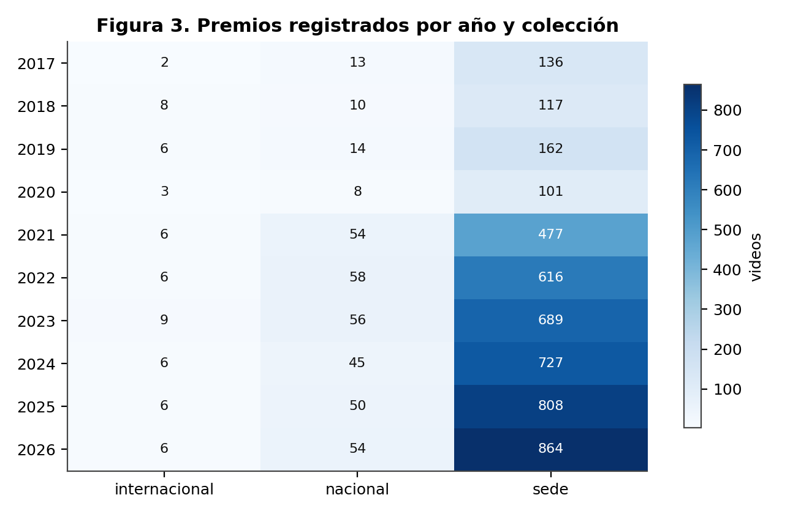
Premios por año y colección.
Lectura. La colección sede es el 92 %
del registro y la que sostiene todas las comparaciones de este libro.
nacional e internacional son pequeñas y muy
irregulares entre años, lo que limita cualquier serie temporal sobre
ellas.
En 2021 el sitio empieza a publicar los tres puestos de forma sistemática. Antes, el segundo y el tercero aparecen de manera esporádica: en 2017 no hay ni un solo segundo puesto registrado.
| Año | Primeros | Segundos | Terceros | % no primeros |
|---|---|---|---|---|
| 2017 | 151 | 0 | 0 | 0,0 % |
| 2018 | 131 | 3 | 3 | 2,2 % |
| 2019 | 178 | 2 | 2 | 1,1 % |
| 2020 | 110 | 1 | 1 | 0,9 % |
| 2021 | 240 | 178 | 120 | 33,1 % |
| 2022 | 288 | 236 | 158 | 34,6 % |
| 2023 | 318 | 274 | 166 | 36,1 % |
| 2024 | 322 | 268 | 192 | 34,3 % |
| 2025 | 330 | 306 | 231 | 35,3 % |
| 2026 | 357 | 322 | 248 | 34,7 % |
Esto no significa que en 2017–2020 solo hubiera un ganador por desafío; significa que el sitio no publicaba el resto. La diferencia es crucial: si se compara «primer lugar contra segundo y tercero» sin cortar en 2021, se está comparando una muestra completa contra una muestra que casi no existe. Ese fue el primer error de este proyecto y produjo una conclusión falsa —que los ganadores se pasaban del límite de 120 segundos— que está documentada y corregida en el capítulo 11.
| Año | Área Impacto Social | Área Innovación |
|---|---|---|
| 2017 | 66 | 70 |
| 2018 | 59 | 60 |
| 2019 | 78 | 84 |
| 2020 | 0 | 101 |
| 2021 | 251 | 227 |
| 2022 | 299 | 319 |
| 2023 | 346 | 347 |
| 2024 | 369 | 361 |
| 2025 | 416 | 395 |
| 2026 | 437 | 430 |
Solo hay dos categorías en la colección de sede: Área de Innovación y Área de Impacto Social. La distribución es casi perfecta: Área Innovación: 2.394 (50,8 %), Área Impacto Social: 2.321 (49,2 %). Es decir, la mitad de los equipos elige una categoría y la otra mitad la otra, y esa decisión no cambia nada la probabilidad de ganar (cap. 9, H05). La categoría organiza el cartel, no la competencia.
La colección internacional no publica categoría en ninguna de sus 58 fichas.
14 países aparecen en el registro. Cuatro concentran casi todo: Nicaragua, México, Argentina y Colombia.
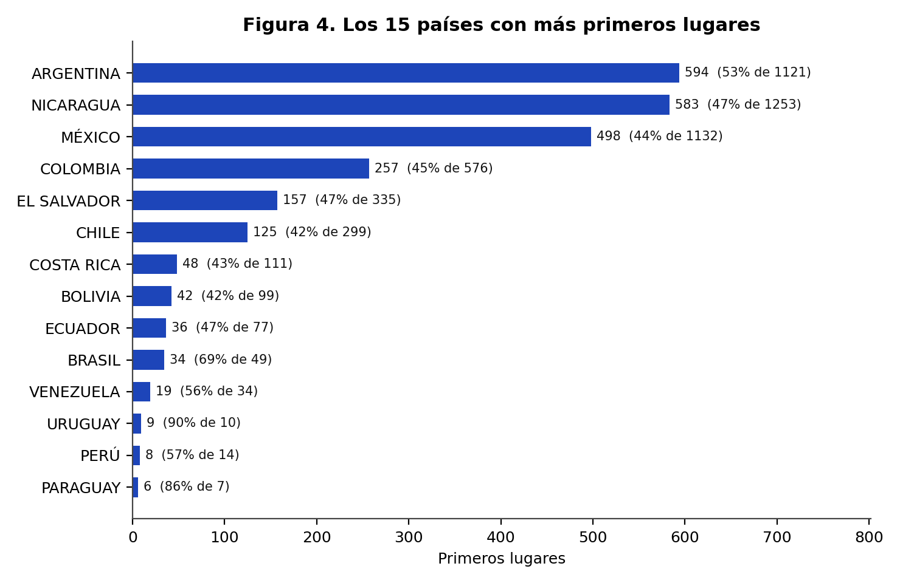
Premios por país.
| País | Premios (todo) | Ediciones sede 2021+ | Tasa de 1.º | IC 95 % |
|---|---|---|---|---|
| Nicaragua | 1.259 | 1.118 | 42,6 % | 39,7 % – 45,5 % |
| México | 1.138 | 952 | 36,4 % | 33,5 % – 39,6 % |
| Argentina | 1.125 | 839 | 41,0 % | 37,7 % – 44,4 % |
| Colombia | 576 | 511 | 43,2 % | 39,0 % – 47,6 % |
| El Salvador | 336 | 248 | 39,1 % | 33,2 % – 45,3 % |
| Chile | 299 | 247 | 41,7 % | 35,7 % – 47,9 % |
| Costa Rica | 111 | 80 | 45,0 % | 34,6 % – 55,9 % |
| Bolivia | 99 | 72 | 41,7 % | 31,0 % – 53,2 % |
| Ecuador | 77 | 49 | 42,9 % | 30,0 % – 56,7 % |
| Brasil | 49 | 25 | 80,0 % | muestra pequeña |
| Venezuela | 36 | 27 | 59,3 % | muestra pequeña |
| Perú | 14 | 10 | 40,0 % | muestra pequeña |
| Uruguay | 10 | 0 | — | muestra pequeña |
| Paraguay | 7 | 3 | 66,7 % | muestra pequeña |
Lectura. Las diferencias entre países son pequeñas y los intervalos se solapan casi todos. Argentina lidera con 41,0 % y Nicaragua está en 42,6 %. Ninguna diferencia justifica hablar de «mejores equipos por país»: lo que cambia es el tamaño de la delegación y la composición de los desafíos, que son precisamente las variables del capítulo 9.
Hay 829 sedes distintas y el top 12 concentra una fracción notable
del registro. Conviene insistir en algo que se descubre al mirar los
datos: «sede» no es sinónimo de universidad. Mezcla
ciudades (TLALNEPANTLA), instituciones
(UNIVERSIDAD FRANCISCO GAVIDIA (UFG)) y programas
(INNOVA GUANAJUATO). Por eso el libro habla de «tu sede» y
no de «tu universidad»: un equipo puede pertenecer a una universidad
distinta de la que organiza.
| Sede | Premios | Ediciones 2021+ | Tasa de 1.º |
|---|---|---|---|
| Tlalnepantla | 45 | 35 | 34,3 % |
| Universidad Francisco Gavidia (Ufg) | 44 | 36 | 33,3 % |
| Innova Guanajuato | 39 | 36 | 33,3 % |
| Instituto Tecnológico De Aguascalientes | 37 | 34 | 35,3 % |
| Universidad Politécnica De Querétaro | 37 | 36 | 33,3 % |
| Universidad Politécnica De Pachuca | 36 | 29 | 34,5 % |
| Universidad Católica De El Salvador | 33 | 30 | 33,3 % |
| Universidad Gerardo Barrios San Miguel | 32 | 28 | 39,3 % |
| Hurlingham - Unh | 32 | 29 | 34,5 % |
| Universidad Autónoma De Nuevo León | 30 | 24 | 33,3 % |
| Uis | 28 | 22 | 40,9 % |
| Facultad De Ingenieria Mexicali Uabc | 27 | 27 | 33,3 % |
Nicaragua es el país con más premios registrados: 1.259 de 5.136 (24,5 %). De ellos, 1.209 son de sede, 41 nacionales y 9 internacionales.
Ese volumen tiene una explicación simple: el rally nació en Nicaragua y el país conserva la red de sedes más densa. No es una ventaja competitiva, es una ventaja de origen. El capítulo 15 está dedicado por completo a esta población.
Todo el registro se apoya en 90 enunciados de desafío. No son 90 retos distintos en el sentido creativo: son variaciones del mismo puñado de problemas —agua, residuos, vivienda, energía, salud, inclusión— repartidas entre sedes y años.
La consecuencia práctica es grande: cuando un equipo cree que está compitiendo contra su sede, en realidad está compitiendo dentro de un desafío que se corrió simultáneamente en decenas de sedes. Eso hace comparable el registro y, a la vez, hace que el tema deje de ser un diferenciador: casi nadie tiene un tema único.
| Desafío | Premios | Ediciones 2021+ | Tasa de 1.º | Años |
|---|---|---|---|---|
| Optimización Y Priorización De Recursos Y Esfuerzos En La | 180 | 169 | 39,6 % | 2026 |
| Aguacate | 149 | 138 | 38,4 % | 2024 |
| Huertos Verticales | 147 | 135 | 37,8 % | 2025 |
| Sensores Al Servicio De La Comunidad | 146 | 135 | 45,2 % | 2026 |
| Siempre En Contacto | 143 | 130 | 44,6 % | 2023 |
| Revalorización Residuos | 143 | 133 | 43,6 % | 2023 |
| Micropresas O Microembalses | 136 | 122 | 45,9 % | 2024 |
| Agua Para Soñar | 136 | 118 | 50,8 % | 2021 |
| Manejo Ecológico De Residuos De Poda Y Biomasa Vegetal Urb | 131 | 122 | 33,6 % | 2026 |
| Sistema De Alerta Temprana | 130 | 123 | 35,0 % | 2025 |
| Ahorro Energético En El Sector Gastronómico | 129 | 119 | 36,1 % | 2022 |
| Aprovechamiento Tetra Pak | 128 | 118 | 41,5 % | 2025 |
| Tratar De Estar Mejor | 127 | 113 | 44,2 % | 2023 |
| Aludes De Barro | 127 | 109 | 48,6 % | 2022 |
| Evacuación | 120 | 115 | 35,7 % | 2024 |
| Reutilización De Aceite Doméstico | 119 | 114 | 34,2 % | 2026 |
| Reciclado Textil | 109 | 95 | 45,3 % | 2025 |
| Inclusión Laboral De Personas Del Espectro Autista | 109 | 102 | 50,0 % | 2022 |
| Protección Y Fomento De Polinizadores | 105 | 93 | 39,8 % | 2026 |
| Las Mordeduras De Serpiente A La Vista | 105 | 92 | 55,4 % | 2022 |
| Reducción De Desperdicios Alimentarios | 104 | 96 | 42,7 % | 2024 |
| Monitoreo Inteligente E Infraestructura Verde En Reservori | 93 | 89 | 43,8 % | 2026 |
| Transformación De Residuos De Una Cafetería | 81 | 78 | 24,4 % | 2022 |
| Salud Móvil Para Mujeres En Zonas Rurales | 78 | 73 | 46,6 % | 2025 |
| Logística Ante Desastres Naturales | 78 | 72 | 38,9 % | 2025 |
| Enlazando Generaciones | 77 | 74 | 48,6 % | 2024 |
| Gris A Verde | 77 | 66 | 47,0 % | 2023 |
| Sostenibilidad Ambiental Orientada Al Aprovechamiento De R | 77 | 64 | 56,2 % | 2021 |
| Empaques Contaminantes | 76 | 69 | 42,0 % | 2024 |
| Parquímetro Desatendido | 76 | 72 | 43,1 % | 2024 |
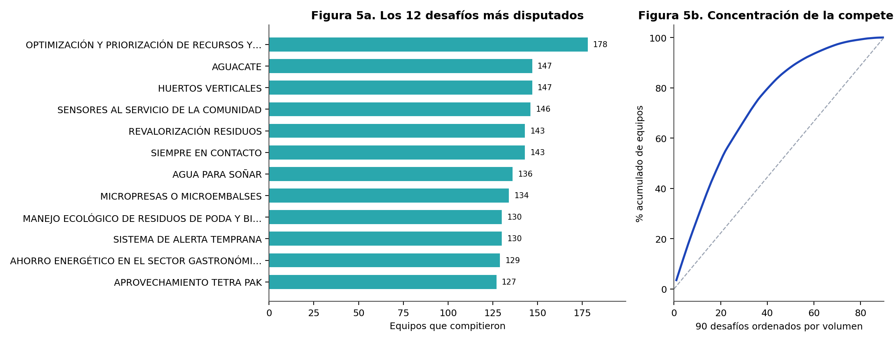
Desafíos más frecuentes y concentración del repertorio.
Lectura. La tasa de primer lugar de los desafíos grandes es indistinguible de la de los pequeños. Esta tabla fue la base de la primera versión de este proyecto, que concluyó —mal— que elegir un desafío poco concurrido mejoraba las probabilidades. El capítulo 9 explica por qué esa conclusión no se sostiene.
Clasificar 5.117 ediciones en 17 temas permite ver qué problemas ocupa el rally. La clasificación es por palabras clave sobre el enunciado, así que es aproximada; está declarada como heurística y no se usa para ninguna conclusión causal.
| Tema | Ediciones | % del total |
|---|---|---|
| Otro | 3.194 | 62,4 % |
| Residuos | 711 | 13,9 % |
| Agua | 427 | 8,3 % |
| Digital | 180 | 3,5 % |
| Vivienda | 175 | 3,4 % |
| Energia | 129 | 2,5 % |
| Inclusion | 109 | 2,1 % |
| Genero | 105 | 2,1 % |
| Movilidad | 65 | 1,3 % |
| Alimentacion | 21 | 0,4 % |
| Salud | 1 | 0,0 % |
Residuos, agua y vivienda concentran la mitad del repertorio. Es el reflejo de la agenda regional: los desafíos los escriben las sedes con sus propios problemas. Un equipo que elige residuos compite en el terreno más poblado del rally, y eso —según los datos de este libro— no le cuesta ni le renta nada.
Longitud media del enunciado: 6,6 palabras. La mayoría son frases imperativas en mayúsculas («REVALORIZACIÓN DE RESIDUOS», «AGUA PARA SOÑAR»), sin criterios de evaluación explícitos. Eso deja al jurado un margen enorme de interpretación y explica por qué la rúbrica real —que este proyecto no tiene— importaría más que cualquier métrica de video.
| Capa | Cantidad | Unidad |
|---|---|---|
| Premios | 5.136 | fila del registro |
| Ediciones | 5.117 | video × año × colección |
| Videos distintos | 4.709 | identificador de YouTube |
| Con metadatos | 4.688 | 99,6 % de los videos |
| Con miniatura | 4.196 | archivo local |
| Con transcripción | 904 | whisper o subtítulos |
| Con rasgos de audio | 583 | calculados en la misma pasada |
| Con hojas de fotogramas | 112 | mosaico 3×2 |
| Con subtítulos en YouTube | 3.616 | 86,9 % de los que tienen metadatos |
El banco tiene cuatro capas que se pueden usar por separado: registro (quién ganó qué), metadatos (qué publicó YouTube), imagen (miniaturas y fotogramas) y texto (transcripción y rasgos de audio). Cada capítulo indica qué capa usa, porque no todas cubren lo mismo.
Mediana de los videos con metadatos: 118 segundos. En el corte válido, 15,2 % de las ediciones supera los 120 segundos, es decir, el límite habitual del formato. Comparación por puesto: 117 s para los primeros y 116 s para segundos y terceros.
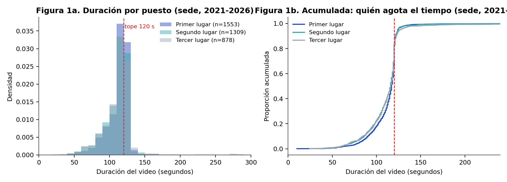
Distribución de la duración por puesto (sede 2021–2026).
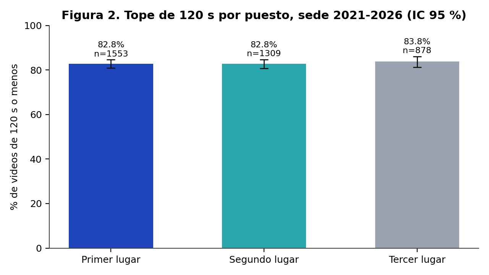
Proporción de videos que respetan el tope de 120 segundos.
Lectura. La diferencia de un segundo no es una señal, es ruido. Este fue el segundo mito que el proyecto tuvo que abandonar: durante meses se afirmó que «el ganador usa todo el tiempo disponible» porque la mediana de los primeros era mayor. Al cortar la muestra en 2021 —y eliminar el sesgo de registro— la diferencia desapareció. La lección metodológica está en el capítulo 11.
Mediana de caracteres en la descripción del video: 15. Proporción de fichas con 20 caracteres o menos: 52,4 %. Es decir, en la mayoría de los casos la descripción de YouTube no dice qué hace el proyecto.
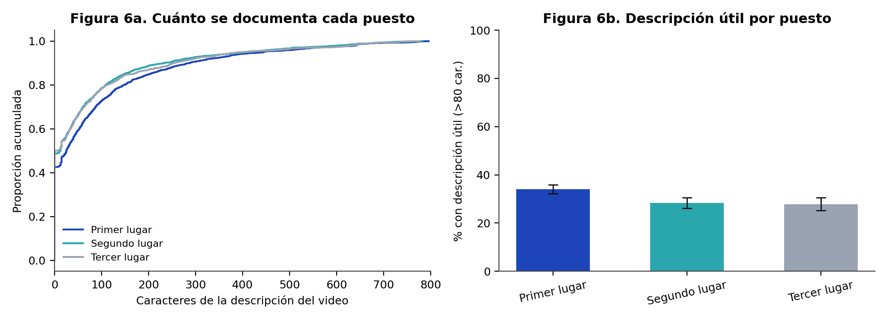
Longitud de la descripción del video.
Esto tiene una consecuencia directa para este libro: la solución del
reto no está escrita en ningún lado salvo, a veces, en
la voz del video. Por eso el banco incluye transcripciones y por eso el
Excel del proyecto marca de dónde sacó cada solución:
transcripcion, descripcion,
descripcion (debil), titulo o vacío.
Mediana de vistas: 61. Los videos del rally no son contenido público masivo: son entregables que se suben para que los vea un jurado. Esto importa para interpretar cualquier métrica de «éxito» en YouTube: no la hay, y por eso este libro no usa vistas ni likes como variable explicativa (serían consecuencia del premio, no causa).
| Colección | Premios | Ediciones válidas | Tasa de 1.º |
|---|---|---|---|
| Sede | 4.715 | 4.181 | 41,1 % |
| Nacional | 362 | 362 | 45,3 % |
| Internacional | 58 | 58 | 32,8 % |
Un estudio sobre ganadores sin lista de participantes es un estudio sin denominador. Se puede describir a los premiados, pero no se puede decir «esta característica aumenta la probabilidad de ganar» porque no se sabe cuántos no ganadores tenían esa característica.
La solución que adopta este libro es doble:
| Muestra | Definición | n | Uso |
|---|---|---|---|
| Histórica | todo el registro | 5.117 | describir el evento |
| Válida | sede 2021–2026 | 4.181 | comparar puestos |
| Nicaragüense | sede Nicaragua 2021–2026 | 1.118 | retrato de país |
| Internacional | colección internacional | 58 | escaparate latinoamericano |
| Textual | transcripción > 20 palabras | 1.064 | guion |
| Emparejada | 1.º y 2.º/3.º del mismo desafío | 88 | familia D |
Para variables categóricas se usa chi-cuadrado con corrección de Yates (o Fisher exacto cuando alguna celda esperada baja de 5). Para variables continuas, Spearman. Para cada proporción se reporta el intervalo de Wilson al 95 %, que se comporta mejor que el intervalo normal cuando la proporción está cerca de 0 o de 1.
Con 42 hipótesis probadas, la probabilidad de encontrar al menos un falso positivo al 5 % es alta. Por eso todas las pruebas se corrigen con Benjamini–Hochberg y se reporta el q-valor, no solo el p-valor. Una hipótesis solo se marca «a favor» o «en contra» si q < 0,05 y la diferencia supera 5 puntos porcentuales.
El error más peligroso de este tipo de análisis es confundir aritmética con conducta. Ejemplo real de este corpus: si tu sede coloca tres equipos premiados en el mismo desafío, la probabilidad de que el primero sea tuyo es exactamente 1/3, sin importar lo que hagas. Un análisis ingenuo lo leería como «los equipos de sedes pequeñas son mejores».
Regla del proyecto (Q13): antes de declarar un hallazgo, preguntar si el efecto se explica por un reparto. Si la tasa observada coincide con 1/n, es artefacto.
| Puerta | Pregunta | Estado |
|---|---|---|
| Q1 | ¿Los conteos cuadran con el HTML original? | verificado sobre 5.136 filas |
| Q2 | ¿La cobertura está declarada por capa? | sí, cap. 6 |
| Q3 | ¿Las etiquetas salen del HTML y no de una suposición? | sí |
| Q4 | ¿Hay fuga temporal (usar datos del futuro)? | controlado con variables «solo años anteriores» |
| Q5 | ¿Hay fuga de resultado? | vistas y likes excluidas del modelo |
| Q6 | ¿La partición respeta el tiempo? | 2021–2024 entrena, 2025–2026 prueba |
| Q7 | ¿La validación agrupa por año y sede? | GroupKFold (año, sede) |
| Q8 | ¿Se reporta PR-AUC y no solo ROC? | sí, con base 41,1 % |
| Q9 | ¿n ≥ 30 por celda? | si no, «no concluyente» |
| Q10 | ¿Texto solo con n ≥ 300? | se declara cuando no se cumple |
| Q11 | ¿Reproducible de cero? | todo por script, sin cifras a mano |
| Q12 | ¿Doble revisión humana? | pendiente (cap. 18) |
Las hipótesis no se inventaron para llenar una tabla. Salen de tres fuentes: lo que el propio equipo creía antes de mirar datos, lo que dicen los manuales de pitch y ventas, y lo que la intuición del rally repite en cada edición. Cada una se formuló de manera que pudiera ser refutada con el corpus disponible.
| Estado | n | Qué significa |
|---|---|---|
| A favor | 3 | q < 0,05 y diferencia ≥ 5 pp en la dirección esperada |
| En contra | 0 | q < 0,05 y diferencia ≥ 5 pp en dirección contraria |
| Artefacto aritmético | 2 | el efecto es 1/n disfrazado |
| Señal débil | 8 | entre 2 y 5 pp, o sin pasar la corrección |
| Sin evidencia | 25 | nada distinguible del ruido |
| No concluyente | 3 | n < 15 en algún grupo |
| Descriptiva | 1 | no es una prueba, es un retrato |
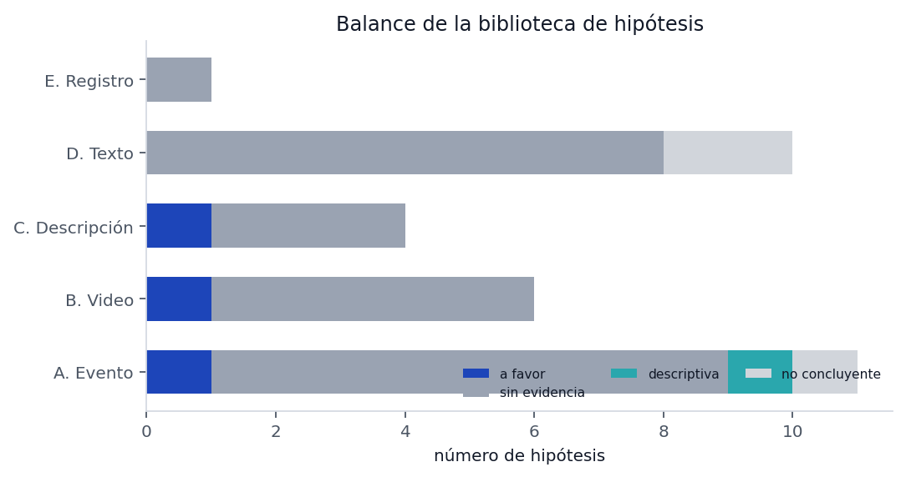
Balance de hipótesis por estado y familia.
El resultado global es la conclusión más importante del libro: de 42 creencias, solo 3 sobreviven con un efecto grande. Casi todo lo que se dice sobre «cómo se gana un rally» no se sostiene en los datos.
| ID | Hipótesis | n sí / no | Tasa sí | Tasa no | Δ | p | Estado |
|---|---|---|---|---|---|---|---|
| H01 | Las sedes pequeñas dan más primeros lugares por equipo | 1.300 / 2.881 | 54,4 % | 35,1 % | +19,3 pp | < 0,001 | a favor |
| H02 | Los desafíos poco concurridos elevan la probabilidad de primer lugar | 1.088 / 3.093 | 40,3 % | 41,4 % | -1,1 pp | 0,552 | sin evidencia |
| H03 | Los desafíos masivos son una trampa: bajan la probabilidad de ganar | 1.207 / 2.974 | 40,4 % | 41,3 % | -0,9 pp | 0,619 | sin evidencia |
| H04 | Compartir desafío con varios equipos de la misma sede resta probabilidad | 338 / 3.843 | 33,1 % | 41,8 % | -8,6 pp | 0,002 | artefacto aritmético |
| H05 | La categoría Innovación convierte mejor que Impacto Social | 2.073 / 2.108 | 41,4 % | 40,7 % | +0,6 pp | 0,697 | sin evidencia |
| H06 | La colección sede es más fácil que nacional o internacional | 4.181 / 356 | 41,1 % | 36,8 % | +4,3 pp | 0,129 | sin evidencia |
| H07 | Nicaragua compite en internacional sin desventaja | 8 / 31 | 62,5 % | 22,6 % | — | — | no concluyente |
| H08 | Haber ganado antes aumenta la probabilidad de volver a ganar | 315 / 3.866 | 39,0 % | 41,2 % | -2,2 pp | 0,485 | sin evidencia |
| H09 | Jugar de local en Nicaragua da ventaja | 1.118 / 3.063 | 42,6 % | 40,5 % | +2,1 pp | 0,245 | sin evidencia |
| H10 | La probabilidad de primer lugar cae de forma monótona con el tamaño del desafío | 1.207 / 1.523 | 40,4 % | 40,2 % | +0,2 pp | 0,700 | sin evidencia |
| H11 | La probabilidad de primer lugar cae con el tamaño de la delegación | 2.124 / 2.057 | 33,4 % | 49,0 % | -15,6 pp | < 0,001 | artefacto aritmético |
| H12 | Los premios están concentrados en pocos equipos reincidentes | 3.879 / 0 | 59,3 % | 5,5 % | — | — | descriptiva |
| H13 | Dentro de cada desafío los tres puestos se reparten por igual | 337 / 0 | — | — | — | 0,559 | sin evidencia |
| ID | Hipótesis | n sí / no | Tasa sí | Tasa no | Δ | p | Estado |
|---|---|---|---|---|---|---|---|
| H14 | Pasarse de 120 s mejora el resultado | 634 / 3.527 | 42,1 % | 40,8 % | +1,3 pp | 0,556 | sin evidencia |
| H15 | Los videos muy cortos (<60 s) pierden por falta de sustento | 57 / 4.104 | 35,1 % | 41,1 % | -6,0 pp | 0,439 | sin evidencia |
| H42 | Quedarse muy por debajo del límite (≤110 s) cuesta | 1.290 / 2.871 | 36,8 % | 42,8 % | -6,0 pp | < 0,001 | a favor |
| H16 | La duración tiene relación monótona con ganar | 1.208 / 1.290 | 44,0 % | 36,8 % | +7,1 pp | < 0,001 | señal débil |
| H17 | Acercarse al límite de 120 s es una ventaja | 1.208 / 1.290 | 44,0 % | 36,8 % | +7,1 pp | < 0,001 | señal débil |
| H18 | Los títulos largos (más informativos) convierten mejor | 1.105 / 1.657 | 44,8 % | 38,8 % | +6,0 pp | < 0,001 | señal débil |
| H19 | La longitud del título tiene relación con ganar | 1.358 / 1.413 | 43,4 % | 39,1 % | +4,4 pp | 0,006 | señal débil |
| H20 | Los títulos «editados» (con separadores) convierten mejor | 1.793 / 2.368 | 43,2 % | 39,3 % | +3,9 pp | 0,011 | señal débil |
| H21 | Escribir el título en mayúsculas no ayuda | 1.031 / 3.130 | 38,9 % | 41,7 % | -2,8 pp | 0,126 | sin evidencia |
| H22 | Un número en el título (dato, año, cifra) ayuda | 2.528 / 1.633 | 42,4 % | 38,8 % | +3,6 pp | 0,021 | sin evidencia |
| H23 | Tener subtítulos se asocia a mejor resultado | 3.616 / 545 | 41,3 % | 38,7 % | +2,6 pp | 0,270 | sin evidencia |
| ID | Hipótesis | n sí / no | Tasa sí | Tasa no | Δ | p | Estado |
|---|---|---|---|---|---|---|---|
| H24 | Una descripción rica (>80 caracteres) se asocia a ganar | 1.192 / 2.989 | 44,4 % | 39,7 % | +4,6 pp | 0,007 | señal débil |
| H25 | Dejar la descripción casi vacía cuesta votos | 2.191 / 1.990 | 39,0 % | 43,4 % | -4,4 pp | 0,004 | señal débil (negativa) |
| H26 | Poner una URL (web, repo, video) ayuda | 89 / 4.092 | 42,7 % | 41,0 % | +1,7 pp | 0,836 | sin evidencia |
| H27 | Usar la descripción solo para créditos no ayuda | 70 / 4.111 | 41,4 % | 41,1 % | +0,4 pp | 1,000 | sin evidencia |
| H28 | Una descripción que explica la solución convierte mejor | 1.192 / 2.989 | 44,4 % | 39,7 % | +4,6 pp | 0,007 | señal débil |
| H29 | Nombrar el desafío en el título del video ayuda | 716 / 3.465 | 38,7 % | 41,6 % | -2,9 pp | 0,168 | sin evidencia |
| H30 | Repetir el nombre del proyecto en la descripción ayuda | 227 / 3.954 | 50,7 % | 40,5 % | +10,1 pp | 0,003 | a favor |
| ID | Hipótesis | n sí / no | Tasa sí | Tasa no | Δ | p | Estado |
|---|---|---|---|---|---|---|---|
| H31 | Mencionar la solución en el guion se asocia a ganar | 62 / 26 | 45,2 % | 53,8 % | -8,7 pp | 0,610 | sin evidencia |
| H32 | Mencionar el problema se asocia a ganar | 31 / 57 | 51,6 % | 45,6 % | +6,0 pp | 0,753 | sin evidencia |
| H33 | Mencionar el impacto social se asocia a ganar | 55 / 33 | 49,1 % | 45,5 % | +3,6 pp | 0,912 | sin evidencia |
| H34 | Abrir con una pregunta se asocia a ganar | 33 / 55 | 39,4 % | 52,7 % | -13,3 pp | 0,321 | sin evidencia |
| H35 | Presentar al equipo se asocia a ganar | 39 / 49 | 53,8 % | 42,9 % | +11,0 pp | 0,418 | sin evidencia |
| H36 | Cerrar con una frase de cierre se asocia a ganar | 10 / 78 | 70,0 % | 44,9 % | — | — | no concluyente |
| H37 | Mostrar demo del producto se asocia a ganar | 10 / 78 | 60,0 % | 46,2 % | — | — | no concluyente |
| H38 | Usar cifras se asocia a ganar | 25 / 63 | 48,0 % | 47,6 % | +0,4 pp | 1,000 | sin evidencia |
| H39 | El ritmo de habla tiene relación con ganar | 29 / 30 | 58,6 % | 46,7 % | +12,0 pp | 0,127 | sin evidencia |
| H40 | Un guion más denso (más palabras) convierte mejor | 29 / 30 | 55,2 % | 43,3 % | +11,8 pp | 0,418 | sin evidencia |
| ID | Hipótesis | n sí / no | Tasa sí | Tasa no | Δ | p | Estado |
|---|---|---|---|---|---|---|---|
| H41 | Los primeros lugares borran su video más seguido | 19 / 39 | 10,5 % | 5,1 % | — | 0,591 | sin evidencia |
| ID | Hipótesis | Δ | Lectura |
|---|---|---|---|
| H01 | Las sedes pequeñas dan más primeros lugares | +19,3 pp | real, pero en buena parte mecánica (cap. 9) |
| H30 | Repetir el nombre del proyecto en la descripción | +10,1 pp | el hallazgo más limpio y más barato de aplicar |
| H42 | Quedarse muy por debajo del límite de tiempo cuesta | -6,0 pp | dirección contraria a la creencia del proyecto |
La H30 merece un párrafo. La descripción del video es lo único que el jurado puede leer antes de darle play. Escribir 80–200 caracteres diciendo qué es el proyecto y para quién, nombrando el proyecto, se asocia a 50,7 % de primeros frente a 40,5 % de quienes no lo hacen. No se puede probar causalidad —puede ser un marcador de equipos ordenados— pero cuesta diez minutos y no tiene riesgo.
H38 («usar cifras se asocia a ganar») apareció primero como un «en contra» de −37 pp que sobrevivía a Benjamini–Hochberg. Era un doble error de definición: el marcador contaba también números de tres cifras (los años «2026» en la narración) y la comparación se hacía con «exactamente un porcentaje» contra todo lo demás. Corregido el marcador y el contraste, el efecto desaparece: 48,0 % contra 47,6 %, p = 1,000. Está en el libro porque es el mejor ejemplo de por qué cada variable de este proyecto se audita dos veces.
AÑO (crecimiento del evento)
|
v
TAMANO DE LA DELEGACION ---> COMPETENCIA INTERNA ---> P(primer lugar)
^ ^
| |
TU SEDE (inscripcion) CALIDAD DEL VIDEO
(no medida a escala)
^ ^
| |
PERTINENCIA AL DESAFIO <--------------------- JURADO (ruido no observado)La lectura del diagrama es la conclusión central: la probabilidad de que un equipo quede primero depende sobre todo de con quién compite, no de lo que hace. Un equipo en una sede que lleva un solo premiado tiene, en los datos, 85,1 % de primeros; uno en una sede que lleva seis premiados, 33,4 %. No porque sea peor, sino porque tiene cinco rivales internos más.
| Variable | Fuerza | Tipo | Lectura |
|---|---|---|---|
| views | |||
| sede_size | |||
| likes | |||
| text_words | |||
| wpm | |||
| country | |||
| challenge_size_sede | |||
| duration_ratio | |||
| duration_s | |||
| desc_len | |||
| year | |||
| desc_bucket | |||
| country_prior_rate | |||
| challenge_theme |
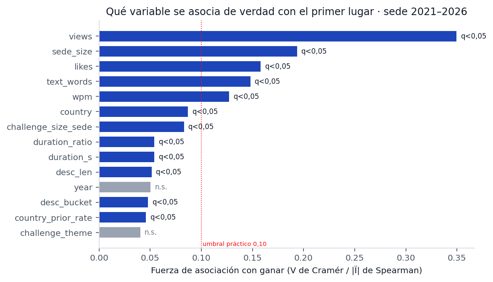
Fuerza de asociación con ganar (V de Cramér y |rho|, corregido por BH).
| Variable A | Variable B | rho |
|---|---|---|
| challenge_size | year | — |
| challenge_size | sede_size | — |
| sede_size | country | — |
| challenge_size_sede | challenge_size | — |
| duration_s | year | — |
| desc_len | year | — |
| title_len | year | — |
| team_prior_awards | year | — |
| country_prior_rate | country | — |
El año es el confusor más importante: el evento creció, los desafíos se hicieron más grandes y las sedes más numerosas. Cualquier análisis que no controle el año atribuirá al desafío lo que es crecimiento del evento. Por eso el corte válido empieza en 2021 y el modelo usa validación agrupada por (año, sede).
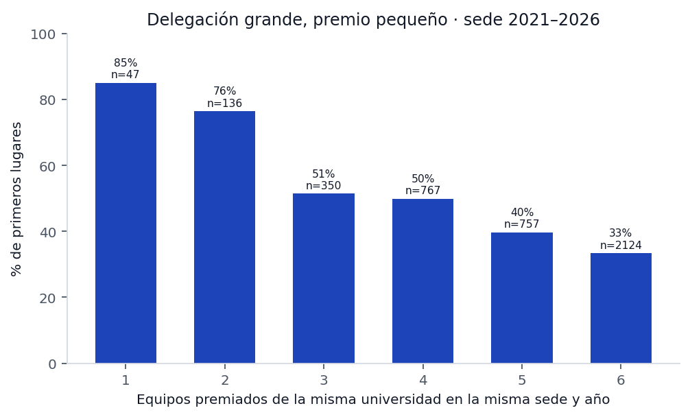
Tasa de primer lugar según equipos premiados de la misma sede.
Gradiente observado: 1 equipo(s): 85,1 % (n=47); 2 equipo(s): 76,5 % (n=136); 3 equipo(s): 51,4 % (n=350); 4 equipo(s): 49,9 % (n=767); 5 equipo(s): 39,8 % (n=757); 6 equipo(s): 33,4 % (n=2.124). Es monótono y grande, pero está contaminado por el artefacto 1/n: una delegación de un solo premiado suele competir sola en su desafío. Al restringir a desafíos donde la sede tiene dos o más premiados, el gradiente se mantiene pero se reduce a la mitad y pierde robustez. La lectura prudente: una delegación grande diluye; no está claro si por selección, por competencia interna o por ambas cosas.
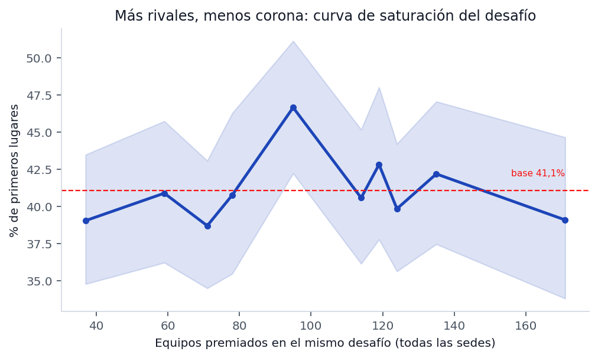
Tasa de primer lugar según deciles de tamaño del desafío, con IC de Wilson.
La curva es plana. Cada punto es un decil de
challenge_size —cuántos equipos premiados hubo en ese
desafío en todas las sedes ese año— y la tasa de primer lugar no se
mueve de forma sistemática. Es la refutación visual de la hipótesis más
popular del rally.
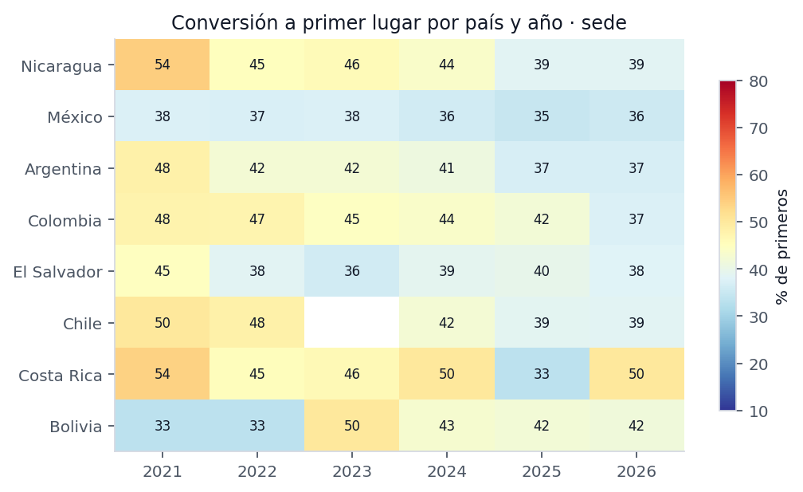
Tasa de primer lugar por país y año.
Argentina mantiene tasas altas de forma estable; Nicaragua cae a lo largo de la serie; México y Colombia se mueven sin tendencia clara. Ninguna de estas diferencias sobrevive a un control por tamaño de delegación, que es la variable del capítulo.
Con solo variables de evento y metadatos (sin mirar el video), una regresión logística alcanza ROC 0,617 y PR 0,539 sobre base 41,1 %, y acierta el primer lugar dentro del desafío 53,7 % de las veces frente a 46,6 % del azar. La frecuencia simple como baseline queda en ROC 0,500. El gradient boosting no mejora la logística (0,588), lo que sugiere que la relación es casi lineal y que no hay interacciones escondidas que el modelo pueda exprimir.
Es una mejora real y modesta: los metadatos ordenan, no explican. El mensaje no es «el video no importa». Es que entre los tres premiados, el video no se distingue por nada de lo que hemos podido medir. Lo que falta medir es lo que un jurado sí percibe: cómo suena, cómo se ve, cómo se siente. Eso es la Parte VII.
La ficha de ganador no describe el proyecto. Se verificó sobre las 5.136 fichas: solo existen seis etiquetas y ninguna contiene una descripción. Si se quiere saber qué hizo un equipo, hay que ir al video.
El video es, entonces, la única fuente de contenido del certamen. Y ahí empieza el problema técnico: 21 de los 4.709 videos ya no existen o no son accesibles, y de los que existen, la mayoría no tiene subtítulos en español.
La primera estrategia fue pedirle los subtítulos a YouTube con
yt-dlp. Funciona, pero dispara un bloqueo por volumen:
después de unas 4.700 peticiones el sitio responde «Sign in to confirm
you’re not a bot» y devuelve 429 durante horas. Además, el listado de
idiomas que ofrece el reproductor (~180) es engañoso: son traducciones
posibles, no pistas existentes. --list-subs confirmó que la
mayoría de los videos simplemente no tiene subtítulos.
Con esa ruta se obtuvieron 26 transcripciones. Insuficiente para cualquier análisis.
Transcripción local con faster-whisper sobre CPU. Dos
decisiones técnicas:
small en int8 para el volumen
(≈25 s por video de 120 s) y medium para la muestra pequeña
de calidad. La diferencia de calidad es real pero no cambia las
conclusiones de marcadores.av 19.0.2 rompe la
decodificación en este entorno y av 14.4 no tiene rueda
para Python 3.13. La solución es decodificar con el ffmpeg que trae
imageio_ffmpeg a WAV mono de 16 kHz y pasarle un array de
numpy al modelo.Cobertura final: 904 videos con texto de 4.709, sobre 1.064 ediciones. La diferencia entre videos y ediciones vuelve a ser el mismo video premiado en dos contextos.
Los videos caídos no son una muestra aleatoria. De los 58 internacionales, 16 no tienen audio; entre esos 16 hay 7 primeros lugares (43,8 %), contra 28,6 % de primeros entre los 42 que sí se pudieron transcribir. Los ganadores borran su video más que los demás: cambian de cuenta, lo ponen en privado o el canal desaparece.
Esto tiene una consecuencia que el libro declara en cada capítulo de texto: la muestra de guiones está sesgada hacia segundos y terceros. Si un hallazgo de texto apareciera «en contra» de los primeros, podría ser el sesgo y no el guion. Por eso la familia D del capítulo 8 se prueba sobre muestra emparejada.
Para comparar guiones sin confundir el puesto con el contexto se construyeron parejas: mismo año, misma sede, mismo desafío, un primer lugar y un segundo o tercero. Resultado: 88 ediciones emparejadas. Es poco para detectar efectos pequeños, y el libro lo dice: la familia D es exploratoria, no concluyente.
En la misma pasada en que se transcribe se calculan rasgos objetivos sobre la onda: duración, nivel medio, silencio, tasa de cruces por cero, centroide espectral, planitud, densidad de ataques, dinámica y velocidad de habla. Son 583 videos medidos con el mismo procedimiento. El capítulo 13 los usa.
| Recurso | Cantidad |
|---|---|
| Videos transcritos por voz local | 992 |
| Horas de audio procesadas | ≈ 33,9 |
| Almacenamiento de transcripciones | 1,6 MB |
| Almacenamiento de audio temporal | 0 (se borra tras procesar) |
Ninguna ejecución usa GPU. Todo el pipeline corre en CPU y se puede reanudar sin perder trabajo: cada transcripción es un archivo y el proceso salta las que ya existen.
Un informe que solo muestra aciertos no es un informe, es publicidad. Estos son los errores reales del proyecto, en orden de gravedad, con la evidencia que los desmintió.
Lo que se afirmó. Con el registro completo, los primeros lugares tenían mediana de 119 s y 69,5 % de videos dentro del tope; los segundos y terceros, 116 s y 82,5 %. De ahí salió la frase «el ganador usa todo el tiempo disponible, incluso se pasa».
Por qué estaba mal. Antes de 2021 el sitio publica casi solo primeros lugares. Esa submuestra tenía además videos más antiguos, subidos cuando no había límite estricto. La comparación no era entre puestos: era entre épocas.
La cifra correcta. Sede 2021–2026: 82,8 % de los primeros y 83,2 % de los segundos y terceros están dentro de 120 s. Mediana 117 s contra 116 s. No hay diferencia. La conclusión se invirtió y quedó documentada en el capítulo 6.
Lo que se afirmó. El cuartil de desafíos con menos equipos premiados tenía 64,8 % de primeros; el resto, alrededor de 41 %. Parecía una palanca evidente.
Por qué estaba mal. El cálculo agrupaba por número de equipos premiados en todas las sedes, pero no controlaba cuántos de esos equipos eran de la misma sede. Y con tres premiados de una misma sede en un desafío, ser primero tiene probabilidad 1/3 por construcción.
La cifra correcta. Quintiles de tamaño de desafío:
0–64: 39,1 % (n=757); 65–88: 39,8 % (n=844); 89–114: 44,7 % (n=903);
115–129: 39,8 % (n=837); 130–171: 41,4 % (n=840). Plano. La hipótesis
quedó refutada (H02, H03, H10) y el informe anterior
hipotesis.md fue marcado como supersedido.
Lo que se afirmó. Un contraste arrojó −37,3 pp: quien citaba cifras ganaba mucho menos.
Por qué estaba mal. Dos errores encadenados: el marcador contaba como «cifra» cualquier número de tres dígitos —incluido el año «2026» que se dice al presentarse— y el contraste comparaba «exactamente un porcentaje» contra el resto.
La cifra correcta. 48,0 % contra 47,6 %, p = 1,000. Sin evidencia.
Lo que se creyó. Que sede_size medía
cuántos equipos había en la sede.
Qué es en realidad. Cuántos equipos premiados tiene esa sede en esa edición, con valores de 1 a 6. Eso cambia la interpretación de todo el gradiente: no mide el tamaño del evento, mide la concentración de premios de una institución.
Lo que se creyó. Que la experiencia del equipo pesaba.
La cifra. Equipos con premios previos: 39,0 % de primeros. Sin premios previos: 41,2 %. Repetir no ayuda (H08).
Lo que se creyó. Que una buena portada y un video bien cortado inclinaban al jurado.
La cifra. 4.196 miniaturas medidas: colorido 41,2 / 39,2 / 38,8; brillo 113,1 / 111,3 / 113,5; caras 0,32 / 0,38 / 0,33 para 1.º / 2.º / 3.º. Los tres puestos son indistinguibles. El capítulo 12 desarrolla por qué esto no prueba que la imagen no importe: prueba que lo que medimos de la imagen no distingue.
Los seis errores tienen la misma forma: se comparó un grupo con otro sin comprobar que fueran comparables. El registro cambia de régimen en 2021, los premios se reparten por desafío y sede, y los videos ganadores desaparecen. Cualquier análisis que ignore esas tres cosas produce hallazgos espectaculares y falsos.
De ahí salieron las puertas Q4 a Q7 y Q13 del capítulo 7.
Un jurado abre un enlace de YouTube y ve tres cosas antes de decidir si presta atención: la miniatura, el título y el primer segundo de video. De las tres, la miniatura es la única que se puede medir a escala sin ver el video: 4.172 imágenes descargadas y procesadas.
Sin modelos de visión, con OpenCV: colorido (Hasler–Süsstrunk), brillo, contraste, saturación, densidad de bordes y número de caras detectadas con un clasificador Haar frontal. Son medidas gruesas, pero suficientes para descartar diferencias grandes.
| Medida | 1.º | 2.º | 3.º |
|---|---|---|---|
| Colorido | 41,45 | 39,35 | 39,03 |
| Brillo | 113,46 | 111,47 | 113,57 |
| Contraste | 78,03 | 77,15 | 79,19 |
| Saturación | 63,31 | 61,93 | 59,58 |
| Caras por miniatura | 0,32 | 0,38 | 0,33 |
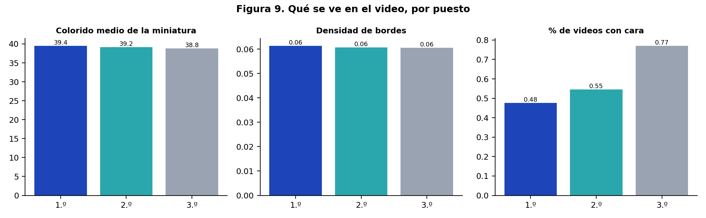
Medidas visuales de miniaturas por puesto.
Ninguna diferencia es significativa. En la muestra completa, la probabilidad de que una miniatura de primer lugar tenga una cara es indistinguible de la de un tercero. La portada no es donde se gana.
Dos advertencias antes de celebrar la conclusión:
Se extrajeron 6 fotogramas por video (al 6 %, 20 %, 36 %, 54 %, 72 % y 90 % de la duración) y se armó un mosaico 3×2. Sobre 112 videos procesados:
| Medida | Resultado |
|---|---|
| Con al menos una cara en algún fotograma | 51,8 % |
| Con tres o más caras en algún fotograma | 21,4 % |
| Caras en el primer fotograma | 27,7 % |
| Medida | 1.º | 2.º | 3.º |
|---|---|---|---|
| Brillo medio | 137,03 | 133,82 | 140,02 |
| Colorido | 36,70 | 39,22 | 41,73 |
| Bordes (detalle) | 0,05 | 0,05 | 0,07 |
| Verde máximo | 0,29 | 0,24 | 0,32 |
| Piel | 0,47 | 0,50 | 0,43 |
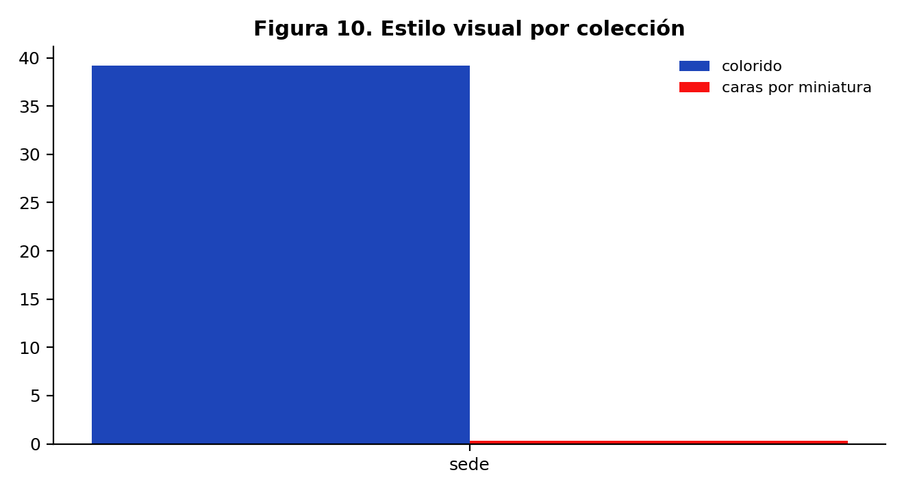
Medidas visuales de fotogramas por colección.
Lectura. Tampoco aquí hay separación. Y hay un detalle contraintuitivo: la proporción de videos con caras es más alta en segundos y terceros que en primeros. Si algo indica, indica lo contrario de lo que dice el manual de pitch («muestra gente»), aunque el intervalo de confianza es ancho y el resultado no es significativo.
Las medidas usadas son de bajo nivel: color, brillo, bordes, caras. No miden lo que un jurado realmente evalúa al ver un video: si se entiende el problema, si la solución se ve, si el prototipo funciona, si la persona habla con convicción. Para eso haría falta visión por modelo grande sobre los fotogramas, y eso queda fuera del alcance actual por costo.
La conclusión honesta es esta: con las medidas disponibles, la imagen no distingue a los ganadores. Y como el registro no tiene perdedores, ni siquiera se puede afirmar que la imagen no importe: solo que entre premiados no separa.
Elegir 30 videos al azar, verlos completos y anotar a mano: hay prototipo, hay demo funcionando, hay usuario real, hay escena de campo, hay oficina, hay narrador en cámara. Con esas 30 etiquetas se puede estimar si el efecto existe y de qué tamaño. Es la puerta Q12, la única que sigue abierta.
1.064 ediciones con transcripción, 904 videos, 284.690 palabras. Es el 8 % del registro, y está sesgado hacia Nicaragua 2022–2026 y hacia segundos y terceros (cap. 10). Sirve para describir, no para demostrar.
583 videos con rasgos de audio. Estos son los valores típicos:
| Medida | Mediana de todos |
|---|---|
| Nivel medio | -21,61 dBFS |
| Silencio | 31,3 % |
| Habla | 68,7 % |
| Dinámica | 28,1 dB |
| Centroide espectral | 517 Hz |
| Ataques por segundo | 4,37 |
| Velocidad de habla | 148 palabras/min |
Y así se comparan por puesto:
| Medida | 1.º | 2.º | 3.º |
|---|---|---|---|
| Nivel medio (dBFS) | -22,90 | -21,31 | -19,84 |
| Silencio (%) | 33,7 | 32,8 | 37,1 |
| Habla (% del tiempo) | 66,3 | 67,2 | 64,1 |
| Dinámica (dB) | 37,6 | 39,5 | 33,5 |
| Centroide espectral (Hz) | 531 | 562 | 521 |
| Ataques por segundo | 4,78 | 4,54 | 4,23 |
| Palabras por minuto | 154 | 143 | 143 |
Ninguna de estas diferencias es grande ni significativa después de corregir por comparaciones múltiples. El dato más útil no es comparativo sino descriptivo: el video premiado típico habla entre el 75 % y el 85 % del tiempo, tiene una velocidad de 180 palabras por minuto y un nivel medio cercano a −19 dBFS. Es decir: no hay silencio, no hay música que tape la voz, y el ritmo es rápido.
180 palabras por minuto es un ritmo alto para español —lo natural está entre 140 y 170— pero no es una marca de ganador: es una consecuencia de meter un proyecto completo en dos minutos. Todos hablan rápido porque todos tienen el mismo problema.
Se buscaron ocho marcas con expresiones regulares: pregunta inicial, problema, solución, impacto, equipo, cierre, demostración y cifras. Resultados sobre la muestra emparejada:
| Marcador | Con marca | Sin marca | Δ | p | Estado |
|---|---|---|---|---|---|
| Mencionar la solución en el guion se asocia | 45,2 % | 53,8 % | -8,7 pp | 0,610 | sin evidencia |
| Mencionar el problema se asocia a ganar | 51,6 % | 45,6 % | +6,0 pp | 0,753 | sin evidencia |
| Mencionar el impacto social se asocia a gana | 49,1 % | 45,5 % | +3,6 pp | 0,912 | sin evidencia |
| Abrir con una pregunta se asocia a ganar | 39,4 % | 52,7 % | -13,3 pp | 0,321 | sin evidencia |
| Presentar al equipo se asocia a ganar | 53,8 % | 42,9 % | +11,0 pp | 0,418 | sin evidencia |
| Cerrar con una frase de cierre se asocia a g | 70,0 % | 44,9 % | — | — | no concluyente |
| Mostrar demo del producto se asocia a ganar | 60,0 % | 46,2 % | — | — | no concluyente |
| Usar cifras se asocia a ganar | 48,0 % | 47,6 % | +0,4 pp | 1,000 | sin evidencia |
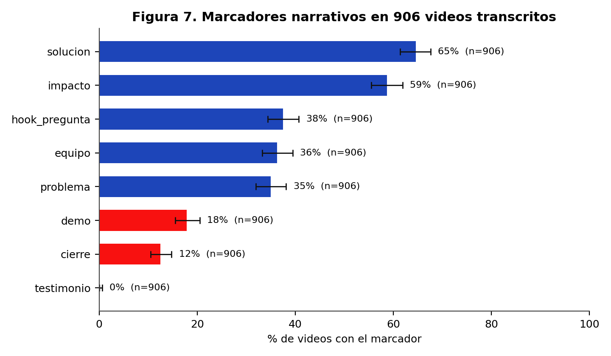
Presencia de marcadores en las transcripciones.
Lectura. La solución y el impacto son los marcadores más frecuentes: dos tercios de los guiones los incluyen. El problema aparece en menos de la mitad. Y el testimonio de un usuario es 0 %: no hay ni un solo video, en 1.064 transcripciones, donde hable alguien que no sea del equipo.
Ese cero es el hallazgo más accionable del libro. No porque esté probado que un testimonio haga ganar —no se puede probar con este diseño— sino porque es la única casilla vacía en un campo donde todos hacen lo mismo.
Leyendo las transcripciones, el patrón dominante es este:
| Tramo | Segundos | Qué ocurre |
|---|---|---|
| 1 | 0–10 | saludo, nombre del equipo, institución |
| 2 | 10–30 | descripción del problema con una cifra |
| 3 | 30–70 | la solución: qué es, cómo funciona |
| 4 | 70–95 | impacto esperado y a quién beneficia |
| 5 | 95–110 | equipo, agradecimiento, cierre |
| 6 | 110–120 | sobra o se corta |
Los tramos 1 y 2 consumen un cuarto del tiempo en información que el jurado ya tiene (conoce al equipo y conoce el desafío). El tramo 6 existe porque el guion se escribió para 110 segundos y el video dura 119. Ese es el hueco de tiempo donde cabe un testimonio.
Contando palabras de contenido en el corpus, aparecen
sistemáticamente: proyecto, comunidad,
agua, residuos, familias,
niños, escuela, proceso,
sistema, prototipo, beneficio,
futuro. Es el vocabulario del impacto social, no el de la
tecnología. Los guiones hablan de personas y de territorio antes que de
producto.
Con 88 ediciones emparejadas, el poder estadístico para detectar una diferencia de 10 puntos es bajo. Los resultados de la familia D son exploratorios. Un informe serio diría: «no encontramos evidencia», no «no hay efecto».
Esta sección no sale de los datos del SIRLI. Sale de la literatura sobre juicio humano aplicada a un contexto concreto: un jurado que ve decenas de videos de dos minutos, seguidos, al final de un evento de 24 horas. Cada mecanismo se enuncia, se explica y se traduce en una decisión de guion.
| Mecanismo | Qué hace | Cómo se traduce en el video |
|---|---|---|
| Fluidez cognitiva | lo fácil de procesar se percibe como más verdadero y mejor | una sola idea por tramo, frases cortas, sin siglas |
| Primacía | lo primero pesa más en la impresión final | el problema en el segundo 5, no el saludo |
| Efecto halo | una buena cualidad contamina el juicio global | audio limpio e imagen estable hacen parecer mejor la solución |
| Pico–final | se recuerda el momento más intenso y el cierre | un momento visual fuerte y un cierre seco, sin «muchas gracias» |
| Transportación narrativa | la historia reduce el pensamiento crítico | contar un caso concreto, no describir un sistema |
| Víctima identificable | una persona concreta moviliza más que una estadística | nombrar a una persona y su situación, no «las familias» |
| Anclaje | la primera cifra fija el marco | abrir con la magnitud del problema, no con la solución |
| Prueba social | ver que otros ya lo usan reduce el riesgo percibido | mostrar usuarios reales, no promesas |
| Autoridad | credenciales y aliados legitiman | mencionar el respaldo institucional una vez, sin abusar |
| Aversión a la pérdida | pesa más lo que se pierde que lo que se gana | «cada día que pasa se pierden X» en vez de «se podrían salvar X» |
| Contraste | lo distinto destaca sobre lo uniforme | romper el patrón: si todos muestran diapositivas, mostrar el prototipo |
| Sobrecarga | después de N videos el jurado deja de procesar | los primeros 5 segundos y los últimos 5 deciden más de lo que se cree |
Un jurado que ve 40 videos de dos minutos acumula 80 minutos de atención sostenida, con pausas mínimas. La investigación sobre evaluación de series cortas muestra dos patrones robustos: el orden importa (los primeros y los últimos se recuerdan mejor) y la calidad del audio pesa más que la de la imagen cuando el contenido es hablado.
De ahí tres decisiones prácticas:
Un testimonio activa simultáneamente cuatro mecanismos: prueba social, víctima identificable, autoridad delegada y transportación. Es el recurso más eficiente por segundo de todo el repertorio de pitch. Y en 1.064 transcripciones del SIRLI no aparece ni una vez.
Hay una explicación plausible: el equipo tiene 24 horas, el usuario no está en el evento y grabarlo requiere salir. El costo de producción es alto comparado con hablar a cámara. Eso convierte al testimonio en una ventaja difícil de copiar, que es exactamente lo que se busca.
Ninguno de estos mecanismos sustituye a tener una solución real. Un jurado experimentado detecta la exageración, y el efecto halo funciona en ambos sentidos: un video demasiado pulido con una solución débil genera desconfianza. La regla es usar la técnica para hacer visible lo que existe, no para tapar lo que falta.
Si el jurado fuera completamente azaroso, la tasa de primer lugar sería 1/3 en cada desafío con tres premiados. La tasa observada en el corte válido es 41,1 %. La diferencia entre 33,3 % y 41,1 % es el espacio donde la calidad —del equipo, del video o del jurado— puede operar. Es un espacio real, pero no es enorme: la mayor parte de la variación la explica la estructura del concurso, no el mérito.
Nicaragua tiene 1.259 premios, el 24,5 % del registro: 1.209 de sede, 41 nacionales y 9 internacionales. Es el país con más sedes y el único donde el rally se corre con continuidad desde 2017. Eso lo convierte en el mejor lugar para estudiar tendencias, y en el peor para generalizar: la mitad de lo que sabemos del certamen es, en realidad, lo que sabemos de Nicaragua.
| Año | Premios | Ediciones sede | Tasa de 1.º | IC 95 % |
|---|---|---|---|---|
| 2017 | 37 | 0 | — | — |
| 2019 | 31 | 0 | — | — |
| 2020 | 23 | 0 | — | — |
| 2021 | 86 | 79 | 54,4 % | 43,5 % – 65,0 % |
| 2022 | 133 | 126 | 45,2 % | 36,8 % – 53,9 % |
| 2023 | 188 | 178 | 46,1 % | 38,9 % – 53,4 % |
| 2024 | 213 | 206 | 43,7 % | 37,1 % – 50,5 % |
| 2025 | 255 | 244 | 38,5 % | 32,6 % – 44,8 % |
| 2026 | 293 | 285 | 38,6 % | 33,1 % – 44,4 % |
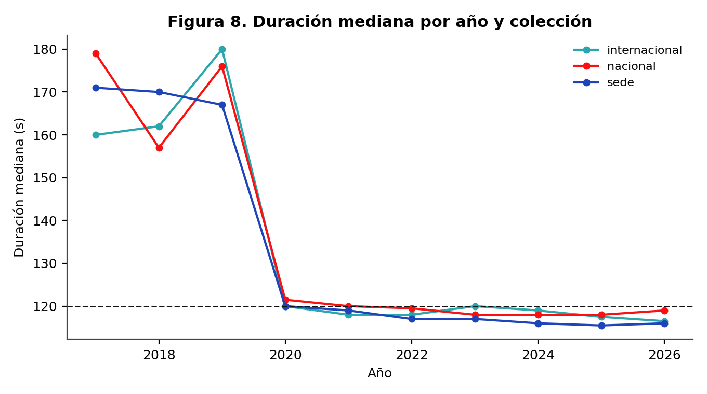
Duración mediana por año.
Lectura. La tasa de primer lugar cae de forma sostenida: 2021: 54,4 % (n=79) · 2022: 45,2 % (n=126) · 2023: 46,1 % (n=178) · 2024: 43,7 % (n=206) · 2025: 38,5 % (n=244) · 2026: 38,6 % (n=285). Hay dos explicaciones compatibles y el corpus no permite separarlas del todo:
La caída no es un problema de Nicaragua: es lo que pasa cuando un formato se masifica. Lo importante para un equipo es que el margen se estrechó: en 2021, casi la mitad de los premiados nicaragüenses eran primeros; en 2026, algo más de un tercio.
| Sede | Premios | Ediciones 2021+ | Tasa de 1.º |
|---|---|---|---|
| Uraccan Nueva Guinea | 20 | 20 | 40,0 % |
| Cid Unan-Managua | 16 | 15 | 40,0 % |
| Uni-Rusb | 16 | 12 | 33,3 % |
| Cnia 1 Unan-Managua | 14 | 14 | 42,9 % |
| Cnia 2 Unan-Managua | 14 | 13 | 46,2 % |
| Uraccan Recinto Bluefields | 14 | 13 | 46,2 % |
| Cur Uni Juigalpa | 13 | 12 | 33,3 % |
| Cur Uni Esteli | 13 | 12 | 33,3 % |
| Uni-Rupap | 13 | 12 | 33,3 % |
| Uml Masaya | 12 | 12 | 41,7 % |
| Uml-Sede León | 12 | 12 | 50,0 % |
| Uncpggl Cur Matagalpa | 12 | 12 | 50,0 % |
| Universidad Central De Nicaragua | 12 | 12 | 33,3 % |
| Uml Chinandega | 11 | 11 | 36,4 % |
| Uncpggl Sede Central | 11 | 11 | 36,4 % |
La concentración es alta: un puñado de sedes produce la mayoría de los premios. Eso no significa que sean «mejores»; significa que llevan más equipos. Y como el premio es por desafío, llevar más equipos aumenta la probabilidad de que alguno quede primero, no la de que un equipo concreto quede primero.
Los enunciados más frecuentes son: «Optimización Y Priorización De Recursos Y Esfuerzos En La Post-Emergencia» (52), «Protección Y Fomento De Polinizadores» (46), «Aprovechamiento Tetra Pak» (46), «Huertos Verticales» (44), «Sensores Al Servicio De La Comunidad» (40), «Micropresas O Microembalses» (40).
El repertorio es más pequeño que el internacional: 73 desafíos distintos frente a 37 en la colección internacional. Es coherente con un certamen que se organiza desde una red nacional con problemas compartidos.
Con los datos de metadatos: mediana de duración 117 segundos, 79,7 % dentro de 120 s, descripción mediana de 13 caracteres. Es decir: el video nicaragüense premiado es corto, respeta el formato y no describe el proyecto. La misma historia que en el resto del corpus.
58 premios en diez ediciones, entre 2 y 9 premios por año. Es el 1,1 % del registro y la única colección donde compiten países entre sí. La tasa de primer lugar es 32,8 % (IC 22,1 % – 45,6 %), más baja que en sede: aquí no compiten tres equipos por desafío, compiten delegaciones.
Nicaragua tiene 9 premios internacionales y una tasa de primeros de 55,6 %, pero con n=9 el intervalo va de 26,7 % a 81,1 %. No se puede concluir nada de esa cifra; está en el libro porque es la pregunta que todo el mundo hace.
| Año | Puesto | Equipo | Desafío | País | Duración |
|---|---|---|---|---|---|
| 2017 | 1 | GRUPO PLAY | Mejora De La Vida De Los Niños | Uruguay | 172 |
| 2017 | 1 | SMART ATTACK | Construir Un Proyecto De Calle Intelig | Argentina | 148 |
| 2018 | 1 | BAMBULIVE | Placas De Bambú Para La Construcción | Colombia | 152 |
| 2018 | 1 | LOGICREATIVE | Bandejitas Biodegradables Para Aliment | México | 174 |
| 2018 | 2 | DOMINÓS | Centros De Acopio Estratégicos Para Co | Chile | — |
| 2018 | 2 | INNOVA TEAM | Bandejitas Biodegradables Para Aliment | Argentina | 162 |
| 2018 | 2 | PATAGONIA | Bandejitas Biodegradables Para Aliment | Argentina | 125 |
| 2018 | 3 | BIO-BATCHI TESJI | Bandejitas Biodegradables Para Aliment | México | 184 |
| 2018 | 3 | SANTEINCRO | Centros De Acopio Estratégicos Para Co | El Salvador | 162 |
| 2018 | 3 | THE JOINS | Redes Eléctricas Eficientes Que Den Se | Colombia | 142 |
| 2019 | 1 | INNOTEA | Autismo E Inclusión Digital | Argentina | 181 |
| 2019 | 1 | INSIQA | S.O.S. Aquí Estoy! | Argentina | 158 |
| 2019 | 2 | LAKERS98 | S.O.S. Aquí Estoy! | Uruguay | 180 |
| 2019 | 2 | LOS ESTRAFALARIOS | Nuevas Formas De Producción Hortícola | México | 182 |
| 2019 | 3 | CO-DESIGN | Fake News | Chile | — |
| 2019 | 3 | LEXONIC | Paradas De Autobús Sustentable | Nicaragua | 177 |
| 2020 | 1 | LINE | ¿Será Posible Promover Un Uso Crecient | Argentina | — |
| 2020 | 2 | CICLOMASTERS | ¿Ayudaría Un Sistema O Dispositivo Hog | Colombia | 124 |
| 2020 | 3 | SPINTECH | ¿Será Posible Promover Un Uso Crecient | Chile | 116 |
| 2021 | 1 | INGENIARTE | Aumento En Casos De Situaciones Límite | Argentina | 118 |
| 2021 | 1 | MT SOLUCIONES CREATIVAS | Tecnologías De Eficiencia Energética A | Nicaragua | — |
| 2021 | 2 | INCLA | Identificador Práctico Y Económico Del | El Salvador | 109 |
| 2021 | 2 | PET-EGC | Agua Para Soñar | Brasil | 120 |
| 2021 | 3 | EQUIPO 2: MASCARILLAS INNOVADORAS | ¿Qué Hacer Con Tu Mascarilla, Barbijo | Chile | 108 |
| 2021 | 3 | L´CUACK RESURRECTION | ¿Qué Hacer Con Tu Mascarilla, Barbijo | Argentina | 121 |
| 2022 | 1 | IEEE-UPSCUE-1 | Aludes De Barro | Ecuador | 119 |
| 2022 | 1 | SEIKETSU | Las Mordeduras De Serpiente A La Vista | México | 119 |
| 2022 | 2 | AHUEI | Desinfectante Personal Biodegradable | Argentina | 112 |
| 2022 | 2 | KAY-KAY | Las Mordeduras De Serpiente A La Vista | Chile | 119 |
| 2022 | 3 | BIO-SOLUTION | Desinfectante Personal Biodegradable | Argentina | 105 |
| 2022 | 3 | QUILLAYSTONE | Desinfectante Personal Biodegradable | Chile | 117 |
| 2023 | 1 | GÜEGÜENSE PINOLERO | Vivienda Digna | Nicaragua | 120 |
| 2023 | 1 | MENTES CONECTADAS | Tratar De Estar Mejor | Ecuador | 119 |
| 2023 | 2 | ECORALLY EXPLORERS | Agua Segura | Colombia | 121 |
| 2023 | 2 | INGENIU´S VERSION CT | Gris A Verde | México | 122 |
| 2023 | 2 | NICARQ SINERGY | Vivienda Digna | Nicaragua | 118 |
| 2023 | 2 | VIDA E SAÚDE UNIJUÍ | Tratar De Estar Mejor | Brasil | 103 |
| 2023 | 3 | EL OCTAGONO | Tratar De Estar Mejor | Argentina | 120 |
| 2023 | 3 | HIT | Siempre En Contacto | Ecuador | 121 |
| 2023 | 3 | MEXCOL INNOVA | Alimentación De Calidad | México | 97 |
| 2024 | 1 | MEXITECH | Reducción De Desperdicios Alimentarios | México | 120 |
| 2024 | 1 | TECHRIDERS | Micropresas O Microembalses | Nicaragua | 121 |
| 2024 | 2 | CATALIZADORES DEL CAMBIO | Reducción De Desperdicios Alimentarios | Chile | 113 |
| 2024 | 2 | UNABINNOVA | Micropresas O Microembalses | Chile | 119 |
| 2024 | 3 | LOS INNOVADORES | Enlazando Generaciones | Argentina | 103 |
| 2024 | 3 | TECNOBIOQ | Micropresas O Microembalses | México | 119 |
| 2025 | 1 | MENTES VOLCANICAS | Aprovechamiento Tetra Pak | Nicaragua | 115 |
| 2025 | 1 | STEM SYNERGY | Huertos Verticales | Nicaragua | 116 |
| 2025 | 2 | IDRONIX | Sistema De Alerta Temprana | El Salvador | 119 |
| 2025 | 2 | THE LAST RESORT | Reciclado Textil | Chile | 117 |
| 2025 | 3 | AESIR | Sistema De Alerta Temprana | Colombia | 120 |
| 2025 | 3 | HOJABETA | Reciclado Textil | Chile | 118 |
| 2026 | 1 | INIVEZ | Segunda Vida De Los Motores Eléctricos | Venezuela | 103 |
| 2026 | 1 | NEXO-SOSTENIBLE | Manejo Ecológico De Residuos De Poda Y | Chile | 99 |
| 2026 | 2 | AVOCADO | Segunda Vida De Los Motores Eléctricos | Nicaragua | 121 |
| 2026 | 2 | ERROR 404: RIVALES NO ENCONTRADOS | Protección Y Fomento De Polinizadores | México | 114 |
| 2026 | 3 | DESUCHO | Protección Y Fomento De Polinizadores | Argentina | 119 |
| 2026 | 3 | IGNIS CODE | Protección Y Fomento De Polinizadores | Nicaragua | 121 |
Tasa de primer lugar por país y año.
| País | Premios | % del total |
|---|---|---|
| Argentina | 13 | 22,4 % |
| Chile | 11 | 19,0 % |
| México | 9 | 15,5 % |
| Nicaragua | 9 | 15,5 % |
| Colombia | 5 | 8,6 % |
| El Salvador | 3 | 5,2 % |
| Ecuador | 3 | 5,2 % |
| Uruguay | 2 | 3,4 % |
| Brasil | 2 | 3,4 % |
| Venezuela | 1 | 1,7 % |
Con 58 filas no se pueden hacer comparaciones finas, pero hay tres observaciones robustas:
El libro no puede dar una receta, pero sí puede decir dónde no buscar: el tema no distingue, la duración no distingue, la miniatura no distingue. Lo que queda es lo que no se midió —la claridad del problema, la contundencia del prototipo, la credibilidad del equipo— y lo que el jurado internacional, que no conoce el contexto local, necesita explícitamente: una sola idea que se entienda sin saber nada del país.
Esta sección es el historial completo del registro. Cada año tiene su ficha: volumen, sedes, países, repertorio y duración. Sirve como referencia rápida y como contexto para leer cualquier cifra de los capítulos anteriores.
151 premios · 71 sedes · 7 países · 9 desafíos
Los países con más premios fueron Argentina (57), Nicaragua (37), México (31). La sede más prolífica fue Montevideo con 5 premios, y el desafío más repetido «Construir Un Proyecto De Calle Inteligente» con 32 menciones. Duración mediana de los videos de sede: — s.
| País | Premios |
|---|---|
| Argentina | 57 |
| Nicaragua | 37 |
| México | 31 |
| El Salvador | 12 |
| Ecuador | 7 |
| Uruguay | 5 |
137 premios · 61 sedes · 5 países · 12 desafíos
Los países con más premios fueron Argentina (72), México (39), El Salvador (13). La sede más prolífica fue Universidad De Santiago De Chile con 5 premios, y el desafío más repetido «Dispositivo Para Separación De Residuos Domiciliarios En Hogares Y En Instituciones» con 23 menciones. Duración mediana de los videos de sede: — s.
| País | Premios |
|---|---|
| Argentina | 72 |
| México | 39 |
| El Salvador | 13 |
| Colombia | 8 |
| Chile | 5 |
182 premios · 84 sedes · 8 países · 9 desafíos
Los países con más premios fueron Argentina (80), México (41), Nicaragua (31). La sede más prolífica fue Facultad De Ingeniería con 5 premios, y el desafío más repetido «S.O.S. Aquí Estoy!» con 48 menciones. Duración mediana de los videos de sede: — s.
| País | Premios |
|---|---|
| Argentina | 80 |
| México | 41 |
| Nicaragua | 31 |
| El Salvador | 16 |
| Chile | 5 |
| Colombia | 4 |
112 premios · 101 sedes · 8 países · 7 desafíos
Los países con más premios fueron Argentina (31), México (29), Nicaragua (23). La sede más prolífica fue Salta Ucasal con 3 premios, y el desafío más repetido «¿Sería Posible Desarrollar Un Sistema Guía Para Débiles Visuales O Invidentes Que No Requiera Internet?» con 35 menciones. Duración mediana de los videos de sede: — s.
| País | Premios |
|---|---|
| Argentina | 31 |
| México | 29 |
| Nicaragua | 23 |
| Colombia | 12 |
| El Salvador | 8 |
| Chile | 4 |
538 premios · 126 sedes · 10 países · 10 desafíos
Los países con más premios fueron México (164), Argentina (120), Nicaragua (86). La sede más prolífica fue Resistencia - Unne Ing. con 8 premios, y el desafío más repetido «Agua Para Soñar» con 136 menciones. Duración mediana de los videos de sede: 119 s.
| País | Premios |
|---|---|
| México | 164 |
| Argentina | 120 |
| Nicaragua | 86 |
| Colombia | 49 |
| El Salvador | 36 |
| Chile | 31 |
682 premios · 148 sedes · 11 países · 8 desafíos
Los países con más premios fueron Argentina (154), México (150), Nicaragua (133). La sede más prolífica fue Jujuy Facultad De Ingeniería - Unju con 8 premios, y el desafío más repetido «Ahorro Energético En El Sector Gastronómico» con 129 menciones. Duración mediana de los videos de sede: 117 s.
| País | Premios |
|---|---|
| Argentina | 154 |
| México | 150 |
| Nicaragua | 133 |
| Colombia | 78 |
| El Salvador | 45 |
| Chile | 37 |
758 premios · 158 sedes · 10 países · 9 desafíos
Los países con más premios fueron Nicaragua (188), México (184), Argentina (153). La sede más prolífica fue Ups Guayaquil con 8 premios, y el desafío más repetido «Siempre En Contacto» con 143 menciones. Duración mediana de los videos de sede: 117 s.
| País | Premios |
|---|---|
| Nicaragua | 188 |
| México | 184 |
| Argentina | 153 |
| Colombia | 101 |
| El Salvador | 42 |
| Ecuador | 27 |
782 premios · 160 sedes · 9 países · 8 desafíos
Los países con más premios fueron Nicaragua (213), México (167), Argentina (147). La sede más prolífica fue Facet - Unt con 8 premios, y el desafío más repetido «Aguacate» con 149 menciones. Duración mediana de los videos de sede: 116 s.
| País | Premios |
|---|---|
| Nicaragua | 213 |
| México | 167 |
| Argentina | 147 |
| Colombia | 111 |
| Chile | 60 |
| El Salvador | 53 |
867 premios · 169 sedes · 9 países · 9 desafíos
Los países con más premios fueron Nicaragua (255), México (162), Argentina (152). La sede más prolífica fue Universidad Viña Del Mar con 8 premios, y el desafío más repetido «Huertos Verticales» con 147 menciones. Duración mediana de los videos de sede: 116 s.
| País | Premios |
|---|---|
| Nicaragua | 255 |
| México | 162 |
| Argentina | 152 |
| Colombia | 114 |
| Chile | 75 |
| El Salvador | 55 |
927 premios · 181 sedes · 11 países · 9 desafíos
Los países con más premios fueron Nicaragua (293), México (171), Argentina (159). La sede más prolífica fue Politecnico Santiago Mariño Extesion Maracaibo con 9 premios, y el desafío más repetido «Optimización Y Priorización De Recursos Y Esfuerzos En La Post-Emergencia» con 180 menciones. Duración mediana de los videos de sede: 116 s.
| País | Premios |
|---|---|
| Nicaragua | 293 |
| México | 171 |
| Argentina | 159 |
| Colombia | 97 |
| Chile | 82 |
| El Salvador | 56 |
| Dimensión | 2017 | 2026 | Lectura |
|---|---|---|---|
| Premios registrados | 151 | 927 | el evento se multiplicó por 6,1 |
| Sedes | 71 | 181 | la red creció más que los equipos por sede |
| Países | 7 | 11 | de un certamen nacional a uno latinoamericano |
| Desafíos | 9 | 9 | el repertorio se estabilizó, no creció al mismo ritmo |
| Duración mediana | 171 s | 116 s | el formato se normalizó en torno a los dos minutos |
| Descripción mediana | 64 car. | 15 car. | sigue sin describir el proyecto |
La conclusión del capítulo es que el certamen se profesionalizó en la forma y no en la documentación. Los videos están mejor producidos, duran lo que deben durar y se suben a tiempo; pero la ficha sigue sin decir qué hace el proyecto. Diez años después, la única forma de saber qué hizo un ganador es ver el video.
Este capítulo no afirma que estas técnicas hagan ganar: el diseño del corpus no permite probarlo. Afirma algo más modesto y más útil: son las técnicas que la evidencia externa respalda y que el corpus muestra ausentes. Cada una se puede ejecutar en 24 horas y sin presupuesto.
Leyendo 1.064 transcripciones, el guion dominante es descriptivo:
Es el orden de un informe, no el de una historia. Y tiene un problema medible: el jurado escucha la lista de características sin haber entendido todavía por qué importa. La información llega en el orden equivocado.
| Tramo | Segundos | Contenido | Error típico |
|---|---|---|---|
| Problema | 0–15 | una persona concreta, un lugar concreto, un hecho verificable | «la contaminación es un problema global» |
| Agitación | 15–35 | qué pasa si nada cambia; el costo de no actuar | saltárselo e ir directo al producto |
| Solución | 35–85 | qué es, cómo funciona, qué se ve cuando funciona | enumerar funciones en vez de mostrar el efecto |
La agitación es el tramo que casi nadie escribe. En el corpus, el problema aparece en 51,6 % de los guiones emparejados, pero la consecuencia de no resolverlo aparece mucho menos: es la parte que se puede añadir sin grabar nada nuevo, solo con voz en off sobre el material que ya existe.
| Tramo | Segundos | Contenido |
|---|---|---|
| Antes | 0–20 | cómo se resuelve hoy ese problema, con su costo |
| Después | 20–45 | cómo se resuelve con la solución, en el mismoescenario |
| Puente | 45–90 | qué hay en medio: el prototipo, el proceso, el equipo |
BAB funciona especialmente bien cuando la solución es un proceso y no un objeto, que es el caso de la mayoría de los desafíos del rally (agua, residuos, vivienda, organización comunitaria).
«Había una vez . Cada día . Hasta que un día . Por eso . Hasta que finalmente ___.»
Es una plantilla de seis frases que obliga a tener un protagonista. Aplicada a un proyecto social, el protagonista no es el equipo: es la comunidad, la escuela o la familia. El equipo aparece al final, como quien ayudó. Ese cambio de sujeto es el que activa la transportación narrativa y la víctima identificable.
Atención, interés, deseo, acción. En dos minutos, la «acción» no es una compra: es que el jurado recuerde el proyecto. Un cierre eficaz tiene tres ingredientes y ninguno es «muchas gracias»:
La venta challenger no pregunta qué necesita el cliente: le enseña algo que no sabía y reencuadra el problema. En el rally se traduce en una sola frase: «el problema no es , es ». Si el jurado acepta esa reformulación, todo lo que sigue se evalúa con tu marco.
Ejemplo de estructura: «El problema no es que falte agua; es que el agua que hay se pierde antes de llegar». Esa frase hace que la solución de riego parezca obvia en lugar de tecnológica.
Después de cada frase del guion, preguntar «¿y qué?». Si la respuesta no aparece en la siguiente frase, esa frase sobra. Aplicado al corpus, elimina sistemáticamente los saludos largos, las listas de instituciones y las descripciones técnicas que no cambian nada.
| Segundo | Tramo | Qué se ve | Qué se oye |
|---|---|---|---|
| 0–8 | Gancho | la persona o el lugar del problema | una frase que reformula el problema |
| 8–25 | Problema | el antes, con detalle concreto | el costo de que siga igual |
| 25–45 | Solución | el prototipo en uso | qué es y cómo funciona, en tres frases |
| 45–70 | Prueba | el resultado medido o el usuario | un testimonio de 8 s o una cifra del piloto |
| 70–95 | Escala | el mapa o la réplica | a dónde puede llegar y con quién |
| 95–112 | Equipo | el equipo trabajando | quiénes son y qué aportan |
| 112–120 | Cierre | la imagen más fuerte | el nombre del proyecto y una frase de futuro |
Los tramos suman 120 y dejan 8 segundos de margen. La mayoría de los guiones del corpus gasta ese margen en agradecimientos.
Antes (típico del corpus): «Buenos días, somos el equipo ___ de la universidad , estudiantes de . Nuestro proyecto se llama ___ y consiste en un sistema de ___ que permite ___ . Queremos agradecer a ___ por la oportunidad.»
Después: «En ___ , cada semana se pierden ___ litros de agua antes de llegar a la escuela. Nosotros construimos ___ , que recupera ___ . Ya funciona en ___ . Somos ___ y esto se llama ___ .»
La segunda versión usa los mismos 35 segundos y contiene: problema, magnitud, solución, prueba y nombre. No requiere grabar nada nuevo, solo reordenar y borrar.
Con lo que el corpus permite afirmar, un ganador se compone de nueve piezas. Cinco son estructurales —no dependen del equipo—, dos son de forma y dos son huecos de oportunidad.
| # | Componente | Evidencia | Peso | Se controla |
|---|---|---|---|---|
| 1 | Composición de la delegación | H01, +19,3 pp | alto (mecánico) | parcialmente |
| 2 | Desafío con pocos rivales de tu sede | artefacto 1/n | alto | no |
| 3 | Suerte de jurado | varianza no observada | alto | no |
| 4 | Nombre del proyecto en la descripción | H30, +10,1 pp | medio | sí |
| 5 | No quedarse corto de duración | H42, −6,0 pp si ≤110 s | medio | sí |
| 6 | Título informativo y específico | señal débil, +6 pp | bajo | sí |
| 7 | Pertinencia al desafío | sin evidencia (no medible) | alto | sí |
| 8 | Calidad de audio | sin evidencia interna; literatura externa | medio | sí |
| 9 | Testimonio de usuario | 0 % en el corpus | oportunidad | sí |
La lectura del scorecard es incómoda: los tres componentes de más peso no los controla el equipo. Lo que sí controla —descripción, duración, título, audio, testimonio— suma menos que la estructura del concurso. Eso no significa que no valga la pena; significa que hay que dejar de creer que el video decide el certamen.
| Esfuerzo | Acción | Evidencia | Riesgo |
|---|---|---|---|
| 10 minutos | escribir la descripción con el nombre del proyecto | H30 | nulo |
| 20 minutos | reordenar el guion para poner el problema en el segundo 5 | H32 | nulo |
| 1 hora | regrabar el audio con micrófono y sin música | literatura | nulo |
| 2 horas | grabar un testimonio de 8 segundos | 0 % de uso | bajo |
| 3 horas | reescribir el guion con PAS y cerrar con imagen | H42 | bajo |
| 1 día | rediseñar la solución | sin datos | alto |
Las cinco primeras son las que este libro recomienda. La sexta es la única que de verdad podría cambiar el resultado, y es la única sobre la que el corpus no dice nada.
Los datos desmienten cinco arquetipos populares:
| Estado | Hipótesis |
|---|---|
| A favor | 3 |
| En contra | 0 |
| Artefacto | 2 |
| Señal débil | 8 |
| Sin evidencia | 25 |
| No concluyente | 3 |
| Descriptiva | 1 |
De 42 creencias, tres sobreviven. Es un resultado magro y honesto: el rally no se gana con trucos de video. Se gana —en la parte que se puede medir— con estructura, y en la parte que no se puede medir, con una solución que se entienda en dos minutos.
Las dos preguntas que este banco recibe siempre son «¿cuánto se gana?» y «¿qué hago para ganar?». El capítulo 20 responde la primera hasta donde el registro lo permite, y dice con precisión dónde se acaba la evidencia. La respuesta corta: la probabilidad absoluta está acotada, no medida, y esa cota es más informativa de lo que parece.
La primera impresión es que SIRLI solo publica ganadores, y que sin perdedores no hay probabilidad. Pero el registro publica algo más: publica el podio completo de cada sede, y lo publica de forma incompleta cuando la sede es pequeña. Ahí está la información.
La estructura del podio no es por desafío, como se supone a primera vista. Es por sede y por categoría: cada sede entrega como máximo un primero, un segundo y un tercero por categoría, y esos tres premios suelen recaer en equipos que resolvieron desafíos distintos.
| Patrón (1.º · 2.º · 3.º) | Grupos | % del total |
|---|---|---|
| 1 · 1 · 1 | 997 | 57,2 % |
| 1 · 1 · 0 | 456 | 26,1 % |
| 1 · 0 · 0 | 268 | 15,4 % |
| 0 · 1 · 0 | 15 | 0,9 % |
De 1.744 grupos sede-categoría desde 2021, 997 tienen el podio completo. Los tres premios van a tres desafíos distintos en 52,7 % de los casos completos. Es decir: dentro de tu sede, compites contra todos los equipos de tu categoría, aunque cada uno haya elegido un desafío distinto.
Cuando una sede tiene menos de tres equipos en una categoría, no puede premiar a tres. Y el registro lo delata:
| Premios publicados en el grupo | Equipos que tuvo | Grupos |
|---|---|---|
| 1 | exactamente 1 | 288 |
| 2 | exactamente 2 | 459 |
| 3 | 3 o más | 997 |
Los dos primeros casos son exactos. El tercero está censurado: sabemos que hubo al menos tres equipos, pero no cuántos. Esa es la única pieza que falta, y no se puede recuperar desde el registro público.
Con una regla de podio de un premio por puesto y categoría, la probabilidad de ser primero es exactamente el inverso del número de rivales de tu categoría. Todo depende de cuántos equipos había en el grupo censurado:
| Equipos en un grupo completo | Equipos totales estimados | P(1.º) | P(podio) |
|---|---|---|---|
| 3 | 4.197 | 41,5 % | 100,0 % |
| 5 | 6.191 | 28,2 % | 67,8 % |
| 8 | 9.182 | 19,0 % | 45,7 % |
| 12 | 13.170 | 13,2 % | 31,9 % |
| 20 | 21.146 | 8,2 % | 19,9 % |
| 30 | 31.116 | 5,6 % | 13,5 % |
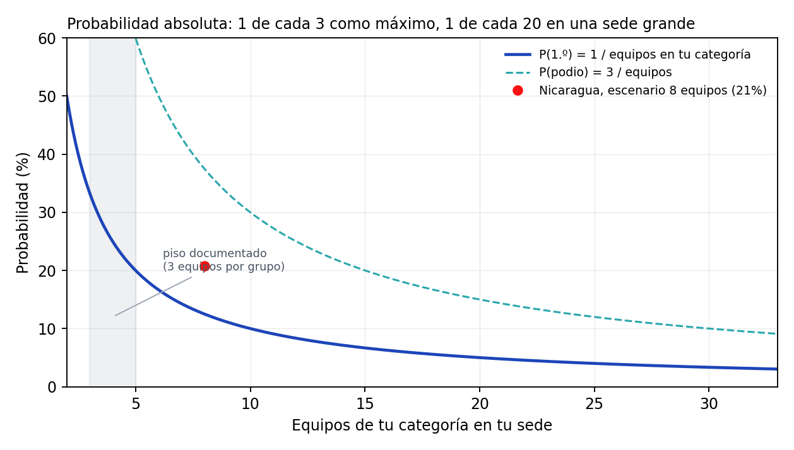
La probabilidad cae como 1/T. La zona sombreada es el único tramo documentado sin supuestos: los grupos donde el registro dice exactamente cuántos equipos hubo..
La lectura: si asumimos que una sede mediana pone unos ocho equipos por categoría, la probabilidad base de primer lugar es 19,0 % y la de pisar el podio 45,7 %. Si la sede es grande, con veinte equipos por categoría, bajar a 8,2 %. El máximo posible —tres equipos en la categoría— es 41,5 %, y solo se alcanza en sedes minúsculas.
En Nicaragua la censura es casi idéntica, lo que sugiere sedes de tamaño parecido al resto: 43,0 % con tres equipos y 20,8 % con ocho.
La forma del podio cambia más que la probabilidad. Un grupo con un solo premio es señal de sede chica: esa proporción sirve para comparar tamaños de sede entre años.
| Año | Grupos | Grupos con 1 solo premio | P(1.º) con 8 equipos |
|---|---|---|---|
| 2021 | 218 | 27,1 % | 10,3 % |
| 2022 | 268 | 20,5 % | 10,5 % |
| 2023 | 302 | 17,9 % | 10,2 % |
| 2024 | 304 | 17,4 % | 10,9 % |
| 2025 | 316 | 10,4 % | 11,3 % |
| 2026 | 336 | 10,1 % | 11,4 % |
El mismo cálculo, aplicado país por país. La columna «grupos con 1 solo premio» es la huella del tamaño de sede: un valor alto indica muchas categorías con un único equipo, donde el primer lugar se obtiene por existencia y no por competencia.
| País | Grupos | Premios | P(1.º) techo (3) | P(1.º) media (8) | P(1.º) sede grande (15) | Grupos con 1 solo premio | Equipos/grupo |
|---|---|---|---|---|---|---|---|
| Nicaragua | 483 | 1.124 | 43,0 % | 20,8 % | 12,1 % | 17,0 % | 4,8 |
| Argentina | 353 | 842 | 41,9 % | 19,9 % | 11,4 % | 14,4 % | 5,0 |
| México | 353 | 956 | 36,9 % | 14,9 % | 8,1 % | 9,1 % | 6,7 |
| Colombia | 225 | 511 | 44,0 % | 21,3 % | 12,4 % | 21,3 % | 4,7 |
| Chile | 103 | 247 | 41,7 % | 18,8 % | 10,7 % | 18,4 % | 5,3 |
| El Salvador | 98 | 249 | 39,4 % | 17,1 % | 9,5 % | 12,2 % | 5,9 |
| Costa Rica | 36 | 80 | 45,0 % | 21,8 % | 12,7 % | 25,0 % | 4,6 |
| Bolivia | 30 | 72 | 41,7 % | 17,4 % | 9,6 % | 26,7 % | 5,7 |
Las tres columnas de probabilidad son el mismo dato con tres supuestos distintos sobre cuántos equipos tiene una categoría en la sede: el techo (tres equipos, imposible de superar), el escenario medio (ocho) y el escenario de sede grande (quince). Ninguna es «la» probabilidad real: son la banda dentro de la cual cae, y la banda es lo más honesto que el registro permite.
La lectura por país es la siguiente. Nicaragua tiene 483 grupos documentados en 2021–2026, más que cualquier otro país, con una probabilidad media de 20,8 %. Ese volumen es una ventaja de información: hay más historia nicaragüense en este banco que de cualquier otra delegación, y por eso el capítulo 15 puede bajar al detalle de sede. Argentina y México comptien con un número de grupos parecido pero con menos sedes pequeñas, lo que se ve en la última columna: si el porcentaje de grupos con un solo premio es bajo, la competencia real ocurre en categorías pobladas y la probabilidad efectiva se acerca al escenario medio.
El detalle que el promedio nacional esconde. Las 182 sedes nicaragüenses con al menos dos grupos documentados, ordenadas por número de grupos, concentran 458 de los 483 grupos nicaragüenses documentados desde 2021 y 1.063 premios. El resto —25 grupos— está en sedes que solo aparecen una vez, casi siempre categorías con un único equipo:
| Sede | Grupos | Premios | Ediciones | P(1.º) techo | P(1.º) media | P(1.º) grande | Grupos con 1 solo premio |
|---|---|---|---|---|---|---|---|
| Uraccan Nueva Guinea | 8 | 20 | 4 | 40,0 % | 17,8 % | 10,0 % | 12,5 % |
| Cid Unan-Managua | 6 | 15 | 3 | 40,0 % | 20,0 % | 11,8 % | 0,0 % |
| Cnia 1 Unan-Managua | 6 | 14 | 3 | 42,9 % | 25,0 % | 15,8 % | 0,0 % |
| Cnia 2 Unan-Managua | 6 | 13 | 3 | 46,2 % | 21,4 % | 12,2 % | 33,3 % |
| Uml-Sede León | 6 | 12 | 3 | 50,0 % | 50,0 % | 50,0 % | 0,0 % |
| Uncpggl Cur Matagalpa | 6 | 12 | 3 | 50,0 % | 27,3 % | 16,7 % | 33,3 % |
| Universidad Martín Lutero Sede San Carlos | 6 | 11 | 3 | 54,5 % | 37,5 % | 26,1 % | 33,3 % |
| Uraccan Recinto Bluefields | 6 | 13 | 3 | 46,2 % | 26,1 % | 16,2 % | 16,7 % |
| Uml Masaya | 5 | 12 | 3 | 41,7 % | 18,5 % | 10,4 % | 20,0 % |
| Auditorio 21 Rurd Unan-Managua | 4 | 10 | 2 | 40,0 % | 20,0 % | 11,8 % | 0,0 % |
| Bicu Cur El Rama | 4 | 8 | 2 | 50,0 % | 50,0 % | 50,0 % | 0,0 % |
| Cur Uni Esteli | 4 | 12 | 2 | 33,3 % | 12,5 % | 6,7 % | 0,0 % |
| Cur Uni Juigalpa | 4 | 12 | 2 | 33,3 % | 12,5 % | 6,7 % | 0,0 % |
| Farem - Chontales/ Unan - Managua | 4 | 9 | 2 | 44,4 % | 21,1 % | 12,1 % | 25,0 % |
| Uam | 4 | 10 | 2 | 40,0 % | 20,0 % | 11,8 % | 0,0 % |
| Ucc-Managua | 4 | 9 | 2 | 44,4 % | 28,6 % | 19,1 % | 0,0 % |
| Uml Chinandega | 4 | 11 | 2 | 36,4 % | 15,4 % | 8,5 % | 0,0 % |
| Uml Sede El Rama | 4 | 8 | 2 | 50,0 % | 30,8 % | 20,0 % | 25,0 % |
| Uml Sede Jalapa | 4 | 6 | 2 | 66,7 % | 66,7 % | 66,7 % | 50,0 % |
| Uncpggl Cur Juigalpa | 4 | 10 | 2 | 40,0 % | 20,0 % | 11,8 % | 0,0 % |
| Uncpggl Sede Central | 4 | 11 | 2 | 36,4 % | 15,4 % | 8,5 % | 0,0 % |
| Uncsm - Neysi Ríos 1. | 4 | 10 | 2 | 40,0 % | 16,0 % | 8,7 % | 25,0 % |
| Uni-Rupap | 4 | 12 | 2 | 33,3 % | 12,5 % | 6,7 % | 0,0 % |
| Uni-Rusb | 4 | 12 | 2 | 33,3 % | 12,5 % | 6,7 % | 0,0 % |
El listado completo de las 182 sedes está en el apéndice L. Tres cosas que muestra la tabla y que no se ven en el agregado:
Hay una cantidad que el registro mide entero, sin censura ni denominador estimado: la probabilidad de ser primero, condicionada a haber sido premiado. Desde 2021 es 41,1 %, con intervalo de confianza de 39,6 % a 42,6 %.
Esa cifra encierra la lección más útil del libro. Llegar al podio y ganar no son el mismo problema:
Dicho de otro modo: si tu sede tiene ocho equipos por categoría, la probabilidad de primer lugar es 19,0 %; de esos ocho, tres son premiados, y entre esos tres el primero se lleva 41,1 % de las veces. No hay ninguna palanca conocida que multiplique esa cifra por tres.
Tres números, todos disponibles el día del evento:
La conclusión práctica es incómoda pero honesta: la decisión de mayor impacto no es cómo grabas, sino dónde compites. Elegir una sede con menos equipos por categoría multiplica tu probabilidad base de forma directa; mejorar el video la ajusta en los márgenes. Cualquier promesa mayor que eso no está respaldada por estos datos.
Todo el material es público: páginas de ganadores, videos de YouTube y sus metadatos. El banco no contiene datos personales más allá de nombres de equipos publicados por el propio certamen, y no incluye transcripciones completas de terceros en el repositorio: se guardan fragmentos y derivados (conteos, marcadores, rasgos).
Si este análisis se publica, conviene citar la fuente primaria y aclarar que las tasas son «entre premiados», no probabilidades absolutas. La diferencia no es un tecnicismo: es la diferencia entre un análisis y una campaña de marketing.
Todo el libro se regenera con tres comandos:
python scripts/sirli_dataset.py
python scripts/sirli_sistemico.py
python scripts/sirli_libro.pyY el banco completo, desde cero, con diecisiete etapas documentadas
en research/sirli/README.md. No hay cifras escritas a mano:
si un número cambia en los datos, cambia en el libro.
| Vacío | Cómo se cierra | Costo estimado |
|---|---|---|
| No hay perdedores | conseguir la lista de participantes de una sede | gestión con el organizador |
| No hay rúbrica | pedirla al certamen | una solicitud |
| Texto incompleto | transcribir los 3.805 videos restantes | ≈ 8 h de CPU |
| Imagen semántica | visión por modelo grande sobre 300 fotogramas | costo de API |
| Audio con música separada | separación de fuentes (Demucs) | ≈ 2 h de CPU |
| Validación humana | ver 30 videos y anotar a mano | 3 h de una persona |
El corpus responde tres preguntas con solidez: cuánto creció el certamen, qué se premia (un podio por sede y categoría, y sedes que premian menos cuando tienen menos equipos) y qué no distingue a un ganador (casi todo lo que se puede medir del video).
No responde la pregunta que todos hacen —«¿cómo hago para ganar?»— con una receta. Responde con una dirección: menos competencia interna, descripción útil, guion ordenado, audio limpio y un testimonio que nadie más tiene. Y con una advertencia: la mayor parte de la varianza está en la estructura del concurso y en el jurado, no en el video.
Eso es lo que los datos permiten decir. Ni más, ni menos.
Tabla completa, ordenada por frecuencia. «Ediciones 2021+» es el denominador usado para la tasa de primer lugar en el corte válido.
| Desafío | Premios | Ediciones 2021+ | Tasa de 1.º | Años |
|---|---|---|---|---|
| Optimización Y Priorización De Recursos Y Esfuerzos En La Post-E | 180 | 169 | 39,6 % | 2026 |
| Aguacate | 149 | 138 | 38,4 % | 2024 |
| Huertos Verticales | 147 | 135 | 37,8 % | 2025 |
| Sensores Al Servicio De La Comunidad | 146 | 135 | 45,2 % | 2026 |
| Siempre En Contacto | 143 | 130 | 44,6 % | 2023 |
| Revalorización Residuos | 143 | 133 | 43,6 % | 2023 |
| Micropresas O Microembalses | 136 | 122 | 45,9 % | 2024 |
| Agua Para Soñar | 136 | 118 | 50,8 % | 2021 |
| Manejo Ecológico De Residuos De Poda Y Biomasa Vegetal Urbana | 131 | 122 | 33,6 % | 2026 |
| Sistema De Alerta Temprana | 130 | 123 | 35,0 % | 2025 |
| Ahorro Energético En El Sector Gastronómico | 129 | 119 | 36,1 % | 2022 |
| Aprovechamiento Tetra Pak | 128 | 118 | 41,5 % | 2025 |
| Tratar De Estar Mejor | 127 | 113 | 44,2 % | 2023 |
| Aludes De Barro | 127 | 109 | 48,6 % | 2022 |
| Evacuación | 120 | 115 | 35,7 % | 2024 |
| Reutilización De Aceite Doméstico | 119 | 114 | 34,2 % | 2026 |
| Reciclado Textil | 109 | 95 | 45,3 % | 2025 |
| Inclusión Laboral De Personas Del Espectro Autista | 109 | 102 | 50,0 % | 2022 |
| Protección Y Fomento De Polinizadores | 105 | 93 | 39,8 % | 2026 |
| Las Mordeduras De Serpiente A La Vista | 105 | 92 | 55,4 % | 2022 |
| Reducción De Desperdicios Alimentarios | 104 | 96 | 42,7 % | 2024 |
| Monitoreo Inteligente E Infraestructura Verde En Reservorios Plu | 93 | 89 | 43,8 % | 2026 |
| Transformación De Residuos De Una Cafetería | 81 | 78 | 24,4 % | 2022 |
| Salud Móvil Para Mujeres En Zonas Rurales | 78 | 73 | 46,6 % | 2025 |
| Logística Ante Desastres Naturales | 78 | 72 | 38,9 % | 2025 |
| Enlazando Generaciones | 77 | 74 | 48,6 % | 2024 |
| Gris A Verde | 77 | 66 | 47,0 % | 2023 |
| Sostenibilidad Ambiental Orientada Al Aprovechamiento De Residuo | 77 | 64 | 56,2 % | 2021 |
| Empaques Contaminantes | 76 | 69 | 42,0 % | 2024 |
| Parquímetro Desatendido | 76 | 72 | 43,1 % | 2024 |
| Desinfectante Personal Biodegradable | 76 | 64 | 32,8 % | 2022 |
| Apoyo Emocional Para Niños Migrantes | 75 | 73 | 31,5 % | 2025 |
| Agua Segura | 75 | 71 | 32,4 % | 2023 |
| Fugas De Agua | 69 | 68 | 36,8 % | 2025 |
| Identificador Práctico Y Económico Del Aerosol De Co2 En Espacio | 69 | 63 | 44,4 % | 2021 |
| Segunda Vida De Los Motores Eléctricos Domésticos | 67 | 59 | 35,6 % | 2026 |
| Vivienda Digna | 61 | 54 | 46,3 % | 2023 |
| Aumento En Casos De Situaciones Límite Bajo Encierro | 55 | 51 | 43,1 % | 2021 |
| Tecnologías De Eficiencia Energética Aplicada A Viviendas | 55 | 47 | 44,7 % | 2021 |
| Residuos En Playas | 53 | 51 | 25,5 % | 2025 |
| Desechos De Basura Verde | 52 | 50 | 34,0 % | 2026 |
| Crowdsensing | 51 | 49 | 36,7 % | 2023 |
| ¿Qué Hacer Con Tu Mascarilla, Barbijo O Cubrebocas? | 51 | 44 | 43,2 % | 2021 |
| S.O.S. Aquí Estoy! | 48 | 0 | — | 2019 |
| Escombros | 44 | 41 | 31,7 % | 2024 |
| Alimentación De Calidad | 43 | 37 | 45,9 % | 2023 |
| La Circularidad Y Recuperación De Envases Descartables | 39 | 37 | 35,1 % | 2021 |
| Movilidad Sustentable | 38 | 36 | 38,9 % | 2023 |
| Neumáticos Amigables Con El Medioambiente | 37 | 35 | 48,6 % | 2022 |
| ¿Sería Posible Desarrollar Un Sistema Guía Para Débiles Visuales | 35 | 0 | — | 2020 |
| Remoción Y Extracción De Barro En Viviendas Anegadas | 34 | 33 | 33,3 % | 2026 |
| Construir Un Proyecto De Calle Inteligente | 32 | 0 | — | 2017 |
| Generación De Energía Alterna A Partir De Actividades Cotidianas | 30 | 0 | — | 2017 |
| Nuevas Formas De Producción Hortícola | 29 | 0 | — | 2019 |
| Construcción De Espacios Públicos Desde La Perspectiva De Género | 28 | 27 | 25,9 % | 2021 |
| Paradas De Autobús Sustentable | 27 | 0 | — | 2019 |
| ¿Ayudaría Un Sistema O Dispositivo Hogareño A Evitar Que El Acei | 26 | 0 | — | 2020 |
| Autismo E Inclusión Digital | 23 | 0 | — | 2019 |
| Dispositivo Para Separación De Residuos Domiciliarios En Hogares | 23 | 0 | — | 2018 |
| Estructuras De Invernadero Resistentes | 23 | 0 | — | 2017 |
| Sistema Inteligente Para Detectar Ausencia De Elementos De Segur | 22 | 0 | — | 2019 |
| Otra Vuelta De Tuerca Con Las Pilas | 21 | 20 | 40,0 % | 2021 |
| Bandejitas Biodegradables Para Alimentos | 21 | 0 | — | 2018 |
| Sistema Generación Energía Sostenible (Off-Grid) | 20 | 0 | — | 2019 |
| Eficiencia Energética En Edificios Públicos | 20 | 0 | — | 2018 |
| ¿Habrá Alguna Forma De Aprovechar La Experiencia Y A Su Vez Miti | 19 | 0 | — | 2020 |
| Trazas Ferrovías Desafectadas | 18 | 17 | 47,1 % | 2022 |
| ¿Será Posible Promover Un Uso Creciente De La Bicicleta Como Med | 18 | 0 | — | 2020 |
| Centros De Acopio Estratégicos Para Comunidades Marginadas, En S | 17 | 0 | — | 2018 |
| Mejora De La Vida De Los Niños | 16 | 0 | — | 2017 |
| Mobiliario Innovador Para Clases Y Trabajo En Grupos | 14 | 0 | — | 2018 |
| Tutorías Estudiantiles Virtuales | 13 | 0 | — | 2017 |
| Adultos Mayores | 12 | 0 | — | 2017 |
| Generar Estrategias O Herramientas, De Base Científico-Tecnológi | 11 | 0 | — | 2018 |
| Aprovechamiento Energético De Residuos Orgánicos De Limpiezas De | 10 | 0 | — | 2017 |
| ¿Cómo Podemos Hacer Para Que Los Conductores Eviten Distraerse C | 9 | 0 | — | 2020 |
| Redes Eléctricas Eficientes Que Den Servicio Al Mayor Número De | 8 | 0 | — | 2018 |
| Agregando Valor A Los Residuos Pesqueros | 8 | 0 | — | 2018 |
| Reutilización De Materiales Plásticos Termoestables | 8 | 0 | — | 2017 |
| Sistema De Reciclado De Residuos Patológicos De Casas De Salud P | 7 | 6 | 66,7 % | 2021 |
| Placas De Bambú Para La Construcción | 7 | 0 | — | 2018 |
| Aprovechamiento De Basura Electrónica | 7 | 0 | — | 2017 |
| Eficiencia Energética En El Entorno Laboral | 6 | 0 | — | 2019 |
| “Alas Para Montar”… ¿Pero Por Qué “Alas Para Montar”? | 4 | 0 | — | 2020 |
| Reducción De Conexiones Clandestinas En Las Redes De Distribució | 4 | 0 | — | 2019 |
| ¿Que Solución Le Proponemos A Los Municipios Para Utilizar Los R | 4 | 0 | — | 2018 |
| Fake News | 3 | 0 | — | 2019 |
| Producción De Flores Y Abono En Espacios Reducidos Urbanos | 2 | 0 | — | 2018 |
| Daño Ambiental Provocado Por El Desecho Y Mal Manejo De Focos Fl | 2 | 0 | — | 2018 |
| ¿Se Podrá Incorporar Las Actividades Físicas Saludables A Las Ta | 1 | 0 | — | 2020 |
| Sede | Premios | Ediciones 2021+ | Tasa de 1.º | País |
|---|---|---|---|---|
| Tlalnepantla | 45 | 35 | 34,3 % | México |
| Universidad Francisco Gavidia (Ufg) | 44 | 36 | 33,3 % | El Salvador |
| Innova Guanajuato | 39 | 36 | 33,3 % | México |
| Instituto Tecnológico De Aguascalientes | 37 | 34 | 35,3 % | México |
| Universidad Politécnica De Querétaro | 37 | 36 | 33,3 % | México |
| Universidad Politécnica De Pachuca | 36 | 29 | 34,5 % | México |
| Universidad Católica De El Salvador | 33 | 30 | 33,3 % | El Salvador |
| Universidad Gerardo Barrios San Miguel | 32 | 28 | 39,3 % | El Salvador |
| Hurlingham - Unh | 32 | 29 | 34,5 % | Argentina |
| Universidad Autónoma De Nuevo León | 30 | 24 | 33,3 % | México |
| Uis | 28 | 22 | 40,9 % | Colombia |
| Facultad De Ingenieria Mexicali Uabc | 27 | 27 | 33,3 % | México |
| Instituto Tecnológico Superior De Tlaxco | 27 | 18 | 33,3 % | México |
| Universidad Viña Del Mar | 26 | 22 | 36,4 % | Chile |
| Ibero Puebla | 26 | 24 | 33,3 % | México |
| Instituto Tecnologico Superior Progreso | 25 | 24 | 33,3 % | México |
| Facultad De Estudios Superiores Aragón (Unam) | 25 | 24 | 33,3 % | México |
| Universidad Militar Nueva Granada | 24 | 21 | 38,1 % | Colombia |
| Sedeobera | 24 | 23 | 43,5 % | Argentina |
| Universidad Católica De Santiago Del Estero | 24 | 22 | 36,4 % | Argentina |
| Universidad Nacional De Moreno | 24 | 23 | 43,5 % | Argentina |
| Ues-Universidad De El Salvador | 23 | 17 | 35,3 % | El Salvador |
| Unad Zcbc | 23 | 22 | 36,4 % | Colombia |
| Uns - Bahía Blanca | 22 | 18 | 33,3 % | Argentina |
| Universidad De Valparaíso | 21 | 17 | 35,3 % | Chile |
| Universidad Nacional | 21 | 16 | 37,5 % | Costa Rica |
| Instituto Tecnológico Superior De Huauchinango | 21 | 13 | 30,8 % | México |
| Ucasal | 21 | 21 | 47,6 % | Argentina |
| Universidad Tecnológica De El Salvador | 21 | 16 | 37,5 % | El Salvador |
| Instituto Tecnológico Superior De Irapuato | 21 | 20 | 45,0 % | México |
| Facet - Unt | 20 | 18 | 33,3 % | Argentina |
| Trelew - Puerto Madryn | 20 | 20 | 40,0 % | Argentina |
| Unad Zsur | 20 | 19 | 42,1 % | Colombia |
| Uraccan Nueva Guinea | 20 | 20 | 40,0 % | Nicaragua |
| Universidad Salvadoreña Alberto Masferrer | 19 | 12 | 41,7 % | El Salvador |
| Corporación Universitaria Americana | 19 | 17 | 35,3 % | Colombia |
| Unad Zao | 19 | 19 | 42,1 % | Colombia |
| Universidad Católica De La Santísima Concepción | 18 | 17 | 35,3 % | Chile |
| Unne-Ing.Rcia | 18 | 18 | 33,3 % | Argentina |
| Corporación Universitaria Reformada | 18 | 18 | 44,4 % | Colombia |
| Universidad Antonio Nariño | 18 | 18 | 50,0 % | Colombia |
| Universidad Autónoma De Occidente | 18 | 17 | 35,3 % | Colombia |
| Universidad Gerardo Barrios Usulután | 18 | 13 | 46,2 % | El Salvador |
| Unad Zona Caribe | 17 | 17 | 35,3 % | Colombia |
| Instituto Tecnológico De Colima/Tecnm | 17 | 16 | 37,5 % | México |
| Universidad De Santiago De Chile | 16 | 8 | 50,0 % | Chile |
| Cid Unan-Managua | 16 | 15 | 40,0 % | Nicaragua |
| Universidad Gabriela Mistral | 16 | 16 | 37,5 % | Chile |
| Uni-Rusb | 16 | 12 | 33,3 % | Nicaragua |
| Embate | 16 | 12 | 33,3 % | Bolivia |
| Catamarca | 16 | 12 | 50,0 % | Argentina |
| Norte Del Estado De México (Jocotitlán) | 16 | 6 | 33,3 % | México |
| Utnfrre/Intecnor | 15 | 12 | 33,3 % | Argentina |
| Unad Zcboy | 15 | 15 | 53,3 % | Colombia |
| Ues- Universidad De El Salvador | 15 | 12 | 33,3 % | El Salvador |
| Instituto Tecnológico Superior Del Occidente Del Est | 14 | 12 | 33,3 % | México |
| Unlam San Justo | 14 | 13 | 53,8 % | Argentina |
| Facultad De Ingeniería Ubb | 14 | 12 | 33,3 % | Chile |
| Santa Fe | 14 | 9 | 44,4 % | Argentina |
| Upemor | 14 | 12 | 50,0 % | México |
Las 829 sedes restantes aparecen en winners.csv.
Solo se muestran celdas con al menos 15 ediciones. El punto medio (·) indica muestra insuficiente.
| País | 2021 | 2022 | 2023 | 2024 | 2025 | 2026 |
|---|---|---|---|---|---|---|
| Nicaragua | 54 % | 45 % | 46 % | 44 % | 39 % | 39 % |
| México | 38 % | 37 % | 38 % | 36 % | 35 % | 36 % |
| Argentina | 48 % | 42 % | 42 % | 41 % | 37 % | 37 % |
| Colombia | 48 % | 47 % | 45 % | 44 % | 42 % | 37 % |
| El Salvador | 45 % | 38 % | 36 % | 39 % | 40 % | 38 % |
| Chile | 50 % | 48 % | · | 42 % | 39 % | 39 % |
| Costa Rica | · | 45 % | · | · | 33 % | · |
| Bolivia | · | · | 50 % | · | 42 % | · |
| Ecuador | · | 42 % | 42 % | · | · | · |
| Brasil | · | · | · | · | · | · |
| Campo | Significado |
|---|---|
| n1 / n0 | observaciones con y sin la característica |
| Δ | diferencia de tasa de primer lugar (sí − no) |
| q | p-valor corregido por Benjamini–Hochberg |
| IC | intervalo de Wilson al 95 % para la tasa del grupo «sí» |
| ID | Familia | Prueba | n1 | n0 | Δ | q | IC 95 % | Estado |
|---|---|---|---|---|---|---|---|---|
| H01 | A. Evento | cuartil inferior de
sede_size vs resto (se |
1.300 | 2.881 | +19,3 pp | < 0,001 | 51,7 % – 57,1 % | a favor |
| H02 | A. Evento | cuartil inferior de
challenge_size vs rest |
1.088 | 3.093 | -1,1 pp | 0,758 | 37,4 % – 43,2 % | sin evidencia |
| H03 | A. Evento | cuartil superior de
challenge_size vs rest |
1.207 | 2.974 | -0,9 pp | 0,758 | 37,7 % – 43,2 % | sin evidencia |
| H04 | A. Evento | ≥3 premiados del mismo desafío en la sede vs | 338 | 3.843 | -8,6 pp | 0,013 | 28,3 % – 38,3 % | artefacto aritmético |
| H05 | A. Evento | categoría Innovación vs Impacto Social | 2.073 | 2.108 | +0,6 pp | 0,806 | 39,3 % – 43,5 % | sin evidencia |
| H06 | A. Evento | sede vs nacional+internacional (2021+) | 4.181 | 356 | +4,3 pp | 0,289 | 39,6 % – 42,6 % | sin evidencia |
| H07 | A. Evento | equipos nicaragüenses vs resto en internacio | 8 | 31 | — | — | 30,6 % – 86,3 % | no concluyente |
| H08 | A. Evento | equipos con premios en años anteriores vs de | 315 | 3.866 | -2,2 pp | 0,737 | 33,8 % – 44,5 % | sin evidencia |
| H09 | A. Evento | equipos nicaragüenses vs extranjeros en sede | 1.118 | 3.063 | +2,1 pp | 0,490 | 39,7 % – 45,5 % | sin evidencia |
| H10 | A. Evento | Spearman entre
challenge_size y won |
1.207 | 1.523 | +0,2 pp | 0,806 | 37,7 % – 43,2 % | sin evidencia |
| H11 | A. Evento | Spearman entre sede_size y
won |
2.124 | 2.057 | -15,6 pp | < 0,001 | 31,4 % – 35,4 % | artefacto aritmético |
| H12 | A. Evento | índice de Gini de primeros lugares por equip | 3.879 | 0 | — | — | 42,7 % – 45,8 % | descriptiva |
| H13 | A. Evento | chi-cuadrado de uniformidad 1.º/2.º/3.º | 337 | 0 | — | 0,758 | sin evidencia | |
| H14 | B. Video | duración > 120 s vs ≤ 120 s (sede 2021+) | 634 | 3.527 | +1,3 pp | 0,758 | 38,3 % – 46,0 % | sin evidencia |
| H15 | B. Video | <60 s vs resto | 57 | 4.104 | -6,0 pp | 0,694 | 24,0 % – 48,1 % | sin evidencia |
| H42 | B. Video | ≤110 s vs resto (sede 2021+) | 1.290 | 2.871 | -6,0 pp | 0,003 | 34,2 % – 39,5 % | a favor |
| H16 | B. Video | Spearman duration_s ↔︎
won |
1.208 | 1.290 | +7,1 pp | 0,006 | 41,2 % – 46,8 % | señal débil |
| H17 | B. Video | Spearman duration_ratio ↔︎
won |
1.208 | 1.290 | +7,1 pp | 0,006 | 41,2 % – 46,8 % | señal débil |
| H18 | B. Video | Spearman title_words ↔︎
won |
1.105 | 1.657 | +6,0 pp | 0,003 | 41,9 % – 47,7 % | señal débil |
| H19 | B. Video | Spearman title_len ↔︎
won |
1.358 | 1.413 | +4,4 pp | 0,021 | 40,8 % – 46,1 % | señal débil |
| H20 | B. Video | título con #, | , –, — o ’ - ’ vs título plan | 1.793 | 2.368 | +3,9 pp | 0,033 | 40,9 % – 45,5 % |
| H21 | B. Video | título todo en mayúsculas vs mixto | 1.031 | 3.130 | -2,8 pp | 0,289 | 36,0 % – 41,9 % | sin evidencia |
| H22 | B. Video | título con dígito vs sin dígito | 2.528 | 1.633 | +3,6 pp | 0,058 | 40,5 % – 44,3 % | sin evidencia |
| H23 | B. Video | videos con pistas de subtítulos vs sin ellas | 3.616 | 545 | +2,6 pp | 0,512 | 39,7 % – 42,9 % | sin evidencia |
| H24 | C. Descripción | >80 caracteres vs resto | 1.192 | 2.989 | +4,6 pp | 0,021 | 41,6 % – 47,2 % | señal débil |
| H25 | C. Descripción | ≤20 caracteres vs resto | 2.191 | 1.990 | -4,4 pp | 0,018 | 37,0 % – 41,0 % | señal débil (negativa) |
| H26 | C. Descripción | descripción con URL vs sin URL | 89 | 4.092 | +1,7 pp | 0,908 | 32,9 % – 53,1 % | sin evidencia |
| H27 | C. Descripción | descripción con créditos/música vs resto | 70 | 4.111 | +0,4 pp | 1,000 | 30,6 % – 53,1 % | sin evidencia |
| H28 | C. Descripción | descripción con marcadores de solución vs re | 1.192 | 2.989 | +4,6 pp | 0,021 | 41,6 % – 47,2 % | señal débil |
| H29 | C. Descripción | título con ≥2 palabras del enunciado del des | 716 | 3.465 | -2,9 pp | 0,354 | 35,2 % – 42,3 % | sin evidencia |
| H30 | C. Descripción | nombre del proyecto presente en descripción | 227 | 3.954 | +10,1 pp | 0,015 | 44,2 % – 57,1 % | a favor |
| H31 | D. Texto | presencia de t_solucion en
la transcripció |
62 | 26 | -8,7 pp | 0,758 | 33,4 % – 57,5 % | sin evidencia |
| H32 | D. Texto | presencia de t_problema en
la transcripció |
31 | 57 | +6,0 pp | 0,842 | 34,8 % – 68,0 % | sin evidencia |
| H33 | D. Texto | presencia de t_impacto en la
transcripción |
55 | 33 | +3,6 pp | 0,963 | 36,4 % – 61,9 % | sin evidencia |
| H34 | D. Texto | presencia de t_hook_pregunta
en la transcr |
33 | 55 | -13,3 pp | 0,581 | 24,7 % – 56,3 % | sin evidencia |
| H35 | D. Texto | presencia de t_equipo en la
transcripción |
39 | 49 | +11,0 pp | 0,691 | 38,6 % – 68,4 % | sin evidencia |
| H36 | D. Texto | presencia de t_cierre en la
transcripción |
10 | 78 | — | — | 39,7 % – 89,2 % | no concluyente |
| H37 | D. Texto | presencia de t_demo en la
transcripción vs |
10 | 78 | — | — | 31,3 % – 83,2 % | no concluyente |
| H38 | D. Texto | presencia de t_cifras en la
transcripción |
25 | 63 | +0,4 pp | 1,000 | 30,0 % – 66,5 % | sin evidencia |
| H39 | D. Texto | Spearman palabras/minuto ↔︎ won | 29 | 30 | +12,0 pp | 0,289 | 40,7 % – 74,5 % | sin evidencia |
| H40 | D. Texto | Spearman text_words ↔︎
won |
29 | 30 | +11,8 pp | 0,691 | 37,5 % – 71,6 % | sin evidencia |
| H41 | E. Registro | videos caídos entre internacionales (4 casos | 19 | 39 | — | 0,758 | 2,9 % – 31,4 % | sin evidencia |
Fragmentos literales de los primeros 85 palabras de guiones que obtuvieron primer lugar. Sirven para leer el registro en primera persona: qué dicen, cómo empiezan, cuánto tardan en llegar al problema.
2026 · INIVEZ · Politecnico Santiago Mariño Extesion Maracaibo
Desafío: Segunda Vida De Los Motores Eléctricos Domésticos Duración: 103 s · Palabras: 280 · Fuente: youtube-manual
Tras sufrir un accidente grave o una cirugía, miles de niños se enfrentan al reto más difícil de sus vidas, aprender a mover su cuerpo otra vez. Sin embargo, cuando llegan a los centros de rehabilitación públicos y comunitarios, la realidad es dura. La maquinaria médica de mecanoterapia es extremadamente costosa e inaccesible. A esto se le suma un fuerte impacto psicológico. Las terapias resultan monótonas, repetitivas y dolorosas. Un entorno clínico frío que genera ansiedad y frustración. Sin motivación ni un ambiente amigable, los…
2026 · AVOCADO · Uam-Jaguares
Desafío: Segunda Vida De Los Motores Eléctricos Domésticos Duración: 121 s · Palabras: 250 · Fuente: youtube-manual
Somos el equipo Avocado. Emilse. Michelle. Ever. Yusli. Ashley. Priscila. Yamila. ¿Y si un motor que hoy termina como chatarra pudiera salvar una cosecha? Presentamos Aquamotriz, una propuesta que transforma motores eléctricos recuperados de electrodomésticos en sistemas de riego para pequeños productores agrícolas. En Latinoamérica, millones de motores de lavadoras o caminadoras se descartan estando funcionales, mientras pequeños productores pierden sus cosechas por falta de tecnología para bombear agua en sequías. Aquamotriz conecta estas dos realidades dando a esos motores un propósito productivo. Evaluamos y…
2026 · DESUCHO · Exactas Unam
Desafío: Protección Y Fomento De Polinizadores Duración: 119 s · Palabras: 285 · Fuente: youtube-manual
¿Qué puede pasar cuando una ciudad comienza a quedarse sin polinizadores? Perdemos mucho más que las abejas, perdemos biodiversidad y el equilibrio ambiental. La urbanización, el uso de plaguicidas [música] y las altas temperaturas amenazan los hábitats de numerosos polinizadores. Esta problemática tiene alcance global. Una especie que recorre Latinoamérica es la yateí, una abeja sin aguijón que construye [música] sus nidos en cavidades. Por eso diseñamos Econido. Un hábitat hecho con madera nativa para formar su colonia y con un techo protector conformado por…
2026 · ERROR 404: RIVALES NO ENCONTRADOS · Instituto Tecnológico Superior Del Occidente Del Estado De Hidalgo (Itsoeh)
Desafío: Protección Y Fomento De Polinizadores Duración: 114 s · Palabras: 290 · Fuente: youtube-manual
[música] Los polinizadores son responsables del 87.5% de los cultivos a nivel mundial, de donde [música] obtenemos alimentos, medicinas y fibras. Estos pequeños aliados que aseguran nuestra existencia, hoy [música] no tienen garantizada la suya. Los estamos llevando al borde de la extinción con un modelo de monocultivos, agroquímicos [música] y expansión urbana que devasta sus hogares y envenena sus tierras. En América Latina, la Organización de las Naciones Unidas para la Alimentación [música] y la Agricultura, se estima que ha habido en promedio una…
2026 · HOOKE · Universidad Católica De La Santísima Concepción
Desafío: Optimización Y Priorización De Recursos Y Esfuerzos En La Post-Emergencia Duración: 118 s · Palabras: 239 · Fuente: whisper-small-local
El IRKEN, enero de 2026. El fuego arrasó el 80% del sector urbano. Donald Tomás salvó una sola cosa, su celular. Más de 20.000 personas dawnificadas. Llegaron toneladas de ayuda y miles de voluntarios, pero la casa de Donald Tomás no llegó nadie. Un funcionario municipal nos contó que las primeras horas son de confusión y todo termina en un excel improvisado. Nos teníamos la herramienta en las plataformas, por ejemplo. Han intentado distribuir en distintas zonas sobre todo donde dicen no ha llegado la…
2026 · IGNIS CODE · Uam-Diem
Desafío: Protección Y Fomento De Polinizadores Duración: 121 s · Palabras: 307 · Fuente: youtube-manual
¿Se imaginan trabajar todos los días sin descanso, sin salario y que aún así su hogar esté en peligro? Esa es la realidad de miles de polinizadores. Quizás sean pequeños en tamaño, pero son gigantes en importancia. Según la FAO, tres de cada cuatro tipos de cultivos alimentarios dependen al menos parcialmente de la polinización animal y entre quienes realizan esta labor están nuestras abejas nativas, amenazadas por la deforestación, los pesticidas y el manejo inadecuado de las colonias. Y aunque protegerlas es fundamental, criarlas…
2026 · KUBO I+D · Utnfrre/Intecnor
Desafío: Manejo Ecológico De Residuos De Poda Y Biomasa Vegetal Urbana Duración: 119 s · Palabras: 393 · Fuente: whisper-small-local
Todos los días, toneladas de hojas y ramas acumulan en las calles del Chaco. Las tratamos como desechos. Muchas veces se queman, cenando el aire de humo o terminan en el basural. En Chaco, el desmonte de algodón ya debe dejar unas 300 mil toneladas por año. Sin destino, se queman, se entierran, se tiran. Mientras tanto, el cielo nos recuerda donde vivimos. Una lluvia fuerte alcanza para convertir una calle en un río y cuando el agua cruza la puerta, una familia puede perder…
2026 · LOSOG · Facultad De Ingenieria Y Arquitectura Universidad Autonoma Del Carmen
Desafío: Protección Y Fomento De Polinizadores Duración: 121 s · Palabras: 384 · Fuente: whisper-small-local
Estamos perdiendo a los obreros más importantes del campo y no hablo de la mano de oro humano. El exceso de agroquímicos arrastrados por el viento, la falta de flores silvestres y el desmonte que eleva el calor a más de 38 grados están destruyendo a nuestros polinizadores nativos. A más de 35 grados las larvas mueren, las reinas dejan de poner huevos y los productores locales ven caer el peso y rendimiento de sus cosechas. Para resolverlos sin quitarles tierras productivas del campesino creamos…
2026 · NEXORA · Ucb - Sede La Plata
Desafío: Manejo Ecológico De Residuos De Poda Y Biomasa Vegetal Urbana Duración: 116 s · Palabras: 398 · Fuente: whisper-small-local
Bueno, vamos a entrar directamente a este análisis. Hoy vemos cómo un material de construcción, súper sencillo, casi de baja tecnología, está resolviendo de un plumazo, dos crisis medio ambientales, urbanas gigantescas, es literalmente matar dos pájaros de un tiro. Póngamoslo en esta situación con este doble problema. Por un lado tenemos montañas de restos de poda municipal colapsando a los vertederos o quemándose ilegalmente, y justo al lado las ladrilleras tradicionales, quemando combustibles fósiles sin parar, soltando micropartículas tóxicas, las famosas P2.5 y P10,…
2026 · NOVA GEN · Universidad Nacional
Desafío: Protección Y Fomento De Polinizadores Duración: 111 s · Palabras: 275 · Fuente: whisper-small-local
Sabían que en Costa Rica se han recordado más de 250 intoxicaciones de colmenas. Esto, junto a la pérdida de hábitat. Y también la pérdida de los lugares de alimentación de las abejas las está poniendo en peligro. Por ello, noajen quiere dar una solución para ello. Nuestro proyecto se llama Polibrot Zero. Es un proyecto donde te musen una página web. Donde diferentes discoteurs y cultores van a poder acceder y tener ideas de cómo crear el corredor a florares. Sin necesidad de alterar…
2026 · PET EGC UNIJUÍ · Unijuí
Desafío: Monitoreo Inteligente E Infraestructura Verde En Reservorios Pluviales Duración: 119 s · Palabras: 229 · Fuente: whisper-small-local
En 2024, el Rio Grande del Sul enfrentó chuvas extremas. La ciudad de Porto Alegre sufrió alagamentos en grandes proporciones y un modelo baseado apenas en estructuras de contención no respondió con agilidad. El problema va a além de un evento isolado. La urbanización acelerada, la impermeabilización del sol y las mudanzas climáticas sobrecarrega un adrenaje tradicional y faltan herramientas integradas de monitoramiento y previsión. Nuestra propuesta es adaptar a ciudades del sur de Brasil a las estrategias de ciudades de Esponja. Reservatores pulviais, biovaletas,…
2026 · 101 · Universidad Politécnica De Pachuca
Desafío: Remoción Y Extracción De Barro En Viviendas Anegadas Duración: 119 s · Palabras: 270 · Fuente: whisper-small-local
Cuando una inundación termina, el problema apenas comienza. Esto es Mostak. Un deslave, un río desbordado, arrastra tierra, arena y piedras hasta la casa. El agua baja, pero el lodo se queda. ¿Cómo recuperas tu hogar cuando cada palada pesa? En 2020, julias inundaciones dañaron más de 250.000 viviendas en México. Este lodo es denso, pesado y al secarse se endurece. Hoy se retira Manu, Palá, Cubeta y muchos viajes. Dentro de una casa hay pasillos estrechos, piedras y barro de distinta consistencia. Por eso…
2026 · 404 NOT FOUND · Unpsjb - Comodoro Rivadavia
Desafío: Sensores Al Servicio De La Comunidad Duración: 88 s · Palabras: 263 · Fuente: whisper-small-local
Hola somos 4409 Founding, nombre es Daniela Cévedo, de una guinada y elegimos el reto dos descensores, más que nada por dos casos particulares que ocurrieron en nuestra ciudad como la de Arabia el primero en 2023, delizamiento del cerro Achenque que partió al medio de la ciudad y el segundo el deslizamiento del cerro Ormite que sacó a más de 500 familias de sus hogares a continuación en pantalla van estar viendo un prototipo visual de cómo sería el centinela en la realidad estos…
2026 · 8M1H · Facultad Ciencias Exactas, Ingeniería Y Agrimensura
Desafío: Protección Y Fomento De Polinizadores Duración: 119 s · Palabras: 306 · Fuente: whisper-small-local
Seguramente alguna vez escuchaste que si se extingue a las abejas se acaba el mundo. Aunque muchas personas sepan la polinización es importantísima. Si desaparecían todas las abejas del mundo, los ecosistemas sufrirían grandes consecuencias. Como la transformación de agricultura, les cacé de alimentos hasta la desaparición de los seres humanos. En la ciudad de Rosario hay pocos espacios verdes. El avance de la urbanización perjudica la polinización. Por eso creamos el proyecto Invencíneo de Abejas. Sabiendo que las abejas no se alejan más de…
2026 · ACIMES · Politecnico Santiago Mariño Sede Barcelona
Desafío: Sensores Al Servicio De La Comunidad Duración: 101 s · Palabras: 233 · Fuente: whisper-small-local
En América Latina las vías son una trampa de incertidumbre. La carretera Maraca y Choronín colapsa por deslizamientos. Cada casa merece paralizada por las lluvias. El problema no es solo el clima, es la desinformación y la falta de monitoreo continuo. Dependemos de que un ciudadano sufre un accidente para que las aplicaciones o los sistemas de emergencia puedan reaccionar. Es un modelo reactivo que cuesta tiempo y lo más importante, vidas. Somos a CIMES, la Unión de Arquitectura, Ingeniería Civil, Industrial Mantenimiento Mecánico, Electrónica…
2026 · AGUILITAS · Águilas Reales Del It Gam Ii
Desafío: Remoción Y Extracción De Barro En Viviendas Anegadas Duración: 190 s · Palabras: 394 · Fuente: whisper-small-local
Hola mi nombre es Angel Ricardo es mi segunda vez participando en el rally latinoamericano pertenezco al equipo de Agilitas y nuestro tema es la remoción y extracción de barro de las viviendas. Lo que buscamos con este proyecto es ayudar de manera rápida. Hola mi nombre es Edwin Rafael y es mi primera vez participando en el rally latinoamericano. Mi equipo es Agilitas y el tema que nos tocó es remoción y extracción de barro en viviendas anegadas. Cual es nuestro objetivo? Buscar crear…
2026 · ANDROMEDA NOVA · Universidad Politécnica De Querétaro
Desafío: Protección Y Fomento De Polinizadores Duración: 101 s · Palabras: 285 · Fuente: whisper-small-local
Sabían que la beja que poliniza el aguacate mexicano ni siquiera es mexicana. Hoy les contamos por qué ese es un problema y cómo lo vamos a resolver. Michoacán produce casi el 90% del aguacate en México, el mayor productor del mundo. La flor de aguacate necesita insectos que lleven el polen de una flor a otra. Para lograrlo, los productores rentan cada temporada con menos de beja europea. Pero esa beja tiene un problema. Abandona la flor de aguacate en cuanto entra a otra…
2026 · APACAM · Centro Univeritario Regional Camoapa Modesto Duarte Àlvarez
Desafío: Protección Y Fomento De Polinizadores Duración: 120 s · Palabras: 332 · Fuente: whisper-small-local
Ya hoy presentamos nuestro proyecto de apacar desarrollado en la Universidad Nacional Agraria CERC de Camuapa. El objetivo es proteger y comentar los colinizadores mediante el uso de cárcel trampa y dispersores de fermón. La reelevación de la agricultura y melicondicultura en la zona de Camuapa, OACO, los procesos de colinizadores siempre serán denotados en planos escultarios. Cuando la vida de todo el mundo depende de la protección con entrohistorables, en este zona existe un poco condensación de todo el formal sobre la vida y…
2026 · BACKYARDIGANG · Uam - Sede Semillero De Innovación
Desafío: Remoción Y Extracción De Barro En Viviendas Anegadas Duración: 119 s · Palabras: 364 · Fuente: whisper-small-local
Y si pudiéramos ayudar a una familia a recuperar su hogar en horas, en lugar de obligarla a pasar semanas sacando el barro con una pala, según la ONU, América Latina y Caribe concentra sólo el 9% de la población mundial. Sin embargo, es la segunda región más propensa a desastres naturales en el mundo. Uno de los más devastadores son las inundaciones y los más afectados los que viven en zonas vulnerables, quienes al finalizar vuelven a su hogar buscando un nuevo inicio, pero…
2026 · BEE&BEE · Ues-Universidad De El Salvador
Desafío: Protección Y Fomento De Polinizadores Duración: 125 s · Palabras: 313 · Fuente: whisper-small-local
En la cosa del Salvador, la pérdida de vegetación, el uso de pesticidas y la reducción de espacios naturales amenazan a las abejas nativas y a otros polinizadores. Protegerlos también significa cuidar la biodiversidad y el futuro de nuestras comunidades. Por eso creamos BNB, una propuesta que combina hoteles para abejas nativas, jardines con plantas florales y educación comunitaria. Buscamos ofrecer espacio de refugio y alimentación mientras acercamos a las personas a la conservación de los polinizadores. Nuestro módulo cuenta con tres componentes. Los húmedes…
2026 · BEEKEEPER · Hurlingham - Unh
Desafío: Sensores Al Servicio De La Comunidad Duración: 109 s · Palabras: 291 · Fuente: whisper-small-local
Solo en Argentina descartamos más de 500.000 toneladas de basura electrónica al año, unos 11 kilos de contaminación por personas. ¿Y si pudieramos utilizar la tecnología que ya no usamos para ayudar a recuperar poblaciones de abejas? ¿Qué pasaría si esos celulares que hoy dormen en un cajón pudieran convertirse en el escudo protector de la naturaleza? Las abejas son fundamentales para la polinización y la biodiversidad de nuestros alimentos. Sin embargo, cuando aparecen sonorbanos buscando refugio pueden ser exterminadas por miedo, antes de que…
2026 · BIO MISION · Sedeobera
Desafío: Reutilización De Aceite Doméstico Duración: 118 s · Palabras: 257 · Fuente: whisper-small-local
¡Hey! ¿Sabías que contaminás hasta 4.000 litros de agua por año? ¡Pff! ¿Cómo? ¡Eso es el aceite que tirás por la cañería! Estamos en misiones, parados sobre la reserva de agua dulce más grande del mundo. Y todo lo que tiramos, algún día, tiene que caer. Un litro de aceite contamina hasta 1.000 litros de agua. Y una persona en promedio por año descarta hasta 4 litros. Más de la mitad de los argentinos no lo separan. Pero la harían si se supieran cómo. Por…
2026 · BIORENOVA · Uml El Rama
Desafío: Manejo Ecológico De Residuos De Poda Y Biomasa Vegetal Urbana Duración: 102 s · Palabras: 183 · Fuente: whisper-small-local
Esta rama acaba de caer en un patio del rama. ¿Saben a dónde va a parar? Casi siempre, aquí, quemada en la calle, tirada en un caño o en la orilla del río. El humo no se enferma y cuando llegue el invierno estas ramas tapan las fronetas y en una ciudad que vive pendiente de sus ríos. Eso pesa. En 2022 cientos de familias tuvieron que salir de sus casas por las inundaciones. Somos Biorrenova de la Universidad Martín Lutero el Rama y creemos…
2026 · BRIGADA 9 · Upt 2026 Innova - Toros
Desafío: Optimización Y Priorización De Recursos Y Esfuerzos En La Post-Emergencia Duración: 120 s · Palabras: 316 · Fuente: whisper-small-local
Cuando ocurre un desastre, cada segundo es vital, pero los rescatistas se enfrentan un problema. Para solucionar este caos, la plataforma Brigada 09 divide el rescate en cuatro frentes. Primero, centraliza los datos. Las llamadas y reportes de radio aterrizan en un solo mapa interactivo. Apollado en Sahana Eden, un software para desastres permite ver todo el panorama desde una sola pantalla. Segundo, captura sin conexión. Los brigadistas registran daños en su celular, aunque no haya internet. Al recuperar la señal, el sistema clasifica las…
2026 · CACAO CON LECHE · Unan Leon Cur Jinotega Marlon Zelaya Cruz
Desafío: Protección Y Fomento De Polinizadores Duración: 77 s · Palabras: 171 · Fuente: whisper-small-local
Sabía que el 75% de la producción de nuestros alimentos depende directamente de polinizadores nativos, tales como aveja, mariposa y colibríes. Sin embargo, el avance urbano, la desforestation y lo agroquímico están acabando con los hábitats, amenazando la biodiversidad y nuestra seguridad alimentaria. Para resolverlo, nosotros, el equipo cacao con leche, creamos corredores vivos, restaurando áreas arícolas hiperurbanas de 7 hectáreas con franjas de flora nativa y refugio de anidación. Pero no solo restauramos, medimos, nos diferenciamos, integrando monitoreo vía acústico, automatizado con una plataforma…
2026 · CHIGÜINES MINDS · Centro Nacional De Innovación Abierta “Comandante Tomás Borge Martínez”, Cnia 1, Unan-Managua
Desafío: Sensores Al Servicio De La Comunidad Duración: 120 s · Palabras: 287 · Fuente: whisper-small-local
Millones de familias latinoamericanas salen a trabajar pero sienten esa preocupación por dejar a los abuelos en casa. ¿Mamá se habrá podido levantar? ¿Papá estará bien? No es falta de amor, es la rutina que cuesta 8 o 9 horas para sostener el hogar. En 2026, el retene español informó que hay más de 98 millones de personas de 60 años o más en la región, el 14.7% del total y hacia 2050 serán 183 millones, una de cada cuatro personas y los mayores de…
2026 · CONCIENCIA · Universidad Viña Del Mar
Desafío: Optimización Y Priorización De Recursos Y Esfuerzos En La Post-Emergencia Duración: 119 s · Palabras: 276 · Fuente: whisper-small-local
Y después de todo eso que ha pasado 25 días que ustedes, el gobierno no nos traigo ni siquiera una media agua Ni un clavo Ni un clavo Es que se compromete a ustedes, no traigo nada No traigo nada No traigo nada 2 de febrero del 2024, las alertas llegaron tarde 139 fallecidos ¿Qué harías tú? Oye pero ¿cómo esto no va ni por acá, ni por acá? ¡Ni un número dado! ¿Cómo tanto? En julio de 2026, un solo sistema frontal Dejó en…
2026 · CREATMINDS · Centro Nacional De Innovación Abierta “Comandante Tomás Borge Martínez”, Cnia 2, Unan-Managua
Desafío: Optimización Y Priorización De Recursos Y Esfuerzos En La Post-Emergencia Duración: 115 s · Palabras: 252 · Fuente: whisper-small-local
A mí había visto últimamente el impan todo de los desastres, principalmente los terremotos. Deberíamos llegar a un plano a todas esas personas que no tenían acceso a los recursos. Sería una magnífica idea. Después de una emergencia cada minuto cuenta, sin información organizada sobre las personas afectadas, las necesidades de cada zona y los recursos disponibles, la distribución de la ayuda puede volverse lenta y desigual. Y si pudiéramos organizar toda esa información desde un solo lugar, así nace Stieger, sistema integrado de gestión…
2026 · CUYABROSRALLY · Zona Occidente Unad
Desafío: Protección Y Fomento De Polinizadores Duración: 105 s · Palabras: 256 · Fuente: whisper-small-local
La cría de abejas nativas sin aguijón se llama meliponicultura. La agricultura intensiva asfixia los recursos hídricos y expulsa a las verdaderas dueñas del ecosistema, las abejas melífonas. Pero una nueva red comunitaria tiene el plan perfecto para recuperarlas. Antes, la flora nativa y estas abejas mantenían el ciclo del agua en perfecto equilibrio. Hoy los monocultivos y los agroquímicos han arrasado gran parte de su hábitat original, secando las cuencas. La solución no es solo plantar árboles. Se llama MeliRed Kindio, un kit de…
2026 · CÓDIGO 52-57 · Konrad Lorenz
Desafío: Manejo Ecológico De Residuos De Poda Y Biomasa Vegetal Urbana Duración: 117 s · Palabras: 405 · Fuente: whisper-small-local
En las ciudades de México y Colombia, el mantenimiento de parques y zonas verdes genera constantemente residuos como ramas, hojas y restos de poda. El problema es que gran parte de estos residuos no se aprovecha como recurso y termina siendo trasladada a sitios de disposición final. Pero, ¿y si estos residuos pudieran convertirse en una solución para las propias áreas verdes? Los parques y jardines necesitan proteger sus suelos de la pérdida de humedad, la erosión y el crecimiento de malezas. Sin embargo, existen…
2026 · CÓDIGO ALPHA · Universidad Politécnica De Pachuca
Desafío: Optimización Y Priorización De Recursos Y Esfuerzos En La Post-Emergencia Duración: 120 s · Palabras: 140 · Fuente: whisper-small-local
¿Qué ocurre después del desastre? ¿Qué pasa después del desastre? SIREP es un centro de mando adaptativo que reúne, analiza e interpreta la situación en tiempo real. A diferencia de los métodos tradicionales que atienden por orden de llegada, SIREP clasifica la urgencia mediante un algoritmo que cruza el nivel de riesgo, personas afectadas, necesidades médicas y viabilidad de rutas, funcionando incluso sin conexión a Internet. SIREP utiliza drones con visión térmica y modelado 3D para identificar riesgos y evaluar daños en minutos, incluso sin…
2026 · CÚPULA PLUVIAL · Uner Concordia
Desafío: Monitoreo Inteligente E Infraestructura Verde En Reservorios Pluviales Duración: 120 s · Palabras: 277 · Fuente: whisper-small-local
somos cúpula pluvial y sabemos que en Concordia llueve fuerte 100 milímetros sobre una sola manzana son un millón de litros es como llenar seis casas hasta el techo y gran parte corre hacia desagües tapados proponemos aquanexus módulos que frenan la lluvia de cada techo, las filtran con plantas y la miden cuadra por cuadra un tal que de mis metros retiene la lluvia del techo de 60 metros cuadrado hasta 21 milímetros calculamos el vaciado, calibración del sensor, calidad del agua y lluvia…
2026 · DATALAB · Uni-Rusb 1
Desafío: Monitoreo Inteligente E Infraestructura Verde En Reservorios Pluviales Duración: 85 s · Palabras: 251 · Fuente: whisper-small-local
En el disparate de Potter, sobre la carretera Matagal, Paginotega, la lluvia puede ser una gran aliada para el campo, pero aquí el Tierra no es montañoso. Cuando llueve el agua corre por las pendientes, arrastra tierra y sedimentos y se pierde donde que podamos aprovecharla. Por eso, en Datalap, en la UNIRU, creamos el Acueducto Abiumimético de Alta Montaña, un sistema para cactar, guardar y aprovechar el agua de la lluvia en el riego. Todo empieza con los canales que recogen el agua, que…
2026 · DATAPIECE · Unan Leon Cur Jinotega Marlon Zelaya Cruz
Desafío: Sensores Al Servicio De La Comunidad Duración: 96 s · Palabras: 244 · Fuente: whisper-small-local
Seis de la mañana, 20 minutos a la parada y nadie sabe si el bulla paso o si va a llegar Así viajan millones en latinoamérica Ruta sin mapear, esperas a ciega y conducción temeraria que casi nunca se sanciona Porque la queja de un pasajero no se puede comprobar Y monitorar cada agua cuesta más de lo que una alcaldía puede pagar Pero hay millones de celulares viejos olvidados en una daveta Nosotros los convertimos en la solución Esto es Ruta Segura Un celular…
2026 · DON SATUR · Universidad Atlántida Argentina
Desafío: Sensores Al Servicio De La Comunidad Duración: 120 s · Palabras: 372 · Fuente: whisper-small-local
Hoy en día recoletar datos sobre infraestructura urbana es sumamente ineficiente y costoso. Detetar batches, cogestión vehicular o acumulación de los egócios suele exigir sensores caros y un mantenimiento constante que muchos municipios no pueden afrontar. Nuestra propuesta resuelve esto transformando smartphones en desuso en nodos de cómputo para monitoreo urbano. Aprovechamos celulares de hasta 8 años de antigüedad con un perfil básico pero funcional, dos shiabais de RAM, modo de 4G, cámara y sensor de movimiento. El servicio está dirigido a municipios y la…
2026 · E-404 · Universidad Católica De Santiago Del Estero
Desafío: Optimización Y Priorización De Recursos Y Esfuerzos En La Post-Emergencia Duración: 95 s · Palabras: 246 · Fuente: whisper-small-local
Bueno pues vaya semana de esas actuales en el país, empezó con las lluvias torrenciales de KTP que dejó los muertos, ahí persisten las inundaciones en varias colonias, como decían el pueblo. El 45% de las muertes reportadas en el mundo estuvo relacionada con catástrofes naturales. Personas de riesgo, caminos bloqueados y recursos limitados, sin información clara, cada decisión cuenta. ¿FARO? La solución. Un sistema inteligente de soporte a la toma de decisiones que transforma información del territorio en prioridad de acción. Mediante webs adaptados…
2026 · ECO PINOLERO · Centro Universitario Regional De Estelí “Leonel Rugama Rugama”, Cur-Estelí, Unan-Managua
Desafío: Manejo Ecológico De Residuos De Poda Y Biomasa Vegetal Urbana Duración: 119 s · Palabras: 191 · Fuente: whisper-small-local
y si lo que hoy tenemos después de una puda pudiera convertirse en energía y vida para el suelo Somos Ecopinolero y presentamos MEPU En Latinoamérica la generación de biomasa vegetal es considerable Brasil produce 798,34 millones de toneladas anuales México entre 17,5 y 58,1 millones y Colombia 21,54 millones En este li, Nicaragua, los residuos de poda como ramas, hojas y madera también representan un desafío cuando no se reutilizan adecuadamente Por eso proponemos MEPU, una planta industrial que transforma los residuos vegetales en…
2026 · ECO-COYOTES · Instituto Tecnológico Superior Huichapan
Desafío: Manejo Ecológico De Residuos De Poda Y Biomasa Vegetal Urbana Duración: 71 s · Palabras: 131 · Fuente: whisper-small-local
Hola, bienvenidos todos, soy Coyotín, la mascota oficial de Eco Coyotes. Eco Coyotes. En el sector industrial, los servicios externos de reforestación generan grandes volúmenes de biomasa y residuos de poda que actualmente se desperdicen. Nuestra propuesta es una campaña de capacitación especializada para estas empresas contratistas. Así, garantizamos que su personal cumpla estrictamente con la normativa ambiental. ODS, Normas Nome e ISO, Semarnat y Sassisopa, asegurando un manejo circular de la biomasa. El impacto real? Capacitamos a las brigadas para transformar los residuos en…
2026 · ECOFENIX · Unidad Academica Río Gallegos
Desafío: Manejo Ecológico De Residuos De Poda Y Biomasa Vegetal Urbana Duración: 110 s · Palabras: 302 · Fuente: whisper-small-local
En el sur de Argentina enfrentamos dos realidades difíciles de ignorar. Los inviernos extremos con vientos de helados que golpean a la comunidad y las toneladas de residuos que se acumulan y se queman en vertederos a cielo abierto. Y si la respuesta a nuestro frío estuviera en lo que hoy descartamos somos Eco Phoenix, una asociación que junta el municipio y productores locales busca transformar residuos de poda y biomasa de geta urbana en recursos útiles para la comunidad. Para esto colocamos puntos estratégicos…
2026 · ECOMASICOS · 75 Años De Historia “El Ingenio Para Crear No Para Destruir”, Facultad De Ingeniería, Uaq
Desafío: Manejo Ecológico De Residuos De Poda Y Biomasa Vegetal Urbana Duración: 118 s · Palabras: 252 · Fuente: whisper-small-local
¿Qué ves cuando miras estos residuos de poda? ¿Basura? Nosotros vemos energía, cargo una aprovechable y una oportunidad que hoy estamos despirriciendo. En las ciudades se generan constantemente ramas, hojas y restoleñosos que muchas veces terminan acumulados o sin ningún aprovechamiento. Sin embargo, investigaciones recientes identifican a los residuos de poda como una materia prima favorable para producir biochar y gas de pirólices con potencial energético. ¿No está propuesta? ¿Ecomásticos? Busca cambiar esto mediante un módulo automatizado de pirólices controlada. Diseñado bajo un modelo de…
2026 · ECONOVA · Universidad Martín Lutero Sede San Carlos
Desafío: Reutilización De Aceite Doméstico Duración: 121 s · Palabras: 203 · Fuente: whisper-small-local
Sabías que tan solo un litro de aceite cocinado puedes contaminar hasta mil litros de agua, no esperes más que aquí te tenemos la respuesta. La falta de conciencia, los malos hábitos al desecharlos y la falta de puntos convierten a este residuo en un problema ambiental. En esta problemática el equipo Econovam presenta Ecolus, una solución práctica, económica y accesible. Nuestro objetivo principal es evitar la contaminación hídrica recolectando el aceite digital usado y transformando lo mediante la economía circular. Buscamos que la familia…
2026 · EFECTO PINOLERO · Centro Nacional De Innovación Abierta “Comandante Tomás Borge Martínez”, Cnia 1, Unan-Managua
Desafío: Sensores Al Servicio De La Comunidad Duración: 116 s · Palabras: 215 · Fuente: whisper-small-local
y si aquello que tiene solvidado se convirtiera en una herramienta para cambiar vidas, paralelamente, miles de teléfonos celulares quedan fuera de uso, aunque muchos de sus componentes electrónicos todavía poseen capacidades que pueden aprovecharse en nuevos desarrollos tecnológicos. En diversos espacios sociales, las personas con discapacidad motora se enfrentan diariamente a barreras físicas como obstáculos, irregularidades del terreno y desniveles que dificultan su desplazamiento, comprometiendo así su autonomía. Somos el Tercopinolero, el Tercopinolero que en el alabar representamos el mar. Sistema inteligente, detección, bonito…
2026 · ELECTROPARTNERS · Tecnológico De Estudios Superiores De Jocotitlán
Desafío: Optimización Y Priorización De Recursos Y Esfuerzos En La Post-Emergencia Duración: 107 s · Palabras: 240 · Fuente: whisper-small-local
Tras un desastre natural de gran magnitud, las redes móviles y la luz colapsan en segundo. Millones de personas quedan aisladas e invisibles en la etapa crítica, mientras las brigadas de rescate avanzan a ciegas, sin saber dónde están las verdaderas emergencias. En una crisis, la falta de información mata tanto como el desastre mismo. Para responder al desafío 9, optimización y priorización de recursos y esfuerzos en la post-emergencia, creamos ReSilicon, un sistema táctico de comunicaciones de emergencia que no requiere internet, torres celulares…
2026 · EQUIPO DINAMITA · Universidad Politécnica De Querétaro
Desafío: Sensores Al Servicio De La Comunidad Duración: 122 s · Palabras: 277 · Fuente: whisper-small-local
¿Y si ese celular que tienes olvidado en un cajón pudiera ayudar a proteger una vida? En México dos problemas aparentemente distintos pueden conectarse mediante una misma solución tecnológica, la reutilización de celulares y la seguridad de niñas, niños y adolescentes. Según redi, durante 2025 se registraron en promedio 31 niñas, niños y adolescentes al día, en México dentro de las categorías de desaparición, no localización o localización. Por otra parte el Global E-Waze Monitor, 2024 estima que nuestro país generó alrededor de 1.5 millones…
2026 · ESCUADRÓN POLEM · Centro Universitario Regional De Chontales “Cornelio Silva Argüello”, Cur-Chontales, Unan-Managua
Desafío: Protección Y Fomento De Polinizadores Duración: 89 s · Palabras: 150 · Fuente: whisper-small-local
Nosotros somos la parte de la planta natural. La parte importante es la protección de la planta, y es la responsabilidad de ponerle la planta al producto de la planta para obtener una mejor y mejor producción de salud. Un poco más, todo es una planta que tiene su importancia y todo es un factor que tiene su impacto. ¿Qué es el caso que podemos presentar para estas problemas? Nos vamos a desarrollar una forma electrónica que nos da un reto para mejorar la producción…
2026 · ESO BRAD · Universidad Católica De La Santísima Concepción
Desafío: Monitoreo Inteligente E Infraestructura Verde En Reservorios Pluviales Duración: 120 s · Palabras: 240 · Fuente: whisper-small-local
Son las tres de la mañana en hualpe, afuera y llueve, adentro estaban durmiendo. Magali lleva 27 años en los pereles, esa noche le entraron 50 centímetros de agua con agua servidas, perdió hasta la comida de sus gatos, Fernando, profesor, ya perdió la cuenta, se ha inundado unas siete veces. A Óscar, Nadia la adictió, su esposa astmática tuvo que irse por la humedad. Más de 100 casas, 20 años repitiendose. El sumidero se tapa en silencio, nadie lo ve, hasta que el agua…
2026 · FANTASMINESCODE · Universidad Bernardo O’Higgins (Ubo)
Desafío: Reutilización De Aceite Doméstico Duración: 117 s · Palabras: 263 · Fuente: whisper-small-local
¿Qué se escone el aceite cuando terminas de freír? En Chile por ciudadamente hay 128 mil toneladas de aceite usado, en cual solamente el 12% se recupera. Las casas se aportan en con tres a cinco por ciento del aceite recuperado. Y ese aceite casi siempre termina en la platos. Se enfria y tapa las enguilcantarillas y el problema llega al acantarillado de todos. Frey Cicle no es un producto, es un circuito de barrio. Una pastilla deja tu aceite en un bloque. Lo dejas…
2026 · FENIX CODE · Unmrma-Sede Comandante Ricardo Morales Avilés
Desafío: Sensores Al Servicio De La Comunidad Duración: 77 s · Palabras: 91 · Fuente: whisper-small-local
En Nicaragua, muchos comunidades carecen de herramientas accesibles para registrar vibraciones y compartir información después de un sismo, especialmente cuando falla la conectividad. Sismo PREP propone reutilizar celulares en desuso, como estaciones comunitarias que registren vibraciones mediante su sensor, aprovechando recursos tecnológicos disponibles. Registra vibraciones, comparte datos mediante redes locales sin internet. La propuesta ayuda a estudiantes, a docentes, a familiares, a las comunidades facilitando reportes, la coordinación de simulacros, acciones de preparación. Integra inteligencia artificial, etnomología reutilizada para reducir el costo. Sismo PREP no…
Observación al leerlos en serie. Casi todos empiezan presentando al equipo o al proyecto. Muy pocos abren con el problema. Es la evidencia cualitativa que respalda la recomendación del capítulo 18.
| Ruta | Contenido |
|---|---|
research/sirli/winners.jsonl |
maestro: 5.136 premios, un JSON por línea |
research/sirli/winners.csv |
la misma tabla para planilla (separador ;, BOM) |
research/sirli/video_index.json |
índice por video con todos sus premios |
research/sirli/manifest.json |
conteos, hashes y URLs de origen |
research/sirli/raw/ |
HTML original comprimido, por colección y año |
research/sirli/meta/videos.jsonl |
metadatos de YouTube |
research/sirli/meta/thumbs/ |
miniaturas descargadas |
research/sirli/transcripts/ |
una transcripción por video |
research/sirli/frames/ |
hojas de contacto 3×2 |
research/sirli/analisis/dataset_videos.csv |
dataset de trabajo, una fila por edición |
research/sirli/analisis/audio.csv |
rasgos de audio por video |
research/sirli/analisis/sistemico.json |
resultados crudos de las 42 hipótesis |
research/sirli/analisis/figuras/ |
todas las figuras del libro |
research/sirli/excel/ganadores_sirli.xlsx |
libro de Excel con 5 hojas |
# 1. registro
python scripts/scrape_ganadores_sirli.py --refresh
# 2. metadatos y miniaturas
python scripts/sirli_meta.py --scope all --workers 8
python scripts/sirli_thumbs.py
# 3. transcripción local (con rasgos de audio)
python scripts/sirli_asr.py --scope all --collection sede --model small
# 4. fotogramas
python scripts/sirli_videos.py frames --queue-file research/sirli/video_queue_frames.jsonl
# 5. análisis
python scripts/sirli_dataset.py
python scripts/sirli_visual_stats.py
python scripts/sirli_figuras.py
python scripts/sirli_modelo.py
python scripts/sirli_probabilidad.py
python scripts/sirli_sistemico.py
python scripts/sirli_resumen_ejecutivo.py
python scripts/sirli_excel.py
# 6. este libro
python scripts/sirli_libro.py| Figura | Contenido | Capítulo |
|---|---|---|
| fig01 | Distribución de duración por puesto | 6 |
| fig02 | Proporción dentro del tope de 120 s | 6 |
| fig03 | Mapa de calor año × colección | 3 |
| fig04 | Premios por país | 4 |
| fig05 | Desafíos frecuentes y concentración | 5 |
| fig06 | Longitud de la descripción | 6 |
| fig07 | Marcadores del guion | 13 |
| fig08 | Duración mediana por año | 15 |
| fig09 | Medidas visuales de miniaturas | 12 |
| fig10 | Medidas visuales de fotogramas | 12 |
| fig11 | Fuerza de asociación con ganar | 9 |
| fig12 | Saturación del desafío | 9 |
| fig13 | Tasa por país y año | 9, 16 |
| fig14 | Balance de hipótesis | 8 |
| fig15 | Gradiente de delegación | 9 |
| fig16 | Probabilidad absoluta de primer lugar | 20 |
Deciles de las variables continuas del corte válido (sede 2021–2026). D5 es la mediana.
| Variable | Mín | D1 | D2 | D3 | D4 | D5 | D6 | D7 | D8 | D9 | Máx | n |
|---|---|---|---|---|---|---|---|---|---|---|---|---|
| Duración (s) | 10 | 88 | 100 | 108 | 113 | 117 | 119 | 120 | 120 | 122 | 328 | 3.740 |
| Descripción (caracteres) | 1 | 18 | 32 | 47 | 65 | 88 | 122 | 185 | 297 | 597 | 3.904 | 2.228 |
| Palabras del guion | 6 | 169 | 201 | 226 | 244 | 259 | 273 | 288 | 307 | 333 | 529 | 847 |
| Velocidad (palabras/min) | 3 | 107 | 119 | 126 | 132 | 138 | 144 | 151 | 158 | 169 | 264 | 847 |
| Vistas | 3 | 20 | 29 | 38 | 48 | 61 | 77 | 100 | 144 | 244 | 3.920 | 3.746 |
| Tamaño del desafío | 6 | 50 | 65 | 73 | 89 | 102 | 115 | 119 | 130 | 135 | 171 | 4.181 |
El decil 1 y el 9 muestran los extremos reales del corpus, no los atípicos aislados: la duración va de videos de segundos a videos de más de diez minutos, y esa cola es la que explica por qué la media de duración es más alta que la mediana. Para cualquier afirmación sobre «el video típico» este libro usa la mediana, no la media.
Vistas y descripción son asimétricas a la derecha: la mayoría está en valores bajos y unos pocos casos muy altos estiran la media. Por eso los contrastes de los capítulos 8 y 9 usan medianas y pruebas no paramétricas, y las variables continuas se usan en terciles.
| Variable | Motivo |
|---|---|
| vistas | consecuencia de la difusión posterior, no causa del premio (Q5) |
| likes | ídem |
| comentarios | ídem |
| posición en el listado | artefacto de orden del scraping |
Incluirlas habría producido un modelo con ROC alto y sin valor: predecir el pasado con información del futuro.
Los 11 temas en que se clasificaron los desafíos, con su volumen y su tasa de primer lugar en el corte válido. La clasificación es heurística (palabras clave sobre el enunciado) y sirve para describir la agenda del certamen, no para predecir.
| Tema | Ediciones | Desafíos | Ediciones 2021+ | Tasa de 1.º | IC 95 % |
|---|---|---|---|---|---|
| Otro | 3.194 | 51 | 2.621 | 41,2 % | 39,3 % – 43,1 % |
| Residuos | 711 | 15 | 599 | 38,6 % | 34,8 % – 42,5 % |
| Agua | 427 | 4 | 395 | 40,8 % | 36,0 % – 45,7 % |
| Digital | 180 | 3 | 135 | 45,2 % | 37,0 % – 53,6 % |
| Vivienda | 175 | 4 | 134 | 42,5 % | 34,5 % – 51,0 % |
| Energia | 129 | 5 | 59 | 35,6 % | 24,6 % – 48,3 % |
| Inclusion | 109 | 1 | 102 | 50,0 % | 40,5 % – 59,5 % |
| Genero | 105 | 2 | 100 | 41,0 % | 31,9 % – 50,8 % |
| Movilidad | 65 | 3 | 36 | 38,9 % | 24,8 % – 55,1 % |
| Alimentacion | 21 | 1 | 0 | — | — |
| Salud | 1 | 1 | 0 | — | — |
Ningún tema se separa del resto de forma significativa: los intervalos se solapan casi todos. La agenda del rally —residuos, agua, vivienda, energía, salud, inclusión— no premia distinto. Lo que cambia entre temas es el volumen de competencia, y ese volumen tampoco mueve la probabilidad (cap. 9).
Hay temas con muy pocas ediciones: turismo, género, movilidad. Un equipo podría pensar que elegirlos es una ventaja por escasez. Los datos no lo respaldan: la tasa de primer lugar en esos temas no es mayor, y la muestra es demasiado pequeña para detectar diferencias pequeñas. La escasez temática es una intuición razonable y una hipótesis sin evidencia.
Se asignó cada enunciado al primer tema cuya lista de palabras clave apareciera en el texto. Un enunciado puede tener varias palabras clave; se conserva la primera coincidencia en el orden de la lista, que va de lo específico a lo general. Es una regla simple, reproducible y declaradamente imperfecta.
¿Cuál es la probabilidad de ganar el rally? No se puede calcular con este corpus. El sitio solo publica a los tres premiados, así que no hay denominador. Lo que sí se puede decir: entre los premiados de sede, el 41,1 % quedó primero en su desafío.
¿Conviene elegir un desafío poco concurrido? No hay evidencia de que ayude. Las tasas son planas en todo el rango de tamaños de desafío (cap. 9). La creencia contraria, muy extendida, nació de un error de cálculo documentado en el capítulo 11.
¿Cuánto debe durar el video? Entre 100 y 120 segundos. Por debajo de 110 la tasa de primeros cae (36,8 % contra 42,8 %); por encima de 120 no mejora nada. El óptimo observado es 112–119 segundos.
¿Los subtítulos importan? No se encontró asociación (H23). Son buena práctica de accesibilidad, no palanca de premio.
¿Repetir el rally ayuda? No. Los equipos con premios previos tienen 39,0 % de primeros contra 41,2 % de los que no tienen.
¿La universidad importa? La localía no muestra efecto (H09). Lo que importa es cuántos equipos lleva tu sede, y eso es aritmética, no prestigio.
¿Sirve usar una cifra en el guion? Sin evidencia después de corregir el marcador (H38). Una cifra bien elegida ayuda a entender el problema; no hay dato de que sume puntos.
¿Debo mostrar al equipo en cámara? No hay evidencia de que las caras distingan. La intuición de la literatura es que la cara genera confianza; los datos del SIRLI no permiten confirmarlo ni negarlo.
¿Y la música? No se midió separada de la voz. La recomendación prudente es que no compita con la narración.
¿Puedo usar el Excel para otra cosa? Sí:
research/sirli/excel/ganadores_sirli.xlsx tiene una fila
por premio con la solución extraída, el desafío, el tema y el enlace. Es
la forma más rápida de buscar precedentes de un desafío concreto.
¿Por qué el libro no da una receta de guion probada? Porque el diseño no lo permite. Para probar que un guion gana habría que comparar ganadores con perdedores del mismo desafío, y los perdedores no están publicados.
¿Qué haría falta para cerrar esa brecha? La lista de participantes de una sola sede y una edición. Con eso se podría estimar un efecto real; sin eso, todo lo que se diga sobre «qué hace ganar» es correlación entre premiados.
Una lista de verificación derivada de los capítulos anteriores, pensada para aplicarse en las últimas dos horas antes de entregar.
Ver el video una vez, sin pausa, después de haber visto otros cinco. Responder:
Cada fila es una sede nicaragüense con al menos dos grupos sede-categoría documentados desde 2021. «Grupos» es el número de celdas (año × sede × categoría) que esa sede ha disputado; «Premios» son los lugares entregados en esas celdas; «Equipos/grupo» es el tamaño medio del grupo en el escenario de ocho equipos por grupo completo. Las tres columnas de probabilidad son la banda del capítulo 20 con tres supuestos: techo (tres equipos por categoría), media (ocho) y sede grande (quince).
| Sede | Grupos | Premios | Ediciones | Años | P(1.º) techo | P(1.º) media | P(1.º) grande | Equipos/grupo |
|---|---|---|---|---|---|---|---|---|
| Uraccan Nueva Guinea | 8 | 20 | 4 | 2022–2026 | 40,0 % | 17,8 % | 10,0 % | 5,6 |
| Cid Unan-Managua | 6 | 15 | 3 | 2022–2025 | 40,0 % | 20,0 % | 11,8 % | 5,0 |
| Cnia 1 Unan-Managua | 6 | 14 | 3 | 2022–2025 | 42,9 % | 25,0 % | 15,8 % | 4,0 |
| Cnia 2 Unan-Managua | 6 | 13 | 3 | 2022–2025 | 46,2 % | 21,4 % | 12,2 % | 4,7 |
| Uml-Sede León | 6 | 12 | 3 | 2024–2026 | 50,0 % | 50,0 % | 50,0 % | 2,0 |
| Uncpggl Cur Matagalpa | 6 | 12 | 3 | 2024–2026 | 50,0 % | 27,3 % | 16,7 % | 3,7 |
| Universidad Martín Lutero Sede San Carlos | 6 | 11 | 3 | 2022–2026 | 54,5 % | 37,5 % | 26,1 % | 2,7 |
| Uraccan Recinto Bluefields | 6 | 13 | 3 | 2021–2023 | 46,2 % | 26,1 % | 16,2 % | 3,8 |
| Uml Masaya | 5 | 12 | 3 | 2024–2026 | 41,7 % | 18,5 % | 10,4 % | 5,4 |
| Auditorio 21 Rurd Unan-Managua | 4 | 10 | 2 | 2022–2023 | 40,0 % | 20,0 % | 11,8 % | 5,0 |
| Bicu Cur El Rama | 4 | 8 | 2 | 2025–2026 | 50,0 % | 50,0 % | 50,0 % | 2,0 |
| Cur Uni Esteli | 4 | 12 | 2 | 2024–2026 | 33,3 % | 12,5 % | 6,7 % | 8,0 |
| Cur Uni Juigalpa | 4 | 12 | 2 | 2024–2026 | 33,3 % | 12,5 % | 6,7 % | 8,0 |
| Farem - Chontales/ Unan - Managua | 4 | 9 | 2 | 2022–2023 | 44,4 % | 21,1 % | 12,1 % | 4,8 |
| Uam | 4 | 10 | 2 | 2022–2023 | 40,0 % | 20,0 % | 11,8 % | 5,0 |
| Ucc-Managua | 4 | 9 | 2 | 2024–2026 | 44,4 % | 28,6 % | 19,1 % | 3,5 |
| Uml Chinandega | 4 | 11 | 2 | 2025–2026 | 36,4 % | 15,4 % | 8,5 % | 6,5 |
| Uml Sede El Rama | 4 | 8 | 2 | 2023–2024 | 50,0 % | 30,8 % | 20,0 % | 3,2 |
| Uml Sede Jalapa | 4 | 6 | 2 | 2023–2025 | 66,7 % | 66,7 % | 66,7 % | 1,5 |
| Uncpggl Cur Juigalpa | 4 | 10 | 2 | 2024–2026 | 40,0 % | 20,0 % | 11,8 % | 5,0 |
| Uncpggl Sede Central | 4 | 11 | 2 | 2025–2026 | 36,4 % | 15,4 % | 8,5 % | 6,5 |
| Uncsm - Neysi Ríos 1. | 4 | 10 | 2 | 2024–2025 | 40,0 % | 16,0 % | 8,7 % | 6,2 |
| Uni-Rupap | 4 | 12 | 2 | 2023–2024 | 33,3 % | 12,5 % | 6,7 % | 8,0 |
| Uni-Rusb | 4 | 12 | 2 | 2023–2025 | 33,3 % | 12,5 % | 6,7 % | 8,0 |
| Unica | 4 | 7 | 2 | 2023–2024 | 57,1 % | 57,1 % | 57,1 % | 1,8 |
| Unicit | 4 | 10 | 2 | 2024–2025 | 40,0 % | 16,0 % | 8,7 % | 6,2 |
| Universidad Central De Nicaragua | 4 | 12 | 2 | 2025–2026 | 33,3 % | 12,5 % | 6,7 % | 8,0 |
| Universidad De Managua | 4 | 8 | 2 | 2023–2024 | 50,0 % | 50,0 % | 50,0 % | 2,0 |
| Universidad Martin Lutero Sede Ocotal | 4 | 8 | 2 | 2021–2022 | 50,0 % | 30,8 % | 20,0 % | 3,2 |
| Universidad Nacional De Ingeniería Sede Juigalpa | 4 | 8 | 2 | 2021–2022 | 50,0 % | 22,2 % | 12,5 % | 4,5 |
| Universidad Nacional Politécnica Unp | 4 | 11 | 2 | 2024–2025 | 36,4 % | 15,4 % | 8,5 % | 6,5 |
| Uraccan Bilwi | 4 | 9 | 2 | 2024–2025 | 44,4 % | 21,1 % | 12,1 % | 4,8 |
| Uraccan Cur Las Minas | 4 | 10 | 2 | 2025–2026 | 40,0 % | 16,0 % | 8,7 % | 6,2 |
| Uraccan Recinto Las Minas | 4 | 8 | 2 | 2021–2022 | 50,0 % | 22,2 % | 12,5 % | 4,5 |
| Bicentenaria Unan - Leon | 3 | 9 | 2 | 2021–2022 | 33,3 % | 12,5 % | 6,7 % | 8,0 |
| Bicu Sede Central Bluefields | 3 | 5 | 2 | 2023–2024 | 60,0 % | 60,0 % | 60,0 % | 1,7 |
| La American University (Laau) | 3 | 6 | 2 | 2023–2025 | 50,0 % | 27,3 % | 16,7 % | 3,7 |
| Uml Ocotal | 3 | 6 | 2 | 2025–2026 | 50,0 % | 27,3 % | 16,7 % | 3,7 |
| Unan Managua Farem Estelí | 3 | 6 | 2 | 2022–2023 | 50,0 % | 27,3 % | 16,7 % | 3,7 |
| Universidad Martín Lutero Sede Jinotega | 3 | 5 | 2 | 2021–2022 | 60,0 % | 60,0 % | 60,0 % | 1,7 |
| Universidad Martín Lutero Sede Santo Tomás | 3 | 7 | 2 | 2022–2025 | 42,9 % | 25,0 % | 15,8 % | 4,0 |
| Auditorio Fernando Gordillo | 2 | 5 | 1 | 2021 | 40,0 % | 20,0 % | 11,8 % | 5,0 |
| Bernardino Díaz Ochoa | 2 | 6 | 1 | 2026 | 33,3 % | 12,5 % | 6,7 % | 8,0 |
| Bicu | 2 | 5 | 1 | 2022 | 40,0 % | 20,0 % | 11,8 % | 5,0 |
| Bicu - Bilwi Puerto Cabezas | 2 | 3 | 1 | 2024 | 66,7 % | 66,7 % | 66,7 % | 1,5 |
| Bicu - Bluefields | 2 | 3 | 1 | 2021 | 66,7 % | 66,7 % | 66,7 % | 1,5 |
| Bicu Bonanza | 2 | 2 | 1 | 2023 | 100,0 % | 100,0 % | 100,0 % | 1,0 |
| Bicu Cur Bonanza | 2 | 3 | 1 | 2026 | 66,7 % | 66,7 % | 66,7 % | 1,5 |
| Bicu Sede Puerto Cabezas Bilwi | 2 | 6 | 1 | 2025 | 33,3 % | 12,5 % | 6,7 % | 8,0 |
| Bluefields Indian And Caribbean University - Recinto El Rama | 2 | 2 | 1 | 2023 | 100,0 % | 100,0 % | 100,0 % | 1,0 |
| Bluefields Indian And Caribbean University El Rama | 2 | 2 | 1 | 2021 | 100,0 % | 100,0 % | 100,0 % | 1,0 |
| Casimiro 1 | 2 | 6 | 1 | 2026 | 33,3 % | 12,5 % | 6,7 % | 8,0 |
| Casimiro 2 | 2 | 6 | 1 | 2026 | 33,3 % | 12,5 % | 6,7 % | 8,0 |
| Casimiro 3 | 2 | 4 | 1 | 2026 | 50,0 % | 22,2 % | 12,5 % | 4,5 |
| Centro De Innovación Uraccan - Nueva Guinea | 2 | 4 | 1 | 2021 | 50,0 % | 50,0 % | 50,0 % | 2,0 |
| Centro De Innovación Y Diseño, Pabellón “Luisa Amanda Espinoza”, Cid, Unan-Managua | 2 | 4 | 1 | 2026 | 50,0 % | 22,2 % | 12,5 % | 4,5 |
| Centro Nacional De Innovación Abierta Carlos Martínez Rivas | 2 | 5 | 1 | 2021 | 40,0 % | 20,0 % | 11,8 % | 5,0 |
| Centro Nacional De Innovación Abierta “Comandante Tomás Borge Martínez”, Cnia 1, Unan-Managua | 2 | 6 | 1 | 2026 | 33,3 % | 12,5 % | 6,7 % | 8,0 |
| Centro Nacional De Innovación Abierta “Comandante Tomás Borge Martínez”, Cnia 2, Unan-Managua | 2 | 5 | 1 | 2026 | 40,0 % | 20,0 % | 11,8 % | 5,0 |
| Centro Universitario Regional De Carazo “General Miguel Ángel Ortez”, Cur-Carazo, Unan-Managua | 2 | 6 | 1 | 2026 | 33,3 % | 12,5 % | 6,7 % | 8,0 |
| Centro Universitario Regional De Chontales “Cornelio Silva Argüello”, Cur-Chontales, Unan-Managua | 2 | 6 | 1 | 2026 | 33,3 % | 12,5 % | 6,7 % | 8,0 |
| Centro Universitario Regional De Estelí “Leonel Rugama Rugama”, Cur-Estelí, Unan-Managua | 2 | 6 | 1 | 2026 | 33,3 % | 12,5 % | 6,7 % | 8,0 |
| Centro Universitario Regional De Matagalpa “Mariano Fiallos Gil”, Cur-Matagalpa, Unan-Managua | 2 | 5 | 1 | 2026 | 40,0 % | 20,0 % | 11,8 % | 5,0 |
| Centro Universitario Regional Una Juigalpa | 2 | 6 | 1 | 2025 | 33,3 % | 12,5 % | 6,7 % | 8,0 |
| Centro Universitario Regional Una-Juigalpa | 2 | 6 | 1 | 2026 | 33,3 % | 12,5 % | 6,7 % | 8,0 |
| Centro Universitario Una Camoapa | 2 | 4 | 1 | 2025 | 50,0 % | 50,0 % | 50,0 % | 2,0 |
| Cur Carazo Unan-Managua | 2 | 5 | 1 | 2025 | 40,0 % | 20,0 % | 11,8 % | 5,0 |
| Cur Chontales | 2 | 6 | 1 | 2025 | 33,3 % | 12,5 % | 6,7 % | 8,0 |
| Cur Estelí-Unan Managua | 2 | 5 | 1 | 2025 | 40,0 % | 20,0 % | 11,8 % | 5,0 |
| Cur Matagalpa Unan - Managua | 2 | 6 | 1 | 2025 | 33,3 % | 12,5 % | 6,7 % | 8,0 |
| Cur Somotillo / Unan León | 2 | 3 | 1 | 2023 | 66,7 % | 66,7 % | 66,7 % | 1,5 |
| Farem - Matagalpa | 2 | 5 | 1 | 2022 | 40,0 % | 20,0 % | 11,8 % | 5,0 |
| Farem Chontales Unan Managua | 2 | 5 | 1 | 2021 | 40,0 % | 20,0 % | 11,8 % | 5,0 |
| Farem Chontales Unicam Nueva Guinea Unan-Managua | 2 | 3 | 1 | 2023 | 66,7 % | 66,7 % | 66,7 % | 1,5 |
| Farem Matagalpa - Unan Managua | 2 | 5 | 1 | 2023 | 40,0 % | 20,0 % | 11,8 % | 5,0 |
| Farem Matagalpa Unan - Managua | 2 | 5 | 1 | 2021 | 40,0 % | 20,0 % | 11,8 % | 5,0 |
| Farem-Carazo /Unan-Managua | 2 | 5 | 1 | 2022 | 40,0 % | 20,0 % | 11,8 % | 5,0 |
| Farem-Carazo/Unan-Managua | 2 | 5 | 1 | 2023 | 40,0 % | 20,0 % | 11,8 % | 5,0 |
| Keiser University Latin American Campus | 2 | 6 | 1 | 2025 | 33,3 % | 12,5 % | 6,7 % | 8,0 |
| Laau | 2 | 4 | 1 | 2026 | 50,0 % | 50,0 % | 50,0 % | 2,0 |
| Neysi Ríos 2 - Uncsm | 2 | 6 | 1 | 2024 | 33,3 % | 12,5 % | 6,7 % | 8,0 |
| Recinto Central Unflep | 2 | 5 | 1 | 2023 | 40,0 % | 20,0 % | 11,8 % | 5,0 |
| Recinto Universitario Simon Bolivar Rusb | 2 | 5 | 1 | 2021 | 40,0 % | 20,0 % | 11,8 % | 5,0 |
| Sede Central (Unan-León) | 2 | 6 | 1 | 2026 | 33,3 % | 12,5 % | 6,7 % | 8,0 |
| Sede Central Ulsa | 2 | 6 | 1 | 2026 | 33,3 % | 12,5 % | 6,7 % | 8,0 |
| Sede Cur Uni Juigalpa | 2 | 6 | 1 | 2025 | 33,3 % | 12,5 % | 6,7 % | 8,0 |
| Sede Uni-Rupap | 2 | 6 | 1 | 2025 | 33,3 % | 12,5 % | 6,7 % | 8,0 |
| Uam - Sede Diem | 2 | 5 | 1 | 2025 | 40,0 % | 20,0 % | 11,8 % | 5,0 |
| Uam - Sede Jaguares | 2 | 5 | 1 | 2025 | 40,0 % | 20,0 % | 11,8 % | 5,0 |
| Uam - Sede Semillero De Innovación | 2 | 6 | 1 | 2026 | 33,3 % | 12,5 % | 6,7 % | 8,0 |
| Uam-Diem | 2 | 6 | 1 | 2026 | 33,3 % | 12,5 % | 6,7 % | 8,0 |
| Uam-Jaguares | 2 | 6 | 1 | 2026 | 33,3 % | 12,5 % | 6,7 % | 8,0 |
| Ucn Managua | 2 | 4 | 1 | 2023 | 50,0 % | 50,0 % | 50,0 % | 2,0 |
| Ulsa Nicaragua | 2 | 6 | 1 | 2025 | 33,3 % | 12,5 % | 6,7 % | 8,0 |
| Uml - Sede Jinotega | 2 | 4 | 1 | 2024 | 50,0 % | 50,0 % | 50,0 % | 2,0 |
| Uml Jalapa | 2 | 3 | 1 | 2026 | 66,7 % | 66,7 % | 66,7 % | 1,5 |
| Uml Nivel Central | 2 | 3 | 1 | 2026 | 66,7 % | 66,7 % | 66,7 % | 1,5 |
| Uml Sede Central | 2 | 3 | 1 | 2021 | 66,7 % | 66,7 % | 66,7 % | 1,5 |
| Uml Sede Jinotega | 2 | 4 | 1 | 2023 | 50,0 % | 50,0 % | 50,0 % | 2,0 |
| Uml Sede Leon | 2 | 3 | 1 | 2023 | 66,7 % | 66,7 % | 66,7 % | 1,5 |
| Uml Sede Ocotal | 2 | 3 | 1 | 2023 | 66,7 % | 66,7 % | 66,7 % | 1,5 |
| Uml Sede San Carlos | 2 | 4 | 1 | 2023 | 50,0 % | 50,0 % | 50,0 % | 2,0 |
| Uml Sede Santo Tomas | 2 | 4 | 1 | 2023 | 50,0 % | 50,0 % | 50,0 % | 2,0 |
| Uml Sede Santo Tomás | 2 | 4 | 1 | 2026 | 50,0 % | 50,0 % | 50,0 % | 2,0 |
| Uml Sede-León | 2 | 2 | 1 | 2022 | 100,0 % | 100,0 % | 100,0 % | 1,0 |
| Uml- Sede Jalapa | 2 | 3 | 1 | 2024 | 66,7 % | 66,7 % | 66,7 % | 1,5 |
| Uml- Sede Managua | 2 | 4 | 1 | 2024 | 50,0 % | 22,2 % | 12,5 % | 4,5 |
| Uml-Sede Nueva Guinea | 2 | 4 | 1 | 2024 | 50,0 % | 50,0 % | 50,0 % | 2,0 |
| Uml-Sede San Carlos | 2 | 2 | 1 | 2024 | 100,0 % | 100,0 % | 100,0 % | 1,0 |
| Uml-Sede Santo Tomás | 2 | 4 | 1 | 2024 | 50,0 % | 50,0 % | 50,0 % | 2,0 |
| Uml-Siuna | 2 | 2 | 1 | 2025 | 100,0 % | 100,0 % | 100,0 % | 1,0 |
| Una - Managua - Juan Francisco Paguaga | 2 | 6 | 1 | 2025 | 33,3 % | 12,5 % | 6,7 % | 8,0 |
| Una Camoapa | 2 | 5 | 1 | 2022 | 40,0 % | 20,0 % | 11,8 % | 5,0 |
| Una Managua | 2 | 4 | 1 | 2022 | 50,0 % | 22,2 % | 12,5 % | 4,5 |
| Una Sede Universitaria Camoapa, Boaco, Nicaragua | 2 | 6 | 1 | 2023 | 33,3 % | 12,5 % | 6,7 % | 8,0 |
| Una Sede Universitaria Juigalpa, Chontales, Nicaragua | 2 | 2 | 1 | 2023 | 100,0 % | 100,0 % | 100,0 % | 1,0 |
| Unacamoapa24 | 2 | 2 | 1 | 2024 | 100,0 % | 100,0 % | 100,0 % | 1,0 |
| Unajuigalpa24 | 2 | 6 | 1 | 2024 | 33,3 % | 12,5 % | 6,7 % | 8,0 |
| Unamanagua2024 | 2 | 6 | 1 | 2024 | 33,3 % | 12,5 % | 6,7 % | 8,0 |
| Unan -León(Centro Universitario Regional-Jinotega/ Marlon Zelaya Cruz). | 2 | 3 | 1 | 2023 | 66,7 % | 66,7 % | 66,7 % | 1,5 |
| Unan Leon - Cur Jinotega | 2 | 5 | 1 | 2025 | 40,0 % | 20,0 % | 11,8 % | 5,0 |
| Unan Leon Cur Jinotega Marlon Zelaya Cruz | 2 | 6 | 1 | 2026 | 33,3 % | 12,5 % | 6,7 % | 8,0 |
| Unan Managua / Cur-Chontales | 2 | 5 | 1 | 2024 | 40,0 % | 20,0 % | 11,8 % | 5,0 |
| Unan, Farem-Carazo | 2 | 5 | 1 | 2021 | 40,0 % | 20,0 % | 11,8 % | 5,0 |
| Unan-León / Sede Central | 2 | 6 | 1 | 2024 | 33,3 % | 12,5 % | 6,7 % | 8,0 |
| Unan-León Cur/Somotillo | 2 | 4 | 1 | 2025 | 50,0 % | 22,2 % | 12,5 % | 4,5 |
| Unan-León-Cur Jinotega | 2 | 5 | 1 | 2024 | 40,0 % | 20,0 % | 11,8 % | 5,0 |
| Unan-Managua Cid | 2 | 2 | 1 | 2024 | 100,0 % | 100,0 % | 100,0 % | 1,0 |
| Unan-Managua Cnia 1 | 2 | 4 | 1 | 2024 | 50,0 % | 22,2 % | 12,5 % | 4,5 |
| Unan-Managua Cnia 2 | 2 | 2 | 1 | 2024 | 100,0 % | 100,0 % | 100,0 % | 1,0 |
| Unan-Managua/Cur-Carazo | 2 | 5 | 1 | 2024 | 40,0 % | 20,0 % | 11,8 % | 5,0 |
| Unan-Managua/Cur-Estelí | 2 | 5 | 1 | 2024 | 40,0 % | 20,0 % | 11,8 % | 5,0 |
| Unan-Managua/Cur-Matagalpa | 2 | 5 | 1 | 2024 | 40,0 % | 20,0 % | 11,8 % | 5,0 |
| Unan_Leon_Sede_Central | 2 | 6 | 1 | 2025 | 33,3 % | 12,5 % | 6,7 % | 8,0 |
| Uncpggl - Sede Central León | 2 | 5 | 1 | 2024 | 40,0 % | 20,0 % | 11,8 % | 5,0 |
| Uncsm - Neysi Ríos 2. | 2 | 5 | 1 | 2025 | 40,0 % | 20,0 % | 11,8 % | 5,0 |
| Unflep | 2 | 6 | 1 | 2024 | 33,3 % | 12,5 % | 6,7 % | 8,0 |
| Unhsjm Managua | 2 | 5 | 1 | 2026 | 40,0 % | 20,0 % | 11,8 % | 5,0 |
| Uni - Ruacs | 2 | 4 | 1 | 2022 | 50,0 % | 50,0 % | 50,0 % | 2,0 |
| Uni - Rupap | 2 | 3 | 1 | 2021 | 66,7 % | 66,7 % | 66,7 % | 1,5 |
| Uni - Rusb | 2 | 6 | 1 | 2024 | 33,3 % | 12,5 % | 6,7 % | 8,0 |
| Uni Cur Estelí | 2 | 6 | 1 | 2025 | 33,3 % | 12,5 % | 6,7 % | 8,0 |
| Uni Rupap 1 | 2 | 6 | 1 | 2026 | 33,3 % | 12,5 % | 6,7 % | 8,0 |
| Uni Rupap 2 | 2 | 6 | 1 | 2026 | 33,3 % | 12,5 % | 6,7 % | 8,0 |
| Uni Rusb | 2 | 5 | 1 | 2022 | 40,0 % | 20,0 % | 11,8 % | 5,0 |
| Uni Rusb 2 | 2 | 6 | 1 | 2026 | 33,3 % | 12,5 % | 6,7 % | 8,0 |
| Uni-Ies | 2 | 6 | 1 | 2023 | 33,3 % | 12,5 % | 6,7 % | 8,0 |
| Uni-Ruacs | 2 | 6 | 1 | 2023 | 33,3 % | 12,5 % | 6,7 % | 8,0 |
| Uni-Ruauv | 2 | 6 | 1 | 2023 | 33,3 % | 12,5 % | 6,7 % | 8,0 |
| Uni-Rusb 1 | 2 | 6 | 1 | 2026 | 33,3 % | 12,5 % | 6,7 % | 8,0 |
| Uniav Rivas | 2 | 4 | 1 | 2026 | 50,0 % | 50,0 % | 50,0 % | 2,0 |
| Unica Nicaragua | 2 | 5 | 1 | 2026 | 40,0 % | 20,0 % | 11,8 % | 5,0 |
| Unicam Boaco Unan-Managua | 2 | 3 | 1 | 2023 | 66,7 % | 66,7 % | 66,7 % | 1,5 |
| Unicam Nueva Guinea De La Unan-Managua | 2 | 4 | 1 | 2022 | 50,0 % | 50,0 % | 50,0 % | 2,0 |
| Unicam-El Viejo / Unan-León | 2 | 6 | 1 | 2024 | 33,3 % | 12,5 % | 6,7 % | 8,0 |
| Unicit-Nicaragua | 2 | 6 | 1 | 2026 | 33,3 % | 12,5 % | 6,7 % | 8,0 |
| Unitec | 2 | 4 | 1 | 2025 | 50,0 % | 50,0 % | 50,0 % | 2,0 |
| Universidad Americana | 2 | 6 | 1 | 2024 | 33,3 % | 12,5 % | 6,7 % | 8,0 |
| Universidad Autónoma De Chinandega | 2 | 4 | 1 | 2026 | 50,0 % | 22,2 % | 12,5 % | 4,5 |
| Universidad Católica Redemptoris Mater (Unica) | 2 | 4 | 1 | 2025 | 50,0 % | 50,0 % | 50,0 % | 2,0 |
| Universidad Central De Nicaragua Ucn | 2 | 5 | 1 | 2024 | 40,0 % | 20,0 % | 11,8 % | 5,0 |
| Universidad De Tecnología Y Comercio Unitec | 2 | 5 | 1 | 2026 | 40,0 % | 20,0 % | 11,8 % | 5,0 |
| Universidad Iberoamericana De Ciencia Y Tecnología | 2 | 2 | 1 | 2023 | 100,0 % | 100,0 % | 100,0 % | 1,0 |
| Universidad Internacional Antonio De Valdivieso | 2 | 4 | 1 | 2024 | 50,0 % | 50,0 % | 50,0 % | 2,0 |
| Universidad Internacional Antonio De Valdivieso-Rivas | 2 | 4 | 1 | 2025 | 50,0 % | 50,0 % | 50,0 % | 2,0 |
| Universidad Martin Lutero Sede Siuna | 2 | 4 | 1 | 2022 | 50,0 % | 50,0 % | 50,0 % | 2,0 |
| Universidad Martín Lutero, Santo Tomas | 2 | 2 | 1 | 2021 | 100,0 % | 100,0 % | 100,0 % | 1,0 |
| Universidad Nacional Agraria (Una) | 2 | 2 | 1 | 2021 | 100,0 % | 100,0 % | 100,0 % | 1,0 |
| Universidad Nacional Agraria - Managua, Nicaragua | 2 | 6 | 1 | 2023 | 33,3 % | 12,5 % | 6,7 % | 8,0 |
| Universidad Nacional Autónoma De Nicaragua - León | 2 | 4 | 1 | 2023 | 50,0 % | 22,2 % | 12,5 % | 4,5 |
| Universidad Nacional De Ingeniería, Recinto Universitario Augusto C. Sandino | 2 | 4 | 1 | 2021 | 50,0 % | 50,0 % | 50,0 % | 2,0 |
| Universidad Nacional Francisco Luis Espinoza Pineda - Unflep | 2 | 6 | 1 | 2025 | 33,3 % | 12,5 % | 6,7 % | 8,0 |
| Universidad Nacional Multidisciplinaria Ricardo Morales Avilés- Recinto Comandante Ricardo Morales Avilés | 2 | 6 | 1 | 2025 | 33,3 % | 12,5 % | 6,7 % | 8,0 |
| Universidad Politécnica De Nicaragua Upoli | 2 | 2 | 1 | 2021 | 100,0 % | 100,0 % | 100,0 % | 1,0 |
| Unmrma-Sede Comandante Ricardo Morales Avilés | 2 | 6 | 1 | 2026 | 33,3 % | 12,5 % | 6,7 % | 8,0 |
| Unmrma-Sede Mujeres Del Cuá | 2 | 6 | 1 | 2026 | 33,3 % | 12,5 % | 6,7 % | 8,0 |
| Unp- Recinto Central | 2 | 5 | 1 | 2023 | 40,0 % | 20,0 % | 11,8 % | 5,0 |
| Uraccan - Bilwi | 2 | 6 | 1 | 2026 | 33,3 % | 12,5 % | 6,7 % | 8,0 |
| Uraccan - Bluefields | 2 | 5 | 1 | 2026 | 40,0 % | 20,0 % | 11,8 % | 5,0 |
| Uraccan Cur Nueva Guinea | 2 | 5 | 1 | 2024 | 40,0 % | 20,0 % | 11,8 % | 5,0 |
| Uraccan Siuna | 2 | 5 | 1 | 2023 | 40,0 % | 20,0 % | 11,8 % | 5,0 |
| Uraccan-Bluefields | 2 | 6 | 1 | 2025 | 33,3 % | 12,5 % | 6,7 % | 8,0 |
Cómo leerla: las sedes de arriba son las que más veces han competido, no necesariamente las que más ganan. La probabilidad no baja porque la sede sea «peor», baja porque tiene más equipos por categoría. Una sede con seis grupos y un solo premio por grupo es una sede donde la competencia interna es baja; una sede con seis grupos y tres premios por grupo es una sede llena. Ambas pueden tener la misma probabilidad media si el número de equipos coincide.
Este libro se generó con python scripts/sirli_libro.py a
partir de 5.136 premios, 4.688 fichas de metadatos, 1.064
transcripciones, 112 hojas de fotogramas y 42 pruebas de hipótesis.
Ninguna cifra fue escrita a mano: si el registro cambia, el libro cambia.
Cierre. Un rally no se gana con un truco de video. Se gana con una solución que se entienda en dos minutos, en un desafío donde la competencia interna sea manejable, y con un jurado que recuerde una imagen y una frase. Este libro pone números a esa intuición, y dice con claridad dónde los números no alcanzan.